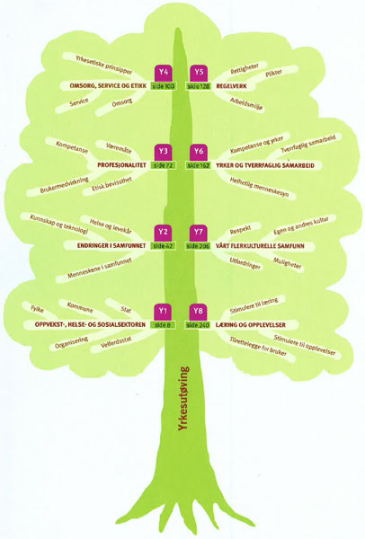
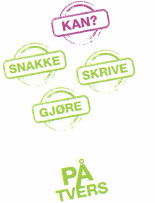
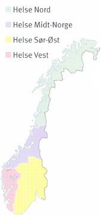
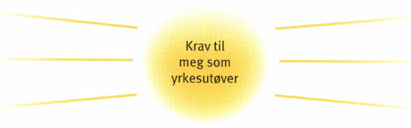
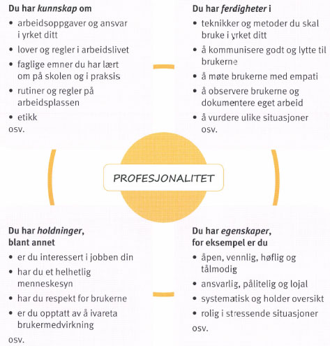
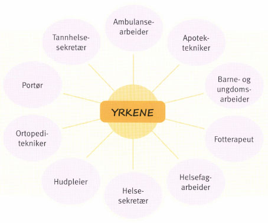
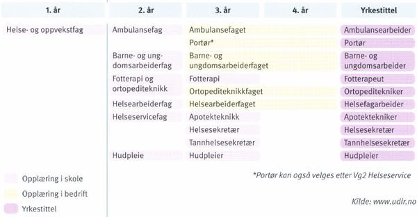
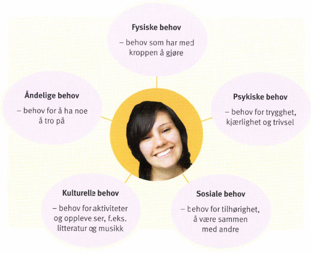
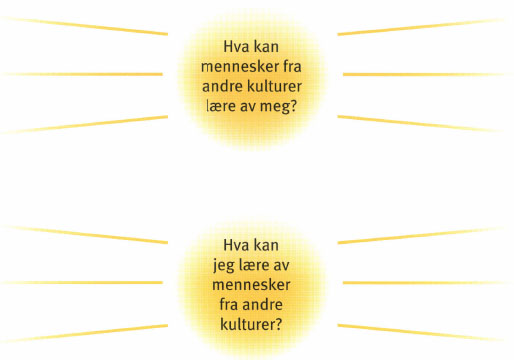
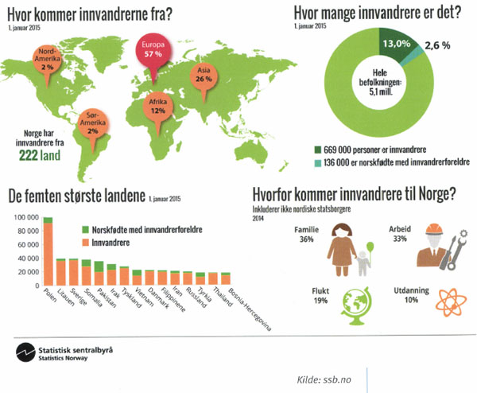

Denne lydboka er produsert som en fulltekstlydbok. Det betyr at dersom du spiller av boka på datamaskin, med et avspillingssystem for DAISY-lydbøker, så vil all teksten i boka vises på skjermen. Du kan klikke direkte på en setning i teksten for å starte avspilling. Det er ikke nødvendig å bruke datamaskin for å spille av fulltekstlydboka. På DAISY-spillere hvor det ikke kan vises noe tekst, vil avspilling av lydboka fungere på samme måte som avspilling av vanlige DAISY-lydbøker.
Denne boka er laget slik at overskriftene er plassert på 6 nivåer. Bokas kapitler, Viktig informasjon ved bruk av denne lydboka, innholdslista, ordforklaringer bakerst i boka, stikkordregisteret og kildelista, er på nivå 1, som er det høyeste nivået.
Hovedpunkter og oppgaver som ligger bakerst i hvert kapittel, er på nivå 2.
Andre overskrifter ligger på lavere nivåer.
Ordforklaringer, er i lydboka lagt til slutt i avsnittet de hører til under.
Av pedagogiske grunner kan rekkefølgen på tekster og illustrasjoner være annerledes i lydboka enn den trykte boka. Tekster som er utenom hovedteksten og en del bilder, kan være flyttet og er derfor på en annen side i lydboka. Lydboka viser ikke alle bildene, i stedet blir det gitt en beskrivelse. Bildene som ikke er oppført i bildelista blir vist i lydboka.
Bakerst i boka er det to alfabetisk ordnede lister. En liste over ordforklaringer og et stikkordregister. Hver bokstav i ordforklaringslisten og stikkordregisteret er skrevet inn i lydboka med henholdsvis et spørsmålstegn og et plusstegn foran. Hvis du spiller av boka på en datamaskin, kan du søke etter det ordet du ønsker ved å skrive inn et spørsmålstegn og den første bokstaven i ordet i ordforklaringslisten, og et plusstegn og den første bokstaven i ordet i stikkordregisteret. Du vil da høre alle ord i ordforklaringslisten eller stikkordregisteret som begynner på denne bokstaven. Hvert ord med forklaring eller sidetall er lest inn i én frase og du kan derfor lett finne riktig ord ved å gå fra frase til frase.
Denne boka er produsert med mulighet for selektiv avspilling av sidetall. Det betyr at du kan velge bort opplesing av sidetall. Enkelte avspillerprogram har ikke denne funksjonen.
Boka kan avspilles på mp3-spiller, men søkefunksjonen blir da betydelig redusert.
Boktittel: Yrke =HO: Vg1 Helse- og oppvekstfag
Forfattere: Agnes Brønstad, Nora Frydendal Hoem, Bente Vetland og Marit Volden.
Utgiver av originalboka: Gyldendal undervisning
Utgave og opplag: 3. utgave, 1. opplag
ISBN originalbok: 9788205482722
Ansvarlig utgiver av lydboka: Statped
Markup-konsulent: Inger Jamtveit
| Bilde | ||
=HO-serien er skrevet etter læreplan i felles programfag for Vg1 Helse- og oppvekstfag i den videregående skolen. Serien består av tre lærebøker:
| • Yrke | |
| • Helse | |
| • Kommunikasjon |
Mål for opplæringen er at eleven skal kunne
Mål for opplæringen er at eleven skal kunne
Mål for opplæringen er at eleven skal kunne
| Bilde | ||
|  |
Gratulerer – du har nå begynt på en spennende utdanning i helse- og oppvekstfag! Før du begynner, er det viktig å vite hva du skal lære i de enkelte programfagene. Det finner du i læreplanen for Vg1. Boka Yrke tar utgangspunkt i kompetansemålet for programfaget Yrkesutøving.
Vi har nummerert kompetansemålene i læreplanen. I Helse- og oppvekstserien (=HO-serien) er det ett mål per kapittel, og kompetansemålet og kapitlet har det samme nummeret. Det gjør det lett å finne fram i bøkene. Du kan også lettere vurdere din egen læring og finne ut om du har nådd kompetansemålene.
| Bilde | ||
| Bilder | ||
| Bilder | ||
|  | ||
Agnes Brønstad, Nora Frydendal Hoem, Bente Vetland og Marit Volden
Når du nå skal i gang med en ny utdanning, er det mye du skal lære. Derfor må du ha kunnskap om hvordan du lærer best. Her får du noen råd som du kan bruke når du jobber med innholdet i bøkene i =HO-serien.
Du lærer best når du klarer å planlegge, gjennomføre og vurdere ditt eget arbeid. Når du for eksempel skal arbeide med et kapittel, handler det om hva du gjør før du starter på kapitlet, mens du går igjennom kapitlet, og etter at du er ferdig med kapitlet.
| Bilde | ||
| Bilde | ||
Først og fremst må du vite hva du skal lære, og hva som er forventet av deg. Derfor bør du tidlig gjøre deg kjent med kompetansemålet i læreplanen. Det finner du i starten til hvert kapittel.
Du lærer raskere når du har noen knagger du kan henge ny kunnskap på. Derfor er det viktig å finne ut hva du allerede kan om emnet.
Det kan du gjøre på mange måter. I bøkene er startsiden i hvert kapittel lagt opp til at du kan aktivere det du allerede kan, og knytte det sammen med det du skal lære:
Når du har gjort oppgavene, kan du for eksempel fylle inn i skjemaet under:
Å lære er hardt arbeid og krever innsats, øvelse, konsentrasjon og utholdenhet. Derfor må du jobbe aktivt med stoffet. Det kan du gjøre alene, men det er også nyttig å snakke og samarbeide med andre. Når du forteller en medelev med egne ord hva du tror du vet om et emne, blir det lettere å se om du har forstått. Her er noen forslag til aktiviteter. Foreslå gjerne flere selv:
| Bilde | ||
Hovedpunktene og oppgavene på slutten av hvert kapittel hjelper deg til å se hva du har lært. Du bør være aktiv også når du går igjennom oppgavene, og snakke, skrive og bruke den kunnskapen du har skaffet deg i løpet av kapitlet. Det forteller deg om du har lært viktige begreper og innhold som du trenger i ditt framtidige yrke, og om du har nådd kompetansemålet.
Etter at du har gjort alle oppgavene, kan du utvide skjemaet på forrige side:
Tilbake til start-oppgavene får også fram hva du mestrer, og hva du må øve mer på. Det kan du bruke for å vurdere din egen læring, blant annet slik:
| • Hva fungerte bra, og hva fungerte ikke? Hvorfor? | |
| • Hvordan klarte jeg å nå de målene jeg satte meg? | |
| • Hva bør jeg gjøre mer og mindre av, og hvorfor? |
Du bør også sørge for å få råd av lærere og andre om hvordan du kan forbedre læreprosessen din. En slik samtale fungerer best når du selv – på forhånd – har reflektert (tenkt) rundt din egen læreprosess. Det kan gjøre det lettere å oppnå mestring og øke motivasjonen til å jobbe bedre med de neste kapitlene.
| Bilde | ||
I løpet av livet har vi alle bruk for tjenester fra oppvekst-, helse- og sosialsektoren. Kanskje gikk du i en barnehage før du begynte på skolen? Deretter fortsatte du på grunnskolen, før du nå går på videregående skole. I løpet av skoletida har du sikkert vært hos lege og tannlege og kanskje også snakket med helsesøster på skolen. Dersom du blir syk eller skadet, kommer du kanskje på sykehus. Når du blir eldre, kan det hende du har behov for hjemmehjelp, eller du må flytte på sykehjem.
Alle disse tjenestene – og mange flere – er velferdstjenester som alle som bor i Norge, har rett på. Når du skal jobbe i én av disse sektorene, trenger du derfor kunnskap om hvordan de ulike tjenestene er bygd opp og fungerer. Da blir det lettere å forstå dine egne arbeidsoppgaver og samarbeidet med andre yrkesgrupper. Du kan også bedre informere brukerne om hvilke tilbud som finnes, og hvor de skal henvende seg.
Det er staten, fylket eller kommunen som har ansvaret for de ulike velferdstjenestene.
Familien Pedersen består av mor, far, Siri på 19 år, Johan på 14 år og Milla på 9 år. I 1. etasje bor også barnas mormor. Familien er svært aktiv. Både mor og far er i full jobb. Siri går siste året på videregående skole og har ekstrajobb som fritidskontakt. Johan går på ungdomsskolen. To kvelder i uka er han på fritidsklubb. Milla går på barneskolen og i skolefritidsordningen (SFO).
Den siste tiden har ungene måttet hjelpe til litt ekstra hjemme. Årsaken er at faren deres falt ned fra stigen da han malte huset. Han fikk et brudd i høyre arm og skulder og måtte være på sykehuset i tre dager. Nå er han hjemme igjen, men er sykmeldt for en kort periode.
Mor er besøksvenn én kveld i uka gjennom Røde Kors. Mormor er pensjonist. Hun er ganske sprek, men trenger hjelp til husarbeid. Derfor har hun hjemmehjelp én gang i uka.
I en velferdsstat har vi ulike velferdsgoder – vi har blant annet rett til tjenester som skolegang, helsehjelp og ulike ytelser, som pensjoner og trygder. Alle i samfunnet har krav på disse velferdsgodene. Det gjelder uansett alder og kjønn, hvor vi bor, og hva vi tjener. Det finnes både private og offentlige velferdstjenester.
Målet med velferdsgodene er å sikre at alle har en viss levestandard, og at vi kan få hjelp når vi trenger det. Det kan for eksempel være dersom vi blir syke, arbeidsledige eller kommer ut for en ulykke.
Vi har rett til velferdsgoder samme hva vi tjener, og hvor vi bor i landet. Men i en velferdsstat har vi ikke bare rettigheter. Vi har også plikter. Én av pliktene er å betale skatt. Skattepengene går blant annet til å finansiere de tjenestene vi får fra velferdsstaten.
| Bilde | ||
Jenny er 76 år og pensjonist. Hun bor alene og har ingen familie i nærheten. Jenny har en datter, men hun bor langt unna. Datteren er sjelden på besøk.
Jenny er operert i begge hoftene. Hun kommer seg fram ved hjelp av rullator. I tillegg har hun diabetes og bruker insulin. Hver dag kommer hjemmesykepleieren på besøk. «Heldigvis bor vi i en velferdsstat», tenker Jenny. «Hvis ikke, ville jeg ikke hatt råd til hjemmesykepleie.»
| Bilde | ||
De tjenestene vi kan få fra oppvekst-, helse- og sosialsektoren, er både offentlige og private.
Offentlige tjenester blir drevet av stat, fylke eller kommune. Pengene vi betaler i skatter og avgifter, blir brukt til å drive den offentlige sektoren. Derfor er tjenestene gratis, eller vi betaler en egenandel.
| Bilde | ||
Private tjenester drives av personer som eier og driver en egen praksis. Det kan være enkeltpersoner, flere personer sammen eller en bedrift. Hvis du velger en privat tjeneste, må du som regel betale for hele tjenesten. Men mange private leger og enkelte andre private tilbydere får dekket tjenesten av det offentlige. Da må du som regel ikke betale mer enn om du gikk til en offentlig ansatt lege eller et offentlig servicetilbud.
Det offentlige kan også sette ut deler av en tjeneste til private. Det kan for eksempel være å sørge for renholdet på et sykehjem eller drive kantina på et sykehus.
En del av det private velferdsarbeidet blir utført av frivillige organisasjoner, for eksempel Røde Kors eller Frelsesarmeen. Slike organisasjoner er opprettet fordi engasjerte mennesker har sett et behov for frivillig innsats på mange områder, og har ønsket å gjøre noe med det.
Det er stat, fylke eller kommune som har ansvaret for tjenestene i de tre sektorene. Med staten mener vi her Storting og regjering. Staten har det overordnede ansvaret for disse tjenestene. De fleste velferdstjenestene finner vi i kommunene.
At staten har det overordnede ansvaret, betyr blant annet at den vedtar lover og forskrifter som alle må følge. Staten sørger også for at lover og forskrifter blir gjennomført. Ansvaret for å gjennomføre det som staten har bestemt, ligger hos
| Ansvar | Oppvekstsektoren | Helsesektoren | Sosialsektoren |
| Stat | |||
| Fylkeskommune | |||
| Kommune |
I tillegg fører staten kontroll med tjenestene. Det betyr at den kontrollerer at ulike institusjoner, for eksempel sykehus, følger opp det som er bestemt i lover og forskrifter. Kontrollen blir utført av ulike tilsyn, for eksempel Mattilsynet og Statens helsetilsyn.
Kommunene har ansvaret for de fleste velferdstjenestene (i Oslo er det bydelene). Mange av disse tjenestene må kommunen ha. Men kommunene kan selv bestemme hvordan de organiserer tjenestene. Derfor kan tjenestene variere fra sted til sted (eller fra bydel til bydel i Oslo). Flere kommuner kan også samarbeide om en tjeneste.
I yrket du velger, kommer du i kontakt med både stat, fylke og kommune i ulike situasjoner. Her er et eksempel fra ett av yrkene:
Caroline er helsefagarbeider og har jobbet ved Lillengen sykehjem i to år. Hun er primærkontakt for flere brukere og trives svært godt. En av brukerne er Ludvig. Han er 75 år og får alderspensjon som pensjonert skuespiller.
Ludvig har lammelser i en arm og en fot og får derfor tilbud om fysioterapi én gang i uka. I tillegg har Caroline vært i kontakt med ergoterapeuten i kommunen og med hjelpemiddelsentralen i fylket for å få informasjon om hva som finnes av hjelpemidler til Ludvig. Ergoterapeuten er innom en dag for å snakke nærmere med Ludvig om ulike hjelpemidler.
De siste dagene har Ludvig hatt vondt i en tann. Sammen med Caroline bestemmer han seg for å bestille en time hos tannlegen så fort som mulig.
I dette eksemplet får Ludvig tjenester som staten, kommunen eller fylket har ansvar for.
Staten har ansvaret for universiteter og høgskoler. Den har også det overordnede ansvaret for barnehager, grunnskoler og videregående skoler. Det betyr at staten lager lover som gjelder for barnehager og skoler, og blant annet utarbeider læreplaner for grunnskole og videregående skole.
Fylket har ansvaret for videregående opplæring. Sammen med kommunen har fylket ansvaret for den pedagogisk-psykologiske tjenesten (PPT eller PP-tjenesten).
Fylkeskommunen har ansvaret for all videregående opplæring. Alle som har fullført grunnskolen, har rett til tre års videregående opplæring. Opplæringen skal føre fram til studiekompetanse, yrkeskompetanse (for eksempel fagbrev) eller grunnkompetanse (hvis eleven ikke fullfører hele utdanningen).
Ungdom kan søke på tre utdanningsprogrammer. De har rett til å komme inn på ett av dem. Etter det har de rett til to års videre opplæring som bygger på utdanningsprogrammet.
Fylkeskommunen må også sørge for oppfølgingstilbud for ungdom som ikke går på videregående skole. Oppfølgingstjenesten kan for eksempel hjelpe hver enkelt med råd og hjelp til å søke opplæring eller arbeid.
| Bilde | ||
Fylkeskommunen og kommunen har sammen ansvaret for den pedagogisk-psykologiske tjenesten (PPT).
Kommunen har ansvaret for barnehagen, grunnskolen og skolefritidsordningen (SFO). Sammen med fylket har kommunen ansvaret for den pedagogisk-psykologiske tjenesten (PPT).
Barnehagen er et frivillig tilbud til barn fra de er ett år og til de begynner på skolen. Barnehagen skal gi god omsorg og være et trygt sted for fellesskap og vennskap. Den skal legge til rette for lek og andre aktiviteter. Barnehagen skal også gi grunnleggende kunnskaper, for eksempel språklig og sosial kompetanse.
Barnehagene i Norge eies og drives av kommunen eller av private. Det er likevel kommunen som har ansvaret for at det er nok barnehageplasser til alle som trenger det. Målet er full barnehagedekning: Alle som ønsker det, skal få plass.
| Bilde | ||
Alle elever i alderen 6–16 år har krav på skoleplass i grunnskolen. Grunnskolen er obligatorisk. Det betyr at alle barn har rett og plikt til å følge undervisningen i ti år. Lærebøker og undervisning i grunnskolen er gratis. Det finnes også private grunnskoler.
| Bilde | ||
Skolefritidsordningen skal gi et trygt omsorgs- og fritidstilbud før og etter skoletid. Tilbudet skal være preget av lek, aktiviteter og omsorg. Skolefritidsordningen kan gis til elever på 1.-4. årstrinn. Barn som har spesielle behov, kan gå i SFO fra 1. til 7. årstrinn.
Kaja er barne- og ungdomsarbeider. Hun jobber som assistent i en 1. klasse. Der følger hun opp elever som trenger ekstra støtte i noen fag. Etter skoletid jobber hun på SFO. Hun setter i gang aktiviteter og er med barna og leker. «I går bakte vi pizza. Da vi hadde spist, hadde vi det gøy med baller i gymsalen.»
Kaja synes det er bra å jobbe både i skolen og på SFO. «Da får jeg sett barna både i undervisning og lek. På den måten blir jeg bedre kjent med dem. Da kan jeg også hjelpe dem bedre i klasserommet.»
Barna kan selv få velge hvilke aktiviteter de ønsker å være med på. De voksne som er til stede, skal tilrettelegge for lek og kultur- og fritidsaktiviteter.
| Bilde | ||
Mange elever trenger tilrettelagt undervisning. Det kan for eksempel være barn og unge som har lærevansker, dysleksi (lese- og skrivevansker), matematikkvansker eller hørselsproblemer. Den pedagogisk-psykologiske tjenesten (PPT) skal sørge for at elevene får den hjelpen de har krav på. Den samarbeider med skole og barnehage og vurderer om undervisningen skal tilrettelegges for eleven. PP-tjenesten kan gi råd og veiledning til foreldre og ansatte i skoler og barnehager.
For barn som ikke har begynt på skolen, kan PPT gi tilbud om psykologisk hjelp. De som jobber i PPT, er vanligvis psykologer eller spesialpedagoger.
| Bilde | ||
Line er 9 år. Hun går i 4. klasse i grunnskolen. Line sliter med lesing. Hun leser sakte og synes at bokstavene stokker seg. Både Line og foreldrene er bekymret. De har snakket med læreren. Både hun og foreldrene vil at PPT skal vurdere Line. De håper at PPT kan finne ut hva slags hjelp Line har behov for.
I helsesektoren finner vi en lang rekke helsetjenester som gis både i og utenfor institusjon. Det kan dreie seg om legehjelp, tannhelse og ulike helsetjenester i hjemmet (for eksempel hjemmesykepleie, fysioterapi og fotterapi).
Staten har ansvaret for spesialisthelsetjenesten. Den er organisert i fire regionale helseforetak.
Hvis du går til fastlegen og trenger mer hjelp enn det legen kan gi, vil hun eller han sende deg videre til en spesialist. En spesialist er en ekspert på sitt område. Hjertespesialist, øyelege, gynekolog og psykolog er eksempler på spesialister. Du finner spesialister både i og utenfor institusjoner.
Staten har organisert spesialisthelsetjenesten i fire regionale helseforetak: Helse Nord, Helse Midt-Norge, Helse Vest og Helse Sør-Øst. Helseforetakene skal sørge for at alle som bor i helseregionen, har et godt tilbud av spesialisthelsetjenester både i og utenfor institusjon.
Under seg har de regionale helseforetakene flere lokale helseforetak. Det kan for eksempel være ett eller flere sykehus.
| Bilde | ||
Kart: Helseregionene |
||
|  | ||
Barn og unge opptil 18 år har rett til gratis tannbehandling (men ikke til tannregulering). Ungdom som fyller 19 eller 20 år i behandlingsåret, betaler bare 25% av det som behandlingen koster. Kravet er at de må gå til en offentlig tannlege.
Noen grupper har rett til gratis tannbehandling. Det gjelder
| • eldre som bor på sykehjem eller mottar hjemmesykepleie i mer enn tre måneder | |
| • personer med utviklingshemning i og utenfor institusjon (unntaket er dersom brukeren trenger tannregulering) |
Andre grupper kan ha rett til å få dekket hele eller deler av utgiftene til tannbehandling. Det gjelder blant annet
Kommunen må blant annet sørge for tilbud om legetjeneste, fysioterapitjeneste, jordmortjeneste, hjemmesykepleie, sykehjem og helsestasjons- og skolehelsetjeneste, eventuelt i samarbeid med andre kommuner. Kommunene kan også tilby ergoterapitjenester og psykologtjenester. I helseportalen, helsenorge.no, kan du lese om hvilke helsetjenester kommunen må ha.
| Bilde | ||
De som bor i en kommune, har rett til en fastlege. Det er likevel frivillig å bruke fastlegen. Du kan i stedet velge å gå til en annen lege. Men da må du betale en høyere egenandel.
Kommunen skal også gi tilbud om legevakt døgnet rundt.
| Bilde | ||
Andrine er barne- og ungdomsarbeider i 3. klasse på Solløkka skole. Per på 8 år har falt og slått seg kraftig da skolen hadde idrettsdag. Andrine tar med seg Per til helsesøster på skolen, slik at han kan få renset såret og få på bandasje. «Helsesøster er så snill», sier Per, «jeg snakket med henne flere ganger i 1. klasse da foreldrene mine ble skilt.»
I alle kommuner skal det være en helsestasjons- og skolehelsetjeneste. Den er for barn og ungdom mellom 0 og 20 år. Hver helsestasjon blir ledet av en helsesøster. Helsestasjonen driver helsefremmende og forebyggende helsearbeid for barn og gravide.
I skolehelsetjenesten jobber helsesøstre med helseundersøkelser, vaksinasjon og rådgivning.
I mange kommuner finnes det også en egen helsestasjon for ungdom. Den gir blant annet råd om samliv og seksualitet, prevensjon, røykeslutt, spiseproblemer og problemer med rusmidler.
Brukere som trenger det, kan få en lang rekke helsetjenester i eget hjem. Hjemmesykepleien kan for eksempel hjelpe hver enkelt med medisiner, sørge for dusjing og daglig stell, behandle sår og gi omsorg. I tillegg kan brukerne få fysioterapi- og ergoterapitjenester, fotterapi og psykisk hjelp.
Hjelpen kan også gis utendørs. Det kan være aktuelt dersom for eksempel brukeren trenger gåtrening eller annen form for rehabilitering.
| Bilde | ||
Sykehjem er tilbud til eldre som ikke lenger kan bo hjemme. På sykehjem får beboerne omsorg, stell og pleie døgnet rundt.
Noen eldre er også på sykehjem i kortere perioder. Det kan for eksempel være etter en operasjon. Da er målet at de skal kunne klare seg hjemme etterpå. I noen kommuner kalles sykehjemmet bo- og servicesenter eller bo- og behandlingssenter.
| Bilde | ||
«Hei mor, hvordan har du det?», sier Anders. Han er på besøk på sykehjemmet der moren, Hanny, bor. Hun er 87 år og en blid, gammel dame. Hun har bodd på sykehjemmet i fire uker. Rommet hennes er lyst og fint. Hanny har med seg mange møbler hjemmefra. På veggen henger det bilder av barnebarn og oldebarn.
«Jeg har det bra. Vi har hygget oss i fellesstua i mange timer i dag. Tenk, en fra personalet bakte kake til oss. Har du lyst på kaffe forresten?» Anders og moren drikker kaffe og koser seg. Hanny forteller om alle aktivitetene som er på sykehjemmet. En gang i uka er det sang og musikk. Det er sittedans, andakter, turer og konserter. Hanny er særlig glad for at sykehjemmet har en lesegruppe. «En fra personalet leser høyt fra en bok eller avis. Det er så fint nå som jeg ikke orker å lese så mye selv lenger.
Noen dager er Hanny på rommet sitt. Da hender det at helsefagarbeider Monica kommer inn og prater en stund. Om kvelden ser Hanny ofte på tv eller tenker tilbake på livet sitt.
Rehabilitering handler om å trene opp en syk eller skadet person. Målet er at personen skal kunne klare seg i dagliglivet, i arbeid og ellers i samfunnet. Kommunen skal følge med på hvor mange som trenger hjelp. Alle brukere skal ha en individuell plan.
| Bilde | ||
Jens, 55 år, fikk en dag plutselig hjerneslag. Han overlevde, men er lammet i høyre arm og fot. Han har også problemer med å snakke. Deler av munnen er lammet.
Da Jens var på sykehuset, fikk han besøk av ulike fagfolk fra kommunen. De ønsket å snakke om hva slags hjelp han trengte når han kom hjem. Da han kom hjem, fikk han besøk av ergoterapeuten og fysioterapeuten. Hjemmesykepleieren var også med. De diskuterte blant annet hvilke hjelpemidler Jens hadde bruk for. Jens fortalte også hvilke andre tilbud han ønsket seg. Han hadde alltid vært glad i å svømme. Nå ville han gjerne få trene i vann en dag i uka. Alle tiltakene ble en del av en individuell plan for Jens.
Kommunen har ansvaret for at det lokale miljøet ikke fører til sykdom eller skade. Det betyr at kommunen blant annet sørger for rent drikkevann og ren luft. Den må også ta hånd om avfall og kloakk.
Samhandlingsreformen har som mål å bedre folkehelsa. For å nå målet skal det legges større vekt på å forebygge sykdom og skade og behandle pasientene tidlig, før sykdommen eller skaden er blitt for alvorlig. Behandlingen skal også skje så nær hjemmet til pasienten som mulig. Det betyr blant annet at flere oppgaver blir overført fra sykehuset til kommunen. Det fører til en styrking av helsetjenester i hjemmet.
Her er noen hovedpunkter ved samhandlingsreformen:
Samhandlingsreformen har ført til opprettelsen av lokalmedisinske sentre og frisklivssentraler.
Les mer om tverrfaglig samarbeid i kapittel 6.
Les om folkehelseloven på side 145 og i kapittel 2 i boka Helse.
| Bilde | ||
I et lokalmedisinsk senter er ulike tjenester samlet på ett sted. Det er en fordel dersom sykehuset er mange mil fra der pasienten bor. Ved enkle behandlinger og oppfølginger kan pasientene få et tilbud i nærmiljøet. Her kan pasientene også få et helsetilbud før de skal legges inn på sykehus, eller etter at de er skrevet ut fra sykehuset.
Kommunene kan selv bestemme hvilke tjenester sentrene skal tilby. Flere kommuner kan også samarbeide om et slikt tilbud.
En frisklivssentral tilbyr hjelp til personer som trenger å endre vaner eller mestre sykdom. Målgruppen er personer som er syke, eller som har høy risiko for å utvikle sykdom.
Birger, 52 år, har fått beskjed av legen sin om at han må slutte å røyke. Hvis ikke, kan han utvikle KOLS. Birger har prøvd å slutte mange ganger før, men uten å greie det. Legen sier at han kan skrive ut en frisklivsresept, eller så kan Birger selv ta kontakt med en frisklivssentral. Der kan han få personlig veiledning og støtte og også delta i en sluttegruppe, dersom han vil det. Birger synes det høres interessant ut. En sluttegruppe, som består av andre som også forsøker å slutte å røyke, kan sikkert være til hjelp, tenker han.
En frisklivssentral har også tilbud til dem som trenger å bli mer fysisk aktive, eller som må legge om kostholdet. Noen sentraler har egne tilbud til barn og unge. De kan ha søvnkurs, kurs i å mestre depresjon eller samtaler om alkoholvaner.
Frisklivssentralen er en tverrfaglig tjeneste. De som jobber i en frisklivssentral, har ulik faglig bakgrunn, for eksempel innenfor fysioterapi, ernæring, pedagogikk, ergoterapi, sykepleie, folkehelsevitenskap, psykologi, fysisk aktivitet eller helse.
| Bilde | ||
Sosialsektoren omfatter både sosiale tjenester, ulike trygder og barneverntjenester.
Den statlige arbeids- og velferdsetaten har det overordnede ansvaret for sosialtjenestene. Sammen med sosialtjenestene i kommunene danner etaten det vi kaller arbeids- og velferdsforvaltningen (NAV).
Det finnes NAV-kontorer i hver kommune. De lokale NAV-kontorene har blant annet ansvaret for å utbetale pensjoner etter folketrygden og yte økonomisk sosialhjelp. De hjelper også personer med å finne arbeid eller søke dagpenger.
Folketrygden er en offentlig ordning for alle som er bosatt i Norge. Den skal sikre oss en viss økonomisk trygghet. Alle i Norge er medlemmer i folketrygden. Det vi betaler i skatt, finansierer folketrygden.
Det er mange ytelser vi kan få etter folketrygden. Det er for eksempel gratis å ligge på sykehus – folketrygden betaler. I Norge får vi også full lønn under sykdom.
Folketrygden gir også andre ytelser. Det er blant annet ytelser ved arbeidsledighet, dødsfall, uførhet, svangerskap og fødsel og aleneomsorg for barn.
Barnetrygd er en offentlig støtte til barnefamilier. Den skal bidra til å dekke utgiftene ved det å ha barn. Barnetrygd utbetales for alle barn under 18 år som bor i Norge. Enslige forsørgere kan få barnetrygd for ett barn mer enn de har (utvidet barnetrygd).
Det er ikke nødvendig å søke om barnetrygd. Den blir gitt automatisk.
Kontantstøtte skal bidra til at familier selv kan ta omsorg for barna. Støtten gis for barn mellom ett og to år, eller for adoptivbarn som ikke har begynt på skolen. Dersom barnet ikke er i barnehagen, kan foreldrene få full kontantstøtte. Er barnet delvis i barnehagen, kan de få redusert kontantstøtte.
Staten har det overordnede ansvaret for barne- og familievernet. Det har de gjennom Bufdir og Bufetat. Bufetat skal gi barn, unge og familier som trenger det, hjelp, støtte og andre nødvendige tiltak.
Bufetat har blant annet ansvaret for å skaffe fosterhjem. Etaten driver også barneverninstitusjoner og familievernkontorer. Bufetatkontorene har direkte kontakt med barneverntjenesten i kommunene.
Bufetat er organisert i fem regioner. Barne- og familievern er ikke en del av NAV.
| Bilde | ||
Det finnes hjelpemiddelsentraler i hvert fylke. Unntaket er Oslo og Akershus, som er slått sammen til en felles hjelpemiddelsentral. Det er NAV som kjøper inn og eier hjelpemidlene.
De som trenger det, kan søke kommunen om å få låne hjelpemidler og utstyr. Det kan være rullestol, rullator, elektrisk seng eller spesialutstyr til kjøkken. Hjelpemiddelsentralen har også ansvaret for tolketjeneste til døve, døvblinde og personer med hørselshemninger.
På hjelpemiddelsentralen kan man også få informasjon og råd om ulike typer hjelpemidler. Arbeids- og velferdsforvaltningen (NAV) har ansvaret for hjelpemiddelsentralen.
Kommunen har ansvaret for sosialtjenesten og barneverntjenesten.
Sosialtjenesten skal sørge for at alle som bor i kommunen, har gode levekår. Det gjør den på flere måter, for eksempel gjennom
| • forebyggende virksomhet | |
| • sosiale tjenester | |
| • tiltak overfor rusmiddelmisbrukere | |
| • økonomisk stønad |
Sosialtjenesten skal forebygge sosiale problemer og sette i gang forskjellige tilbud for dem som trenger det. Tilbudene skal særlig være rettet mot barn, eldre og personer med funksjonshemninger. Fritidsklubber og dagsentre er eksempler på slike tilbud. Målet er at hver enkelt skal ha et aktivt og godt liv sammen med andre.
Sosialtjenesten må skaffe seg god kunnskap om situasjonen til utsatte grupper, for eksempel ungdommer og personer med psykiske plager eller rusproblemer. Det kan de blant annet gjøre gjennom oppsøkende arbeid. I dette arbeidet samarbeider sosialtjenesten ofte med frivillige organisasjoner.
Sosiale tjenester skal hjelpe mennesker som har kommet i en vanskelig situasjon. Det kan for eksempel være
| Bilde | ||
Familien Hansen består av mor, far og to barn. Sara, datteren på 7 år, er sterkt funksjonshemmet. Hun må ha hjelp og pleie hele døgnet. Mor tar seg av datteren på dagtid. Det er ikke lett å ta med Sara noen steder. Thea på 12 år er svært glad i søsteren sin. Likevel synes hun det er vanskelig. Hun føler at foreldrene aldri har tid til henne. De kan heller aldri dra på ferie sammen.
Mor og far blir også svært slitne noen ganger. Derfor har de søkt om avlastning. Det har de nå fått. Sara skal være i en avlastningsbolig en uke. Da kan mor, far og Thea dra på ferie. Det gleder de seg til. Samtidig synes de det er leit at Sara ikke kan være med. Men de vet at hun blir tatt godt vare på. Foreldrene vet også at de trenger litt fri innimellom. På den måten får de mer overskudd til å ta seg av både Sara og Thea.
Sosialtjenesten kan gi støtte, råd og veiledning til rusmisbrukere og deres pårørende. Den kan for eksempel sørge for at personen får behandling, støttekontakt og hjelp på arbeidsplassen. Tjenesten kan også følge opp rusmisbrukeren under behandling.
Økonomisk stønad er en midlertidig inntekt som kan gis til dem som har kommet i en vanskelig livssituasjon. Målet er at personen skal bli selvhjulpen og klare seg selv så raskt som mulig.
Barneverntjenesten skal sørge for at det er trygt for barn og unge (opptil 18 år) å vokse opp i Norge. Hvis barn og unge har behov for hjelp, kan tjenesten sette inn ulike tiltak. Det kan for eksempel være støttekontakt, plass i barnehage eller hjelp i hjemmet.
Noen ganger må barnevernet ta over ansvaret for barnet eller den unge. Det betyr at barnet blir plassert utenfor hjemmet. Det kan være i fosterhjem eller på en barneverninstitusjon. I dag er det et mål at barn og unge skal få hjelp der de bor. Det fører til at flere blir plassert i fosterhjem og færre i barneverninstitusjoner.
En frivillig organisasjon driver frivillig arbeid til nytte for samfunnet, miljøet eller for en eller flere personer. At arbeidet er frivillig, betyr at personene ikke får betalt for det arbeidet de gjør.
Mange av brukerne du møter i jobben din, kan ha ulike ønsker og behov for aktivisering. Andre, både pasienter og pårørende, ønsker mer opplysning om hvordan de skal leve med for eksempel en kronisk sykdom. Å gi alle det tilbudet de ønsker, kan være vanskelig innenfor oppvekst-, helse- og omsorgstjenesten. Det gjelder særlig dersom brukeren har et stort behov for hjelp, støtte eller aktivisering. For noen kan det være vanskelig å finne noe de er interessert i. Derfor er det viktig og nyttig å samarbeide med ulike organisasjoner og foreninger.
Bilde: Frivillighet Norge |
||
Noen organisasjoner sørger for eksempel for fritidstilbud til barn og unge. Andre driver helseopplysning og holder kurs for pasienter, pårørende og helsepersonell. De kan også ha informasjonstelefoner, for eksempel Demenslinjen, Hjertelinjen og Kolslinjen. Her kan pasienter, pårørende og andre få råd og informasjon. Noen organisasjoner har også besøkstjeneste.
Her i landet er det lange tradisjoner for frivillig organisasjonsarbeid. Både religiøse, humanitære og sosiale organisasjoner har engasjert seg innenfor eldreomsorg og rusbehandling. Det finnes et stort antall frivillige organisasjoner i Norge. Mange av dem retter arbeidet sitt inn mot oppvekst-, helse- og sosialsektoren.
Vi skiller ofte mellom interesseorganisasjoner og humanitære organisasjoner.
En interesseorganisasjon kjemper for medlemmenes interesser. Medlemmene kan for eksempel være pasienter eller brukere med en bestemt sykdom og deres pårørende. Eksempler på slike pasient- og brukerorganisasjoner er Diabetesforbundet, Barnekreftforeningen og Hørselshemmedes landsforbund. Mange av disse foreningene er organisert i Funksjonshemmedes Fellesorganisasjon.
Humanitære organisasjoner arbeider for at mennesker som lider eller har det vanskelig på en eller annen måte, skal få det bedre. De fire største humanitære organisasjonene med tilknytning til helsevesenet er Røde Kors, Norske Kvinners Sanitetsforening, Nasjonalforeningen for folkehelsen og Norsk folkehjelp.
| Bilde | ||
Hva betyr det å ha god digital kompetanse?
Hvilke krav stilles til deg som yrkesutøver når samfunnet hele tiden er i endring? Skriv inn ord for hver strek ut fra sola.
| Bilde | ||
|  | ||
Samfunnet utvikler seg hele tiden – også i dag. Vi får høyere utdanning og mer kunnskap. Den teknologiske utviklingen skjer raskt, og nye digitale verktøy gjør at vi lever i en verden som stadig endrer seg.
Vi har generelt gode levekår og god folkehelse i Norge. Samtidig dukker det opp nye helseproblemer, både når det gjelder fysisk og psykisk helse. For eksempel sliter mange med psykiske plager som angst og depresjon, og flere er ensomme.
Vi reiser og flytter mer, og Norge er i dag et flerkulturelt samfunn. I tillegg har familiestrukturen endret seg mye. Det samme har skjedd med normer og verdier som vi før tok for gitt.
| Bilde | ||
Filip er helsefagarbeider, og i dag er han på hjemmebesøk hos Anna, 85 år. Hun trenger hjelp til morgenstellet, men ellers greier hun seg godt. Når Filip kommer, får hun akkurat en sms fra ett av barnebarna, som hun svarer ivrig på. Hun forteller Filip at hun jo må følge med på utviklingen. «Se her, jeg fikk et flott nettbrett til bursdagen min! Men jeg sliter litt med å bruke det. Kanskje du kan hjelpe meg?»
Janne er helsesekretær. Nå skal hun ta blodprøve av Emma, 12 år. Emma er pratsom og forteller livlig om faren og hans nye kone. De venter barn om kort tid, og Emma gleder seg. «Jeg er enebarn, så det blir gøy med en søster eller bror. Og Siri, kona til pappa, har tre barn fra før. Det var litt rart i begynnelsen, men nå er jeg glad for den store familien min!»
Ahmed er apotektekniker. Han bruker mye tid på å holde seg informert om nye legemidler og andre produkter. Det er nødvendig, forteller han, fordi mange kunder vet mye om helse og ulike produkter i dag. De spør og vil ha god informasjon. «Noen ganger må jeg korrigere de opplysningene de har funnet, for eksempel på Internett», sier han. «Derfor er det viktig å holde seg faglig oppdatert.»
Alle disse endringene påvirker arbeidsdagen og yrkesutøvingen i oppvekst-, helse- og sosialsektoren. Oppsummert skal du lære om endringer på disse områdene:
Både helse og levekår er gode, men utfordringer på begge områder krever nye kunnskaper og ny kompetanse. Forebyggende og helsefremmende arbeid blir stadig viktigere – i alle sektorer. Økonomisk ulikhet blant brukerne krever en bevisst holdning av deg som yrkesutøver.
Stort sett har vi god folkehelse i Norge – vi har aldri vært så friske som nå. Det er likevel fortsatt helseproblemer, som for eksempel fedme og psykiske problemer. Vi ser også klare sosiale helseforskjeller.
Vi spiser mer frukt og grønnsaker, bruker mindre fett og røyker mindre enn tidligere. Likevel finnes det fortsatt helseproblemer. De fleste bruker for eksempel for mye sukker og salt. I tillegg spiser vi for mye rødt kjøtt og bearbeidet kjøtt, som pølser og bacon. Mange er for lite fysisk aktive, og overvekt og fedme er et alvorlig problem. Livsstilssykdommer øker, som for eksempel hjerte- og karsykdommer og diabetes.
Psykiske lidelser øker i befolkningen, også blant barn og unge. Halvparten av oss vil oppleve psykiske problemer i løpet av livet. Alle kan rammes. Ensomhet er også et problem for mange. Undersøkelser viser at ensomhet kan være like skadelig som røyking.
Kilde: Folkehelsemeldingen 2014–2015
Det er fortsatt sosiale helseforskjeller mellom ulike grupper i samfunnet. At helseforskjellene er sosiale, betyr at de varierer med utdanning, økonomi og yrke. Generelt kan vi si at jo høyere utdanning og bedre økonomi, desto bedre helse.
Kroniske lidelser er for eksempel mer vanlig blant mennesker med kort utdanning og lav inntekt. Personer med funksjonshemninger har også oftere dårligere levekår enn resten av befolkningen.
Vi trenger stadig mer kunnskap for å bedre helsetilstanden for alle i samfunnet. I dette arbeidet har alle som jobber i oppvekst-, helse- og sosialsektoren, en viktig oppgave. Folkehelseloven snakker om «helse i alt vi gjør». Det må du som yrkesutøver ta hensyn til, uansett om du jobber i oppvekstsektoren, helsesektoren eller sosialsektoren.
Det er bedre å forebygge enn å behandle. Derfor må du ha fokus på forebyggende helsearbeid i den jobben du skal gjøre. Det betyr blant annet at du – og kollegene dine – må hjelpe brukerne med å velge en sunn livsstil. Da er du med på å redusere de risikofaktorene som fører til dårlig fysisk og psykisk helse. Det styrker folkehelsa. Her er noen eksempler:
Vi vet at de vanene vi lærer som barn, påvirker oss gjennom hele livet. Derfor er det viktig å begynne tidlig.
| Bilde | ||
Samira jobber som barne- og ungdomsarbeider i Småtroll barnehage. Der har de nylig innført en fast utedag hver uke hele året. Målet er å stimulere barna til fysisk aktivitet. Turen skal gjennomføres uansett vær. De har laget en tursti langs lysløypa med faste poster der ungene skal løse gåter og oppdrag underveis. Kommunen har bygd en stor gapahuk og ei lita hytte de får bruke. Det går litt tregt de første ukene, fordi noen av ungene ikke er vant med å gå i skogen. Men etter hvert begynner ungene å spørre om hva de skal gjøre neste turdag.
| Bilde | ||
Helsefremmende arbeid blir også langt viktigere framover. Det handler om tiltak som bedrer og bevarer helsa vår, og der målet er å øke livskvalitet og trivsel. Som yrkesutøver kan du blant annet stimulere til gode opplevelser og bidra til at brukerne kan oppleve fellesskap, trivsel og glede.
Når det gjelder barn og unge, vet vi at en trygg og god oppvekst fremmer den psykiske helsa. Det er mye samfunnet kan gjøre for å sikre barn og unge god oppvekst.
Vi vet blant annet at det å ha gode venner er med på å forebygge ensomhet og psykiske problemer. I barnehagen må du og de andre voksne derfor bidra til at alle barn kan etablere vennskap med andre. Barn utvikler vennskap blant annet gjennom lek. Derfor må yrkesutøvere i barnehagen og SFO legge til rette slik at alle kan delta i leken og ha noen å leke med.
Helseproblemene vi står overfor, skaper behov for stadig ny kompetanse. Det er viktig å holde seg faglig oppdatert. Samtidig fører samhandlingsreformen blant annet til at flere oppgaver blir overført fra sykehusene til kommunene. Dermed kan du få andre oppgaver og annet ansvar framover.
Behandlingen i sykehusene blir stadig mer spesialisert. I tillegg kommer det hele tiden nye medisiner og behandlinger. Teknologi, som for eksempel kikkhullskirurgi, har ført til kortere behandlingstid på sykehusene. Mange blir behandlet poliklinisk, og pasientene kan reise hjem samme dag.
Samhandlingsreformen har ført til at flere oppgaver blir overført fra sykehuset til kommunen. Dermed er det blitt flere arbeidsplasser for helsearbeidere i kommunen. I tillegg er det krav om mer tverrfaglig samarbeid mellom fagpersonell i sykehus og i kommunehelsetjenesten. Kommunene har opprettet døgnåpne akuttplasser og flere korttidsplasser for å kunne ta imot pasienter som er ferdig behandlet på sykehus.
Mangel på helsepersonell gjør at vi i framtida må arbeide smartere. En smart måte å gjøre det på er ved oppgaveglidning. Det betyr at en oppgave som i dag blir utført av én yrkesgruppe, for eksempel sykepleiere, etter opplæring kan bli utført av en annen yrkesgruppe, for eksempel helsefagarbeidere. Og oppgaver som leger gjør i dag, kan utføres av sykepleiere. Helsefagarbeidere kan for eksempel, etter grundig opplæring, utføre sterile oppgaver som sårskift, sette insulin og levere ut legemidler.
| Bilde | ||
Endringene i helsesektoren fører til at yrkesutøvere stadig må oppdatere kunnskapen sin. Selv om du er ferdig utdannet, er du aldri ferdig utlært. Det skjer stadig utvikling innenfor ulike fagområder. Kanskje får du nye arbeidsoppgaver eller en ny arbeidsplass? Derfor må du være fleksibel: Du må ha en positiv holdning til det å endre deg og den måten du jobber på.
Tom Erik er 2. års lærling som ambulansearbeider. Han synes det er blitt lenger mellom de akutte turene og mer transportoppdrag. Nå spør han lederen sin om det kan være tilfellet. Ja, det stemmer nok, svarer lederen. Han synes det er godt observert. Etter samhandlingsreformen flytter vi ofte pasienter fra sykehus til rehabiliteringssentre og korttidsavdelinger i kommunen, og noen ganger litt fram og tilbake.
Fordelingen av inntekt i befolkningen er skjev, og mange barn lever i familier med svært lav inntekt. Som ansatt i oppvekst-, helse- og sosialsektoren må du behandle alle med respekt og omtanke. I barnehage og skole må du også sørge for at aktiviteter ikke koster for mye. Alle må ha mulighet til å delta.
Folk flest har fått høyere inntekt. Vi har også lav arbeidsledighet sammenliknet med andre land. Samtidig er fordelingen av inntekt skjev: Forskjellen mellom de som har mye og de som har lite, er blitt noe større de seneste årene.
De som sliter mest økonomisk, er personer som er arbeidsledige i lang tid, minstepensjonister, personer som er uføretrygdet, og innvandrere som ikke er godt integrert i samfunnet. Det er også mange barn som lever i familier med svært lav inntekt.
Hvor rike eller fattige folk føler seg, henger sammen med hvor vi bor. Hva koster det å leve og bo der vi bor? Hva tjener de fleste andre i nærheten? Dersom for eksempel Silje, 13 år, ikke har råd til det samme som vennene, føler hun seg fattig.
Som yrkesutøver skal du behandle alle med samme respekt og omtanke. Tenk over at ikke alle har like god råd. Det er særlig viktig dersom du jobber som barne- og ungdomsarbeider. I en barnehage eller på SFO bør aktivitetene ikke føre til for høye kostnader for foreldrene. På den måten kan alle være med.
Mange familier har heller ikke råd til nytt utstyr, for eksempel den nyeste mobiltelefonen som «alle» har. Det kan føre til at barna blir mobbet og ertet, for eksempel i barnehagen. Det må du være svært oppmerksom på. Det er viktig å gi barn gode holdninger. Lær dem å ha respekt for hverandre uavhengig av økonomi, funksjonsevne eller kulturbakgrunn. Å sette grenser og være en tydelig voksen er også viktig.
| Bilde | ||
Det er et høyt utdanningsnivå i samfunnet. Både brukere og pårørende stiller høye krav og forventer mer enn før. Det krever at du til enhver tid har oppdaterte fagkunnskaper. I tillegg må du ha god digital kompetanse. Innføring av velferdsteknologi kan føre til nye arbeidsformer og måter å organisere arbeidet på.
Tilgang på enorme mengder informasjon og høyt kunnskapsnivå fører til at folk selv finner opplysninger om rettigheter og sykdommer, blant annet gjennom Internett. Som yrkesutøver må du kunne informere brukere om hva som er faglig riktig.
Litt over 31% av befolkningen har i dag høyere utdanning. Det er dobbelt så mange som for 20 år siden. Samtidig lever vi i et informasjonssamfunn, og mengden informasjon gjør at mange søker mye kunnskap på Internett. Det kan for eksempel være om egen helse og sykdom. I dag snakker vi også ofte om rettighetssamfunnet: Vi er bevisst hvilke rettigheter vi har, og stiller derfor stadig høyere krav til ulike tjenester og til yrkesutøvere.
| Bilde | ||
Brukerne forventer at du kan gi dem riktig og faglig god informasjon. Derfor er det viktig at du holder deg godt orientert om faglige spørsmål og om hvilke rettigheter hver enkelt har krav på.
Dersom brukerne har funnet feil informasjon eller har oppfattet den galt, må du veilede og gi riktig informasjon. For å vite om informasjonen er til å stole på, må du blant annet bruke den fagkunnskapen du har. Stemmer informasjonen med det du har lært på skolen og i praksis? I tillegg må du ha kunnskap om kildekritikk. Det betyr at du må kunne vurdere om informasjonen er til å stole på. I tillegg må du hele tiden søke ny kunnskap og holde deg faglig oppdatert. Blant annet må du holde deg godt orientert om hva hver enkelt har krav på, og veilede dem så godt som mulig.
| Bilde | ||
Vi bruker mye tid på digitale medier i vår tid. Det gjelder også brukerne, både barn, unge, voksne og eldre. Derfor trenger du god digital kompetanse. Du må blant annet kunne være en samtalepartner for barn og unge og veilede brukere som trenger hjelp til å ta i bruk ulike digitale verktøy.
Vi bruker Internett for å hente informasjon og kommunisere med andre. Vi hører musikk, spiller online, laster ned filer og kommuniserer digitalt. Eller vi legger ut bilder, betaler regninger, kjøper varer og bestiller billetter til både kino og offentlig transport.
De siste årene har det kommet stadig nye elektroniske hjelpemidler. Mange kjøper inn de siste og nyeste digitale verktøyene med én gang de kommer på markedet. Selv små barn finner enkelt fram på mobilen og nettbrettet. Og de blir raskt kjent med spill og andre programmer de kan laste ned.
Elektronisk kommunikasjon er en viktig del av samfunnet. Det gjelder også i oppvekst-, helse- og sosialsektoren. Som yrkesutøver i en av disse sektorene må du ha god digital kompetanse. Du må ha kunnskap om digitale medier og kunne bruke data som arbeidsverktøy. I enkelte yrker må du for eksempel dokumentere elektronisk det arbeidet du gjør. Det finnes digitale journaler og elektroniske medisinkort på sykehus, institusjoner og helsestasjoner.
Du må også håndtere informasjon om brukere på en måte som gjør at den ikke blir tilgjengelig for andre. Du må med andre ord overholde taushetsplikten.
På fritiden kommuniserer du kanskje mye via sosiale medier. Da må du også tenke på taushetsplikten og ikke legge ut for eksempel bilder fra praksisen din eller fra yrket ditt.
Mange eldre bruker både Internett og smarttelefon for å hente informasjon, kommunisere med andre og utføre ulike tjenester. I yrket ditt vil du likevel møte eldre som har lav digital kompetanse. Noen ønsker kanskje å lære mer. Andre vil heller at du som yrkesutøver hjelper dem dersom det oppstår et behov.
Christine jobber som helsefagarbeider i hjemmesykepleien. I dag skal hun hjem til Olaug på 87 år. Olaug er ganske klar i hodet, men har vondt for å gå og trenger hjelp til morgenstellet. I dag forteller Olaug at hun har fått et brev fra kommunen om resirkulering av søppel. Vanligvis har kommunen sendt ut en plan med datoer for når de kommer for å hente papir. Nå informerer de om at alle innbyggerne må laste ned en app for å finne datoer for sitt boligområde. «Og jeg som ikke engang vet hva en app er», sier Olaug.
| Bilde | ||
Barn og unge har ofte svært god digital kompetanse. De bruker også digitale verktøy, som smarttelefon og nettbrett, på en helt annen måte enn voksne. Som barne- og ungdomsarbeider må du derfor kjenne til de mediene som barn og unge er opptatt av. Du må også kunne støtte barn og unge hvis de lurer på noe i forbindelse med digitale medier, for eksempel om det er lov å legge ut ulike bilder. Ansatte i oppvekstsektoren må kanskje også diskutere bruk av medier med foreldre og informere om hvordan digitale medier påvirker barn og unge.
Digitale medier kan være et godt redskap både til lek og læring. For eksempel er det mange spill som kan trene språk, konsentrasjon og fantasi for barn helt ned i 2-årsalderen. De ansatte må derfor ha kunnskap om hvilke spill som passer for ulike alderstrinn. Som yrkesutøver må du også vite hvordan du kan bruke digitale verktøy i ulike aktiviteter i barnehage og skole.
Bruk av digitale medier har også negative sider. Her er noen eksempler:
Du er barne- og ungdomsarbeider på en ungdomsklubb. En av dem du ofte snakker med, er Mona, 14 år. Vanligvis er hun en blid og glad jente, men i dag ser hun lei seg ut. Hun forteller at noen i klassen tok et nakenbilde av henne da hun kom ut av dusjen etter en svømmetime. Bildet har de sendt til mobiltelefonen hennes og til noen andre i klassen.
Medier påvirker barn og unge på mange måter. For eksempel identifiserer de seg lett med personer de møter i dataspill, på Internett og i tv-serier. De ser og hører om krig, større ulykker, naturkatastrofer og terror. Det gjør mange redde. Kanskje har barna du møter, mange spørsmål om hva som egentlig skjedde, og om det kan skje i vår del av verden. Derfor er det viktig å snakke om det de ser, og lære dem opp til å være kritiske til mediene og det de ser og leser der.
| Bilde | ||
Velferdsteknologi er teknologisk assistanse som skal gjøre eldre og pleietrengende mer selvstendige og uavhengige. Det kan være hjelpemidler som skal hjelpe brukerne til å klare seg selv i hverdagen. Dermed kan de fortsette å bo hjemme og føle seg trygge og sikre der.
Velferdsteknologi kan blant annet brukes for å
Eksempler på hjelpemidler kan være trygghetsalarmer, komfyrvakter, brannvarslere og fallalarm. En GPS kan bidra til større frihet for personer med demens som ofte forlater hjemmet og går seg vill. Det finnes også hjelpemidler som hjelper på hukommelsen, for eksempel ulike medisindosetter som viser når brukeren skal ta medisin. Et annet eksempel er en app som skal hjelpe brukere med demens til å huske sine nærmeste og sitt tidligere liv.
| Bilde | ||
Borghild er 82 år og bor alene. Det siste året er hun blitt svært glemsk, og familien er bekymret for henne. Hun blander sammen dag og natt, og ofte går hun ut for å se etter avisen midt på natta. I det siste har hun derfor fått nye hjelpemidler: En stor skjerm på veggen viser ikoner med bilder av familien hennes. Hun kan trykke på dem og på den måten få raskt kontakt. Det er også lagt inn sensorer som registrerer når hun står opp, og når hun legger seg. I postkassen registrerer en sensor når posten er kommet. Et signal blir da sendt videre til skjermen hun har på veggen.
Familien håper at hjelpemidlene vil gjøre det tryggere for Borghild å bo hjemme. Det vil også gjøre dem tryggere på at hun klarer seg alene.
Robotselen Paro ser ut som en liten selunge. Den har sensorer under pelsen og kan høre. Når du tar på den eller snakker til den, beveger den seg og lager klynkelyder.
Personer med demens kan ha stor glede av Paro. De blir rolige, stopper med rastløs vandring og kommuniserer mer.
| Bilde | ||
Bruk av velferdsteknologi krever at både brukeren, pårørende og helsepersonell har fått god opplæring. Det er også viktig å tilpasse teknologien til hver enkelt bruker. I tillegg må vi bare bruke teknologi dersom den gjør at brukerne får det bedre i hverdagen. De bør også få være med på å bestemme hvilke hjelpemidler de trenger, og hvordan de skal brukes.
Mange yrkesutøvere er skeptiske til bruk av velferdsteknologi. De tenker at slik teknologi kan erstatte det nære forholdet mellom dem og brukerne. Men de fleste brukere vil alltid ha behov for omsorg og nærhet, for eksempel en hånd å holde i eller en god klem. Velferdsteknologi kan imidlertid være et tillegg som bidrar til at eldre og pleietrengende kan bo hjemme, være selvhjulpne og føle seg trygge og sikre i sitt eget hjem.
I oppvekst-, helse- og sosialsektoren er mennesket i sentrum. Derfor er det viktig med god kunnskap om hva som kjennetegner hverdagslivet i dagens samfunn. Her skal vi se på noen eksempler. Blant annet har normer og verdier endret seg mye, og det er endringer i familiemønster og dagligliv. Vi blir også stadig eldre.
| Bilde | ||
I tidligere tider var fellesskapet svært viktig. I dag legger vi større vekt på enkeltindividet. Vi har med andre ord gått fra et vi-samfunn til et jeg-samfunn.
I et jeg-samfunn er selvstendighet viktig. Vi kan i stor grad selv velge hva vi vil bli, og hva vi gjør i livet. Det betyr også at vi må forstå – og selv ta – konsekvensene av de valgene vi gjør. Det finnes heller ikke så mange faste rammer. Vi kan ikke stole på at andre velger for oss og vet hva som er best. Det fører til at vi må være kritiske til det vi opplever og ser rundt oss, og tørre å stå for egne meninger. I et vi-samfunn, derimot, legges det større vekt på lydighet og respekt. Fellesskapet er viktigere enn den enkelte.
I et jeg-samfunn får barna stor oppmerksomhet. De utgjør framtida. Foreldrene vil at barna deres skal ha det godt og bli tatt hensyn til. Dermed gir de også barna stor grad av medbestemmelse. Barn får ofte lov til å si hva de mener, og de lærer å forhandle for å få det de ønsker seg. De forventer også at både voksne og andre barn hører på dem når de sier hva de mener og hva de vil. Det kan av og til føre til at barn ikke klarer å utsette egne behov, vente på tur eller dele.
I et vi-samfunn får de eldste stor oppmerksomhet, og det er ofte de som bestemmer. Familien og slekta betyr mest, og det setter grenser for hvordan alle i familien oppfører seg.
Det å gjøre noe sammen, dele med andre og hjelpe hverandre er sentrale verdier i barnehagen og skolen. Det gir trygghet og en følelse av at vi blir verdsatt og respektert. Å skape gode fellesskap som barn og unge gjerne vil delta i, er dermed en viktig oppgave for yrkesutøvere i barnehager, skoler og ungdomsklubber.
Selv om du skal fremme fellesskap i jobben din, må du også ivareta hver enkelt. Dersom noen barn alltid skal få viljen sin, kan andre barn bli oversett og glemt. Alle barn må derfor føle at de blir sett og hørt, og at de er verdifulle. De må også få hjelp til å tenke gjennom ulike valg og hvilke konsekvenser valgene kan ha.
Lukas, 5 år, vil alltid bestemme. Han diskuterer stadig med barne- og ungdomsarbeider Fredrik for å få det slik han vil. De andre barna er litt redde Lukas og er litt stille når han holder på som verst. Lukas er enebarn, og foreldrene var ganske gamle da han ble født. Det var en stor glede å få et eget barn, og de har ofte vanskelig for å si nei til ham. Dermed får han ofte viljen sin.
Familiestrukturen har endret seg, fra storfamilien til kjernefamilien som det mest vanlige. Hverdagen i familien er ofte hektisk, og mange flytter mer enn før.
Etter hvert som Norge ble en velferdsstat, forsvant storfamilien, som ofte besto av flere generasjoner. Deretter ble det mer vanlig med kjernefamilien – det vil si en familie som består av mor, far og barn. Besteforeldre og oldeforeldre bor som regel for seg selv eller på et sykehjem.
| Bilde | ||
I dag ser vi mange ulike familietyper. Årsaken er blant annet et økt antall skilsmisser og at det er vanlig å bo sammen uten å være gift. Derfor finnes det blant annet flere eneforeldrefamilier. Det betyr at ett eller flere av barna lever sammen med én av foreldrene eller bytter på å bo hos foreldrene sine.
På grunn av det økende antallet skilsmisser har vi også fått en ny type storfamilie. I tillegg til biologiske foreldre får barna kanskje også stesøsken, halvsøsken, stebesteforeldre, stetanter og steonkler.
Noen lever sammen med en av samme kjønn. Noen av dem ønsker også å oppdra barn og være en familie.
For mange familier er hverdagen travel. Begge foreldrene er vanligvis i arbeid, mens barna er i barnehagen eller på skolen. Både barn og foreldre har ofte mange fritidsinteresser, og dagene er fylt opp med aktiviteter. Det fører til at foreldre og barn får mindre tid sammen hver dag.
I tillegg flytter familien oftere enn tidligere. For barn kan det å flytte være både spennende og skummelt. Spennende fordi de kan oppleve mye nytt. Samtidig må de forlate venner og alt som er kjent og trygt. De må skaffe seg nye venner og begynne i ny barnehage eller skole. Det kan være vanskelig for mange.
Foreldrene må være trygge på at barna blir godt ivaretatt. Barn og unge bruker store deler av dagen i barnehage, skole og SFO. De må føle at tiden der er meningsfull, og at de blir sett og hørt. Derfor må det finnes gode planer for arbeidet. Det skaper forutsigbarhet og er nødvendig for at alle barn kan oppleve trygghet. Det er særlig viktig for barn som gjennomgår en vanskelig fase i livet, for eksempel skilsmisse.
I barnehagen og grunnskolen må du holde foreldrene informert om hva som skjer med barnet. Mange barnehager og skoler bruker bildedokumentasjon i dette arbeidet. Foreldre kan oppleve at det er fint og trygt å kunne se barnet sitt i ulike situasjoner. I tillegg kan de bruke informasjonen i samtaler med barnet når de kommer hjem.
Levealderen øker, og det blir stadig flere svært gamle. Det blir økt behov for mer kunnskap om sykdommer som spesielt rammer eldre. Hverdagsrehabilitering og velferdsteknologi kan gjøre eldre mer selvhjulpne og trygge i eget hjem.
I dag er over én av ti personer i Norge 70 år eller eldre. Denne andelen vil fortsette å vokse. Vi regner med at hver femte person i 2060 vil være over 70 år (kilde: ssb.no, 2014). Mange vil bli over 100 år.
Mange eldre klarer seg selv og kan bo hjemme. Det er først fra 80–85 år at flere opplever at helsa blir dårligere. Dermed øker behovet for helsetjenester. Halvparten av alle 85-åringer er hjelpetrengende. Resten er relativt spreke. Men blant dem som fyller 90 år, trenger de aller fleste – over 90% – hjelp.
Med alderen øker også risikoen for flere og sammensatte kroniske lidelser. Det kan gjøre det vanskelig å mestre dagliglivet. Demens, følger av hjerneslag, fall, skader og kreft er de vanligste helseproblemene hos eldre. Framover blir det sannsynligvis også flere eldre med type 2-diabetes og hjerte- og karsykdommer.
| Bilde | ||
Flere eldre fører til et stort behov for faglært helsepersonell. Det gjelder særlig for eldre med demens, som er en sårbar gruppe som trenger mye oppfølging og omsorg. Samtidig blir det færre til å ivareta det økte omsorgs- og hjelpebehovet, siden andelen av yrkesaktive går ned. Derfor blir det sannsynligvis et stort behov for personell i denne sektoren.
Vi trenger økt kunnskap om eldre, for eksempel om de sykdommene som ofte rammer dem. I tillegg trenger vi kunnskap om hvordan vi kan gi eldre mulighet til å klare seg selv i hverdagen. Hvordan kan de best trene seg opp etter for eksempel hjerneslag? Hvordan kan eldre bo hjemme i lengre tid, selv om de opplever svekket helse og funksjonssvikt? Noe av svaret kan handle om hverdagsrehabilitering og velferdsteknologi.
De som blir eldre om noen år, har ofte høyere utdanning, mer kunnskap og bedre råd enn dagens eldre. Derfor forventer de mer og vil gjerne være med på å bestemme mer. Sannsynligvis har de også god digital kompetanse og ønsker å ha elektronisk kontakt med både pårørende og helsepersonell. Det stiller store krav til yrkesutøvingen og hvordan vi organiserer helsesektoren i framtida.
Norge er i dag et flerkulturelt samfunn. Det betyr at det bor og arbeider mennesker her fra mange forskjellige land og kulturer. Mennesker som flytter til Norge i dag, kommer hit av svært ulike årsaker. Noen flytter hit for å studere, jobbe eller gifte seg, mens andre flykter fra krig, sult eller fangenskap.
Det er viktig at personer i yrker innenfor oppvekst-, helse- og sosialsektoren har nok kunnskaper og ferdigheter til å hjelpe flerkulturelle brukere på en best mulig måte. Uansett må vi tenke igjennom hvordan vi skal møte og jobbe sammen med mennesker fra ulike kulturer. Det får du lære mer om i kapittel 7.
| Bilde | ||
• Hvilke utfordringer ser vi innenfor folkehelse? Hvilke satsningsområder er viktige? Gjør rede for hvordan du som yrkesutøver kan jobbe med dette.
• Hva er kildekritikk? Forklar hvorfor kildekritikk er viktig for deg som yrkesutøver, og gi eksempler.
| Bilde | ||
Som yrkesutøver skal du være profesjonell i jobben din. Det forventer både dem du hjelper, kollegene dine og arbeidsgiveren din. Men hva vil det si å være profesjonell? Og hva er egentlig kjennetegn på profesjonalitet i yrker innenfor helse- og oppvekstfag? Det skal vi se nærmere på i dette kapitlet.
Marte skal bli ambulansearbeider og er lærling på ambulanse.
Leslie er ambulansearbeider og veilederen hennes. Nå har ambulansen nettopp kommet fram til Ragnar og Jorunn Jakobsen, et ektepar i 60-årene. Ragnar har svært vondt i brystet og strever med å puste. Jorunn virker redd og stresset.
Marte legger merke til hvor rolig Leslie er når hun kommer inn til dem. «Det virker nesten som om hun har all verdens tid», tenker Marte. Likevel arbeider Leslie raskt og effektivt. Hun kjenner igjen symptomene og vet akkurat hva hun skal gjøre. Samtidig er hun oppmerksom og snakker rolig med både Ragnar og kona. Hun bruker navnene deres, lytter til dem og forklarer hva hun gjør – kortfattet og forståelig. «Hun er jammen profesjonell», tenker Marte. «Lurer på hvor lang tid det tar før jeg blir like flink.»
I jobben din skal du gi omsorg og service til mennesker som har forskjellige behov for hjelp og støtte. De har ulik bakgrunn og ulike erfaringer, og det påvirker hvordan de oppfatter deg. I perioder kan noen av dem ha det svært vanskelig og dermed være sårbare og urolige. Vær derfor bevisst på hvordan alt du gjør og sier, kan virke på andre.
Når du er profesjonell, er du interessert i å gjøre en så god jobb som mulig – for alle brukere, pasienter og kunder. Når du i tillegg handler etisk, vil det styrke kvaliteten på de tjenestene du gir. På den måten kan du skape tillit mellom deg og de menneskene du hjelper.
Å være profesjonell vil si at du er dyktig i jobben din. Du kan yrket ditt – du har god yrkeskompetanse. Det betyr at du har de kunnskapene, ferdighetene og holdningene som du trenger for å utføre arbeidsoppgaver på en faglig god måte. I tillegg har du personlige egenskaper som gjør at brukerne får tillit til deg.
Det kan variere hvilke kunnskaper og ferdigheter du trenger i de ulike yrkene innenfor oppvekst-, helse- og sosialsektoren. Men uansett yrke betyr profesjonalitet at du har et faglig godt grunnlag for den jobben du skal gjøre. Du kan yrket ditt og vet hva du skal gjøre i ulike situasjoner du møter i yrket. I tillegg holder du deg faglig oppdatert og ber om hjelp når du trenger det.
I slike situasjoner er ikke kunnskap og ferdigheter nok. Du må også kjenne deg selv godt nok til å forstå hvordan du virker på andre. Det gjelder både holdningene du har, og de personlige egenskapene dine. Snakker og lytter du slik at brukerne forstår og får tillit til deg? Oppfører du deg på en måte som gjør at de tenker at du kan jobben din? Liker du å jobbe med mennesker? Er du tålmodig, og greier du å være rolig i stressende situasjoner?
| Bilder | ||
Som profesjonell yrkesutøver må du dessuten være lojal overfor arbeidsgiveren din. Det betyr blant annet at du må følge de reglene som gjelder på arbeidsplassen. Du må også kjenne til og følge de lovene som gjelder i yrket, for eksempel barnehageloven, opplæringsloven, helsepersonelloven og lov om pasient- og brukerrettigheter. I tillegg må du være ansvarlig, møte opplagt på jobben og være til å stole på.
Figur: Kjennetegn på profesjonalitet |
||
|  | ||
De kunnskapene du trenger i yrket ditt, lærer du både i skolen og gjennom praksis. Ferdigheter handler om å ta i bruk den kunnskapen du har lært på skolen, i alle situasjoner du møter i yrket ditt.
En helsefagarbeider har blant annet teoretisk kunnskap om å forebygge smitte. En barne- og ungdomsarbeider har lært hvordan språkutviklingen skjer hos barn i ulike aldre. Når de møter brukerne, tar de i bruk denne kunnskapen. Da snakker vi om de ferdighetene de har: Barne- og ungdomsarbeideren snakker godt med barn på forskjellige utviklingstrinn, slik at de føler seg trygge. Helsefagarbeideren utfører riktig håndhygiene før han eller hun skal hjelpe brukeren med morgenstell. Begge er trygge på at det de gjør, er faglig korrekt. Det merker brukerne, som stoler på at de kan jobben sin.
Hanna er hudpleier. Hun vet hva som kjennetegner ulike hudtyper, og hvordan hun skal gjøre en hudanalyse. Hun bruker et fast, men mykt grep når hun masserer ansikt og hals, og arbeider raskt. Kundene opplever at hun er faglig dyktig i jobben sin. De føler også at hun er interessert i hver enkelt, og synes hun er høflig og oppmerksom.
| Bilde | ||
Peter er barne- og ungdomsarbeider. Han har blant annet kunnskap om hvordan ulike aktiviteter kan fremme språkutviklingen hos barn. Han er flink til å tilrettelegge disse aktivitetene for de minste barna i barnehagen. Under måltidene nevner han for eksempel det som står på bordet: «Vil du ha leverpostei eller gulost på brødskiva, Line?» Mens han hjelper dem med å kle på seg, lærer han dem navn på ulike plagg og kroppsdeler: «Nå skal vi ta på dressen din, og så må vi finne vinterstøvlene dine, som du skal ha på føttene.»
Som profesjonell yrkesutøver må du ha et helhetlig og humanistisk menneskesyn. Du mener at alle mennesker er like mye verdt, og behandler alle med samme respekt og omtanke. Det gjelder også dem som er ulike deg, eller som har andre holdninger eller verdier.
Når du skal jobbe med mennesker, må du også ha holdninger og egenskaper som gjør at brukerne får tillit til deg. Du liker blant annet å jobbe med mennesker. Du er interessert i, lytter til og forstår hvordan brukeren har det, og hva som er viktig for ham eller henne. Det tar du også hensyn til. I tillegg er du pålitelig og har evne til å skape kontakt og tillit. Du holder oversikt og greier å opptre rolig i kaotiske situasjoner eller dersom brukerne er redde eller sinte.
Barne- og ungdomsarbeider Peter er glad i barn. Han respekterer barna og tenker at han har ansvar for at de kan leke og lære i trygge omgivelser. Han møter dem med varme, vennlighet og godt humør, og han trives sammen med dem. Hudpleier Hanna er interessert i kundene og tar hensyn til deres behov. Begge har evne til å skape kontakt, og barna, foreldrene og kundene har tillit til dem.
Som profesjonell yrkesutøver må du som nevnt ha både kunnskaper, ferdigheter, holdninger og gode egenskaper. Det er grunnlaget for all profesjonalitet. Men du må også vise disse kjennetegnene i praksis – i møte med alle de brukerne du treffer hver dag i yrket ditt.
Å være profesjonell handler blant annet om hvordan du opptrer overfor brukerne, altså hvordan væremåten din er. I tillegg er det viktig hvordan du behandler brukerne, for eksempel om du viser dem respekt, interesse og empati og alltid har brukeren i sentrum.
Væremåten din påvirker dem du er sammen med. Som profesjonell yrkesutøver må du kjenne deg selv og hvordan du virker på andre mennesker. Du må bruke de personlige egenskapene dine slik at du skaper tillit og trygghet for brukerne. I tillegg må du kunne være personlig uten å bli privat.
Kolleger, brukere, familie og venner har forskjellige forventninger til hvordan du skal oppføre deg sammen med dem. Det betyr ikke at du skal være en annen person på jobb enn når du er sammen med familie og venner. Men du må lære deg å skille mellom rollen som privatperson og rollen som profesjonell yrkesutøver.
Å være privat er å være slik du er på fritida, sammen med venner og familie. Da kan dere snakke om private problemer, gleder eller skuffelser. Det er noe som ikke angår andre enn deg selv og dem som kjenner deg godt.
Privat kan du vise følelser og reaksjoner i mye større grad enn når du er på jobb. Du kan gråte når du er lei deg, eller heve stemmen når du er sint. Når du er privat, kan du også bruke det språket og de klærne som passer deg og omgangskretsen din best.
Ida, Renate og Nahid skal på fest. De går på Vg1 Helse- og oppvekstfag. Klassen har invitert Vg1 Elektrofag til klassefest. Det blir kult med flere gutter, synes de. De tre venninnene møtes hjemme hos Ida for å ordne og sminke seg sammen før festen. «Tror du Koshro kommer?» spør Renate. «Han er bare så sykt pen!» Idas mamma stikker hodet inn. «Skal du gå i den korte kjolen og med de høye hælene, Ida? Det er ganske kaldt ute!» Ida bare himler med øynene: «Mamma, da, ja, jeg skal det – ikke bry deg, det er sånn alle går, ikke sant, jenter?»
Privat kan du snakke om dine egne problemer og hvordan du har det. På jobb må du gjøre jobben din like godt enten du har en vanskelig dag eller ikke.
| Bilde | ||
Jorunn arbeider som helsefagarbeider i hjemmesykepleien.
Hun trives godt i jobben sin, men har det vanskelig privat. Samboeren har nettopp flyttet ut fordi han har funnet en annen.
Jorunn tar det svært tungt. Hun har mistet appetitten og sover dårlig. Hun føler seg sliten og uopplagt. Hun synes det er vanskelig å være like blid og hyggelig som hun pleier overfor brukerne.
Situasjon 1. Nå er Jorunn hos Birgit Lein for å hjelpe henne med morgenstell og frokost. Jorunn unnskylder seg overfor Birgit: «Hvis jeg virker litt utafor, er det fordi jeg har sovet dårlig og har en dårlig dag», sier hun. «Er det greit hvis vi gjør det litt lettvint i dag? Jeg er så slapp.»
Situasjon 2. Jorunn er bevisst at sorgen over samboeren er hennes problem og ikke brukernes. Hun gjør så godt hun kan for å være som hun pleier. Hun gir Birgit og de andre brukerne den servicen og omsorgen de har krav på. Heldigvis har hun gode venner som støtter henne. Dem kan hun snakke med om hvordan hun har det.
I den første situasjonen er ikke Jorunn profesjonell. Hun blander rollene som privatperson og profesjonell helsefagarbeider. Birgit Lein får mindre hjelp og omsorg enn hun pleier. Kanskje blir Birgit i tillegg bekymret for Jorunn og lar være å fortelle om sine egne problemer. Kanskje blir hun også redd for å be om ekstra hjelp hvis hun trenger det.
I den andre situasjonen greier Jorunn å skille mellom å være privat og å være profesjonell. Hun søker hjelp og støtte hos gode venner i stedet for å belaste Birgit Lein og de andre brukerne.
Å være personlig handler om å være seg selv, å være den du er. Du er ekte og viser hvilke personlige egenskaper du har. Du er kanskje ansvarlig, snill, åpen, lyttende, sjenert og rolig eller utadvendt, livlig og utålmodig.
Å være personlig handler også om å se hver enkelt bruker som de er. Du er oppriktig interessert i dem og hvordan du kan kommunisere godt med dem.
I jobben bruker du de personlige egenskapene dine for å skape kontakt med brukere, pårørende og kolleger. Kanskje har du lett for å snakke med andre? Da kan du bruke denne egenskapen til å få brukerne til å åpne seg og snakke om det som er vanskelig. Dersom du er tålmodig og rolig, kan du få dem til å slappe av og få tillit til deg.
| Bilde | ||
Kadra er helsesekretær og jobber på et legesenter. Det er en rolig dag, litt utenom det vanlige. Hun ser ut på venterommet. Der sitter neste pasient allerede, enda hun ikke har time før om en halv time. Det er en ung jente, Nina Lauritsen, som har bestilt time fordi hun er gravid. Kadra legger merke til at Nina virker svært nervøs. Hun sitter ytterst på stolen og rugger litt fram og tilbake. Stadig vekk tar hun hånden til øynene.
Kadra får alltid høre at hun er flink til å få andre til å roe seg. Derfor går hun ut til Nina og setter seg ved siden av henne. Hun legger hånden sin forsiktig på armen til Nina. «Hei, Nina! Hvordan har du det? Hvis du vil, kan du bli med inn til meg mens du venter på at det skal bli din tur.»
Du kan være personlig både på jobben og privat. Det handler om å være ekte og ærlig. På jobb er det likevel først og fremst brukerens ønsker eller behov som er viktig. Derfor må du prøve å forstå hvem brukeren er, og hva som er viktig for at han eller hun skal føle seg sett og verdsatt. Deretter må du tilpasse væremåten din etter det brukeren trenger.
Du må hele tiden tenke over hvordan du virker på andre. Kanskje noen sider ved personligheten din ikke passer sammen med det å være profesjonell? For eksempel: Du blir lett utålmodig. Hvordan tror du brukerne opplever det? Kanskje de føler at du ikke lytter godt nok til dem? Da må du prøve å utvikle en større tålmodighet. Det må til for å være en profesjonell yrkesutøver og sette brukeren i sentrum. På den måten kan du skape trygghet og tillit, for eksempel med et barn i barnehagen, med en pasient som nettopp har fått en alvorlig diagnose, eller en beboer i en omsorgsbolig.
Når du er profesjonell, setter du brukeren først. Du er interessert i ham og er helt til stede når du snakker med ham. Du tar hensyn til ønskene og behovene hans og til hva han mener om sin egen situasjon.
Utgangspunktet for jobben din er at brukeren trenger en hjelp, omsorg eller service som du kan gi. Det som er bra for ham, bestemmer hva du eller dere velger å gjøre. Dere snakker for eksempel om slikt som betyr noe for hans situasjon, for eksempel hva en pasient i hjemmesykepleien trenger hjelp til.
Selvfølgelig kan dere også snakke om hverdagslige ting, for eksempel om været, fotball eller musikk. Det er avhengig av hva brukeren liker å snakke om. Men din egen situasjon og hvordan du har det, har mindre betydning.
Even er barne- og ungdomsarbeider i barnehagen med ansvar for de minste barna. Vanligvis er han svært oppmerksom mot barna og opptatt av hvordan de har det. Men i dag har han tankene helt andre steder. Han og kjæresten skal flytte sammen og har lagt inn bud på en leilighet som bare er sa fin! Nå venter Even spent på telefon fra eiendomsmekleren.
Hans på tre år har slått seg og kommer gråtende til Even for å få trøst. Even tar Hans på fanget og klapper ham på kinnet: «Så, så, det går nok over», sier han fraværende. Hans er slett ikke fornøyd med denne trøsten. Han hopper ned fra fanget til Even og løper til en av de andre ansatte i stedet.
Profesjonalitet handler med andre ord om at du er helt til stede hos den du hjelper. Det viser du blant annet med kroppsspråket ditt, for eksempel at du har øyekontakt med brukeren. Du kommuniserer og lytter aktivt for å forstå ham eller henne.
Hvis du bare ser på det å yte hjelp og omsorg som en plikt, merker brukeren det. Kanskje ser du på klokka, eller du står i døråpningen og kommer ikke inn. Da er det tydelig at det ikke ligger ekte varme og interesse bak det du gjør. Brukeren kan dermed føle at han bryr deg. Han opplever at du gjør det du gjør, bare fordi du må. Egentlig er du ikke interessert i hvordan han har det.
| Bilde | ||
Som profesjonell yrkesutøver må du kunne vise empati. Det betyr at du har evne til å sette deg inn i og forstå hvordan brukeren opplever sin situasjon.
Hva føler og tenker brukeren eller kunden? Hvorfor reagerer han slik som han gjør? Hvordan opplever han situasjonen, og hvorfor opplever han den på denne måten? Dersom du kjenner bakgrunnen og historien hans, kan du lettere forstå hvordan han opplever situasjonen. Men du må også vise empati for kunder du for eksempel møter på apoteket én gang, og som du ikke kjenner godt.
For å være empatisk må du altså sette deg selv og dine egne verdier litt til side. Fokuset må være på brukeren, pasienten eller kunden.
| Bilde | ||
Miriam er tannhelsesekretær. I dag er venterommet fullt. Det har vært en travel dag, og de ligger 40 minutter etter planen. Miriam skynder seg ut på venterommet for å møte neste pasient, Randi Skjærstad. Fru Skjærstad reiser seg, og før Miriam rekker å si noe, utbryter hun: «Det går ikke an å behandle pasientene på denne måten. Her sitter jeg og tror jeg skal inn hvert øyeblikk. Og så kommer du – men du sier ikke engang unnskyld. Det er respektløst!»
Miriam føler at fru Skjærstad er uhøflig og urettferdig. Men hun prøver likevel å sette seg inn i hennes situasjon. Hun vet at fru Skjærstad pleier å grue seg for å gå til tannlegen. Og sist fikk hun trukket en visdomstann som var vanskelig å få ut. Det gjorde sikkert vondt etterpå, da bedøvelsen sluttet å virke. «Hun har nok grudd seg til timen», tenker Miriam. «Og det har sikkert blitt verre av å vente så lenge. Kanskje har hun også avtaler etterpå som hun nå ikke rekker. Jeg kan godt forstå at hun er irritert.»
Empati handler om å kunne kontrollere dine egne følelser i en vanskelig situasjon. Hvis du ikke gjør det, kan du bli handlingslammet. Da greier du ikke å gjøre det du skal for å hjelpe brukeren.
Andreas er lærling og skal bli ortopeditekniker. I dag er han med på et møte med Mikael, en ung gutt som har mistet begge beina etter en trafikkulykke. Mikael skal få proteser. De skal tilpasses, og Mikael trenger hjelp og tid for å lære å gå med dem. Det er tydelig at han ikke greier å godta situasjonen sin, og det forstår Andreas godt. «Hvis det hadde vært meg ...», tenker han. Han synes så synd på Mikael at han sitter med en klump i halsen gjennom hele møtet. Han er glad for at han bare er med og slipper å si noe. Trude, fysioterapeuten, imponerer ham. Hun viser at hun forstår Mikael, samtidig som hun greier å oppmuntre ham.
Andreas greier ikke å være profesjonell når han møter Mikael. Hans egne følelser blir så sterke at han ikke greier å snakke. Hvordan skal han da kunne hjelpe Mikael? Heldigvis er han bare med på møtet, han skal se og lære. Andre har ansvaret for at møtet blir profesjonelt.
I flere av yrkene i helse- og oppvekstfag kan du oppleve liknende situasjoner som i eksemplet over. Spesielt i starten, før du har noe særlig erfaring, er det vanlig å reagere som Andreas. Etter hvert som du får mer erfaring, blir det lettere å takle og kontrollere følelsene. Du greier både å hjelpe og forstå og vise empati.
Som profesjonell yrkesutøver må du være nær nok til at brukeren føler seg sett, verdsatt og trygg. Samtidig må avstanden være stor nok til at han ikke blir avhengig av deg som person. Det er hjelpen din han trenger, ikke at du blir en venn.
I mange yrker i oppvekst-, helse- og sosialsektoren kommer du svært nær brukerne. Du blir en viktig del i deres liv. Som helsefagarbeider i hjemmesykepleien møter du for eksempel pasienter som trenger mye hjelp over lang tid. Som barne- og ungdomsarbeider jobber du tett med barna i barnehagen gjennom mange år. Det skaper nærhet.
Du må likevel ikke bli altfor opptatt av brukeren og hans behov. Det er fint hvis dere har et bra forhold og synes det er hyggelig å være sammen. Men dersom du tenker på og behandler ham som en nær venn, kan han bli for avhengig av deg. Tenk da på hva som kan skje hvis du en gang slutter i jobben din. Kanskje blir han svært lei seg og synes det er vanskelig at han ikke får treffe deg mer.
Det er også viktig at alle brukere opplever at de er like mye verdt. Det må ikke være slik at én bruker betyr mer enn andre. Da kan det hende at du behandler ham annerledes eller bedre enn andre brukere. Du bruker for eksempel mer tid sammen med ham enn med noen av de andre brukerne.
| Bilde | ||
Janina er barne- og ungdomsarbeider og jobber i en barnehage med tre- til femåringer. Hun stortrives i jobben sin. Hun elsker å være sammen med og følge barna og utviklingen deres. Janina har en spesiell forkjærlighet for lille Rebekka. «Kanskje skyldes det at Rebekka nettopp har mistet faren sin», tenker hun.
Janina tenker mye på Rebekka utenfor arbeidstiden også. Derfor er hun usikker på om hun er profesjonell nok mot henne. Greier hun å være en trygg voksenperson for både Rebekka og de andre barna? Er hun for opptatt av Rebekka og hennes behov? Fører det til at de andre barna får for liten oppmerksomhet?
Forholdet mellom dere – eller relasjonen – opphører når brukeren ikke ønsker eller trenger tjenesten eller hjelpen lenger, eller når du slutter i jobben. Derfor må du også ha en viss avstand. Du må altså være personlig og profesjonell uten å være for privat.
Du må vise brukeren respekt. Det betyr blant annet at du er høflig og oppmerksom. Du tar alltid hensyn til de verdiene og holdningene han har. Det gjør du selv om du ikke har de samme verdiene og holdningene selv.
Anita er lærling på Lian bo- og behandlingssenter. Det er morgen, og hun og Jon Arne, veilederen hennes, planlegger arbeidsdagen. «Først bør vi hjelpe Gerd Isaksen», sier Jon Arne. «Hun vil gjerne være ferdig med morgenstellet før andakten begynner i radioen. Etterpå vil hun gjerne ha en rolig stund for seg selv før frokosten. Det er viktig for henne å ha denne stunden til å tenke på Gud og på dem hun er glad i.»
Verken Jon Arne eller Anita ser på seg selv som kristne. Likevel forstår de at religion er viktig for Gerd Isaksen. De respekterer synet hennes og tar hensyn til det når de planlegger dagen.
En profesjonell yrkesutøver tilpasser hjelpen til hver enkelt bruker. Du tar hensyn til forutsetningene til dem du skal hjelpe, for eksempel alder og funksjonsnivå. I tillegg hjelper du brukerne bare med det de trenger hjelp til. Det styrker både selvtillit og mestringsevne.
Egenomsorg er å ta vare på seg selv og sin egen helse. Det handler om hvor godt vi klarer å dekke de grunnleggende behovene våre. For eksempel: I hvor stor grad klarer brukeren å kle på seg selv, spise eller kommunisere og være sammen med gode venner?
Som profesjonell yrkesutøver er det viktig at du ikke tar over oppgaver som brukerne greier å gjøre selv. Da blir de mindre selvstendige, og du svekker den evnen de har til egenomsorg. De lærer å bli hjelpeløse, får dårligere selvtillit og mindre mulighet til å utvikle seg. Det gjelder både barn og voksne.
Brukermedvirkning betyr at brukerne skal få være med på å bestemme – medvirke – til de valgene som skal tas. Det er en lovfestet rett. For å kunne være med på å bestemme må hver bruker få god informasjon om de valgene de har.
En profesjonell yrkesutøver samarbeider med brukeren og tar hensyn til hva slags hjelp han ønsker. Det kan også handle om hvilke aktiviteter som skal gjøres i barnehagen, eller hva slags behandling brukeren skal få, og på hvilken måte. Vi kaller det brukermedvirkning.
Som yrkesutøver må du lytte til det brukeren ønsker, og ta hensyn til det, så langt det er mulig. Det betyr at dere må samarbeide ut fra det dere begge er best til. Som fagperson har du gode fagkunnskaper. Du er dyktig i jobben din. På den annen side kjenner brukeren seg selv best og vet hva han trenger, og hvordan. Han kan også ha kunnskaper som du ikke har. Sammen kan dere komme fram til det som er best for brukeren i forskjellige situasjoner.
Noen brukere er ikke i stand til å bestemme selv. Det gjelder for eksempel små barn, bevisstløse og personer med alvorlig utviklingshemning. Da må du samarbeide med foreldrene eller nærmeste pårørende.
| Bilde | ||
For at brukeren skal kunne være med på å bestemme, må han få god informasjon. I noen situasjoner er kanskje du og brukeren uenige om hva som er best for ham? Kanskje vet han ikke hva som er best å gjøre. Derfor må du alltid forklare hvorfor du mener det du gjør. Da får brukeren mer kunnskap, og dere kan samarbeide bedre.
Du er apotektekniker og snakker med en kunde som ønsker å kjøpe avføringsmidler. Som apotektekniker vet du at avføringsmidler er vanedannende. De bør bare brukes i korte perioder. Derfor informerer du om at hun bør prøve andre metoder først. Det kan være fiberrik kost, drikke mye vann og å være fysisk aktiv. Du spør hva kunden tenker om det. Deretter er det opp til kunden å bestemme hva hun skal gjøre.
| Bilde | ||
For at brukerne skal kunne være med på å bestemme, må de også tørre å si hva de mener. Hvorfor kan det noen ganger være vanskelig? I utgangspunktet skyldes det at du og brukerne har ulike roller. Som yrkesutøver har du vanligvis mer kunnskap enn brukeren. Derfor vet du også hva du skal gjøre. Det fører til at du vanligvis har bedre kontroll over situasjonen enn brukeren. Dermed har du også mer makt.
Brukeren er på sin side avhengig av den hjelpen du tilbyr. Som regel har han heller ikke samme fagkunnskap som deg. Det kan føre til at han opplever å ikke ha kontroll over situasjonen. Han blir usikker og føler at det han mener og ønsker, betyr lite. Kanskje greier han heller ikke å begrunne synspunktene sine godt nok.
For å ivareta brukerens rett til å medvirke må du derfor sørge for at samarbeidet mellom dere blir likeverdig. Det betyr blant annet at du alltid må
Som profesjonell yrkesutøver må du ha god kunnskap om etikk og kunne handle etisk. Det betyr at du må tenke over og vurdere hva det er riktig eller best å gjøre i ulike situasjoner på jobb.
Etikk handler om hva som er riktig og galt, godt eller ondt. Bevisstheten om hva som er riktig og godt, er noe du alltid må ha med deg i møte med brukerne. Men hva betyr det i praksis? Kort sagt handler det om alltid å tenke på hva som er best for brukeren, men også for kollegene dine og arbeidsplassen din.
Tenk for eksempel på denne situasjonen: Du er hjemme hos Anne, 90 år, for å hjelpe henne med morgenstellet. Anne er ensom og vil at du skal ta en kopp kaffe med henne. Du ønsker å ta hensyn til Anne og hennes behov. Samtidig må du også tenke på de brukerne som venter på deg, og du må ta hensyn til kollegene dine. Kanskje får de mer å gjøre dersom du er lenger hos Anne?
For å handle etisk må du ha kunnskaper om etikk. Først da kan du reflektere over hva du skal gjøre i denne og andre situasjoner du kan møte på jobb i oppvekst-, helse- og sosialsektoren.
| Bilde | ||
Når du kommer ut i jobb, får du hele tiden mer erfaring. Du lærer også å takle forskjellige situasjoner. Alt vil styrke profesjonaliteten din. Noen ganger kan det være nødvendig å søke hjelp hos gode kolleger for å diskutere problemer og vanskelige situasjoner.
Det tar tid å bli en dyktig yrkesutøver. Når du begynner i jobb, lærer du gradvis hvordan du skal utøve yrket ditt. Det gjør at du dag for dag blir dyktigere. Du får stadig større forståelse av hva det vil si å være en profesjonell yrkesutøver.
Som yrkesutøver kan du oppleve vanskelige situasjoner. Som ambulansearbeider skal du blant annet ta deg av pasienter i kritiske situasjoner. Du må kunne roe ned pårørende som er engstelige. En helsefagarbeider eller helsesekretær kan møte pasienter med alvorlige skader eller sykdommer. Sterke følelser, både hos dem selv og hos andre, kan være vanskelige å håndtere. Da er det viktig å snakke med kolleger om hvordan du reagerer.
Mange arbeidsplasser har opprettet veiledningsgrupper der de ansatte kan snakke om sine egne reaksjoner. Der kan de også diskutere hva de kan gjøre for å møte spesielt vanskelige situasjoner.
I helse- og sosialsektoren er det lang tradisjon for å drive veiledning. Når du er ute i praksis, skal du utvikle deg som yrkesutøver, og da er veiledning nødvendig. Veiledning i praksis kan foregå både i grupper og individuelt.
Gruppeveiledning brukes når vi ønsker å utvikle en gruppe, for eksempel å bedre samarbeidet i gruppa. Gruppa kan for eksempel være en elevgruppe, en gruppe helsefagarbeidere, sykepleiere eller kolleger på en avdeling.
Individuell veiledning blir brukt når du som arbeidstaker skal bli bedre kjent med deg selv, og bli klar over din egen måte å være på. Du blir klar over dine sterke og svake sider, og klarer å møte utfordringer i jobben på en bedre måte.
For at veiledningen skal bli vellykket, bør
| Bilde | ||
Hva betyr ordet omsorg for deg? Hvis du skulle gi omsorg til en venn, hva ville du gjøre?
Beskriv hva god service er, for eksempel på et apotek eller hos en tannlege.
Bla gjennom kapitlet. Se på bildene, les overskriftene og hovedpunktene. Skriv fem setninger om hva du kan lære av å jobbe med dette kapitlet.
Sett ring rundt de ordene som du tror har med etikk å gjøre.
Omsorg og service er viktig i alle yrker i oppvekst-, helse- og sosialsektoren. Noen trenger mye omsorg, for eksempel barn og syke eller personer med store funksjonsnedsettelser. Andre ganger skal du først og fremst gi god service, for eksempel til kunder på et apotek.
Men hva er god omsorg og service? Kort fortalt handler det om at brukeren får den servicen eller omsorgen som han forventer og har behov for. Samtidig er det du som er fagpersonen. Den du hjelper, stoler på at du er profesjonell. Han regner med at du vet hva det er riktig å gjøre i en situasjon. Både det du gjør og måten du gjør det på, er viktig for om hver enkelt bruker opplever at de får god omsorg eller service.
Kunnskap om etikk er et hjelpemiddel du kan bruke for å tenke over hva som er god service og god omsorg. Etikk handler om å reflektere over hva mennesker gjør, og om det de gjør, er moralsk eller godt.
| Bilde | ||
Anna er helsefagarbeider og arbeider i Moltemyra bolig for barn og unge med ulike multifunksjonshemninger. Ingen av beboerne har språk, og ingen av dem er i stand til å spise eller stelle seg selv. Flere har nedsatt immunforsvar og blir lett syke. De trenger mye omsorg og nærhet. Dermed er de avhengige av at personalet har god nok kunnskap og gode ferdigheter til å ivareta de sammensatte behovene som beboerne har.
Anna trives i jobben sin. Hun liker å jobbe med mennesker og er opptatt av at beboerne skal ha det bra både fysisk og psykisk. De beste stundene er når hun merker at beboerne kjenner henne igjen. «Jeg blir rørt når de smiler eller ler når jeg snakker med eller synger for dem», forteller hun.
Anna og de andre som jobber på Moltemyra, er opptatt av at beboerne skal ha et verdig liv. De legger også vekt på å samarbeide godt med foreldrene og andre foresatte. De gir god informasjon, er alltid høflige og vennlige, setter av tid til samtaler og møter og holder alltid avtaler. «Vi må være serviceinnstilt», sier lederen ofte.
Å gi god omsorg og service er nært knyttet til det å være profesjonell. Det kan du lese mer om i kapittel 3 i denne boka.
| Bilde | ||
Å gi omsorg vil si å sørge for eller å ta vare på noen. Dersom du har omsorg for en person, bryr du deg om ham. Du er opptatt av hva som er bra for ham, og hvordan du kan dekke de behovene han har. Vi skiller mellom naturlig og profesjonell omsorg.
For å gi god omsorg må du ha lyst til å hjelpe den andre. Det viser du både med den holdningen du har og de handlingene du utfører. Du er interessert i og lytter (holdning) for eksempel til en venn som har mistet faren sin. Du holder om ham (handling) når han gråter, og lager mat til ham (handling) når han ikke orker det selv.
Naturlig omsorg skjer oftest mellom mennesker som kjenner hverandre godt, og som er knyttet til hverandre, for eksempel slik det er med familie og venner. Naturlig omsorg er gjensidig.
Et godt eksempel er den omsorgen som foreldre gir barna sine. De er glade i barna sine og vil dem vel. De sørger blant annet for at barna har mat og klær, de leser og synger for dem, og trøster dem når de trenger det. Å stille opp for venner som har problemer, er også et eksempel på naturlig omsorg.
Naturlig omsorg er som regel gjensidig. Det betyr at vi skifter på å gi omsorg til og få omsorg av. Du hjelper de nærmeste eller vennene dine når de trenger det, for eksempel når de er syke eller lei seg. De hjelper deg når du trenger det, for eksempel når du trenger en hånd å holde i.
Jacob er far til Elise på fem år. Han er opptatt av at Elise skal ha en trygg og god oppvekst. Han sørger for at hun får mat og klær, og at hun står opp og legger seg. Han synger og leser eventyr for henne og trøster henne når hun har slått seg eller er lei seg.
I dag har Jacob fødselsdag. Han våkner av en varm barnehånd som stryker ham over kinnet. «Du må våkne, pappa! Du har bursdag, og jeg har laget en tegning til deg.»
Det finnes også eksempler på at du kan gi naturlig omsorg til noen du ikke kjenner.
| Bilde | ||
Når du har et yrke der du gir omsorg til noen, snakker vi om profesjonell omsorg. Du er ansatt for å gi omsorg, og du får betalt for jobben. For å gi god profesjonell omsorg må du være ekte i det du gjør. Du må også tilpasse omsorgen til hver enkelt bruker og til de forutsetningene og den evnen hver enkelt har til egenomsorg.
I jobben din kjenner du vanligvis ikke dem du skal hjelpe. Likevel skal du vise at du bryr deg om dem. Hvordan kan du gjøre det? Det viktigste er at du respekterer dem og tar hensyn til de holdningene og verdiene de har. Du snakker med dem, lytter til hva de sier – og husker det. Samtidig observerer du dem – du legger merke til hvordan de har det. Her er noen eksempler:
Profesjonell omsorg er ikke gjensidig, slik som naturlig omsorg er. Brukerne forventer at du skal gi dem god omsorg. Det er jobben din. Men ingen forventer at brukerne skal gi omsorg til deg. Du kan likevel oppleve at de viser glede over den hjelpen de får. Det betyr sannsynligvis at de er fornøyd med den omsorgen du gir. Det gir også deg glede – du føler at du gjør en god jobb!
Omsorg må ikke være en plikt. Du må ikke gjøre det du gjør, bare fordi det er jobben din. Du må også ha lyst til å være der for brukerne. Derfor handler omsorg også om de holdningene du har til andre. Du liker mennesker og vil at de skal ha det bra. Det merker brukerne, og de føler seg sett og verdsatt.
Du må også kunne sette deg inn i og forstå hvordan brukerne har det. Et annet ord for dette er empati. Du må altså kunne sette deg inn i hvordan andre opplever sin situasjon.
| Bilde | ||
For å gi god omsorg må du ta utgangspunkt i hva brukerne klarer å gjøre selv. Det kaller vi egenomsorg. Når vi blir skadet, syke eller opplever store endringer i livet, kan evnen til egenomsorg svikte. Da må du som yrkesutøver hjelpe, men bare med det brukerne ikke klarer selv. Du stiller spørsmålet: Hva trenger de hjelp til, og hva greier de selv? Deretter tilpasser du omsorgen til hver enkelt bruker.
For å utøve egenomsorg må vi ha både kunnskap, vilje og ferdigheter til å gjøre det som er nødvendig for å ta vare på oss selv. Vi må vite hva vi kan eller må gjøre, vi må ville gjøre det, og vi må greie å gjøre det. For eksempel må vi vite hva som er sunn mat, vi må ville spise maten, og vi må greie å lage og spise den.
Dersom brukeren ikke har nok kunnskap, kan du informere og veilede. Dersom brukeren har kunnskap, men mangler evnen til å utføre, kan du hjelpe ham praktisk. Du må likevel ikke ta over oppgaver som han kan klare selv. Det kan føre til at han får dårligere selvtillit og mindre mulighet til å utvikle seg. For eksempel: Spedbarn klarer ikke å kle på seg selv. De trenger hjelp til alt og forstår ikke informasjon. Større barn kan greie å få på seg vinterdressen når de får forklaring og veiledning.
| Bilde | ||
Jonny arbeider i Frokostlia barnehage. I dag skal de på tur, og Jonny skal hjelpe barna med å gjøre seg klare. Han ser at Marit sliter med å kle på seg. Jonny kjenner at han blir litt utålmodig. Men han vet at Marit kan og bør kle på seg selv. Derfor gjør han det ikke for henne. I stedet tar han Marit og klærne med til et rolig hjørne og sitter sammen med henne til hun har kledd på seg.
Mange voksne kan også trenge å få omsorg av andre i perioder i livet. En person med demens kan for eksempel trenge hjelp til å huske å spise, mens hun greier å spise selv. Tilpass derfor alltid omsorgen til brukernes alder, modenhet og funksjonsnivå.
Noen ganger kan det likevel være riktig å hjelpe en bruker med oppgaver som han eller hun egentlig kan greie å gjøre selv. For eksempel kan en pasient på sykehjem eller i hjemmesykepleien trenge ekstra hjelp til å stelle seg en dag. Det sparer krefter til å treffe familien seinere på dagen. For barn kan litt ekstra hjelp og ros være nok for at de skal klare å fullføre en oppgave, som å dekke på bordet eller rydde på plass leker.
Riita er helsefagarbeider og jobber i en omsorgsbolig. Nå er hun på vei inn til Peder Jonsen. Han pleier å stelle seg selv, men trenger hjelp til å komme seg fra senga og inn på badet. Riita legger merke til at Peder virker mer ustø enn vanlig. Han er stille også og ser sliten ut. «Hvordan er det med deg, Peder?» spør hun. «Trenger du litt ekstra hjelp i dag?» «Ja, jeg har visst ingen krefter i dag», sier han.
Service betyr tjeneste, hjelp eller kundebehandling. Når du gir service, skal du yte en tjeneste eller selge et produkt. Da tenker vi både på den tjenesten du gir, og hvordan du gir den. Det handler blant annet om den holdningen du møter andre med i yrket ditt.
Opprinnelig stammer ordet service fra det latinske servus, som betyr tjener. En tjener skulle adlyde herren sin og til enhver tid gjøre som herren ville. Derfor kan vi si at service er knyttet til det å oppfylle andres ønsker.
Ordet service finnes mange steder, både i språket og i samfunnet: Vi setter bilen inn til service. Banker og andre bedrifter reklamerer med profesjonell service. I oppvekst-, helse- og sosialsektoren bruker vi ordet service om tjenester vi gir, for eksempel å selge varer på et apotek, å gi fotpleie eller hudpleie til en person eller å ta imot pasienter på et lege- eller tannlegekontor.
Profesjonell service handler om å være faglig dyktig og å være høflig og opptatt av brukerne og hva de opplever. Du må være bevisst din egen væremåte og hvordan den virker på brukerne. I tillegg må du være serviceinnstilt.
Brukerne forventer å få de tjenestene de ønsker, og at tjenestene blir gitt på en god måte. Du må blant annet være faglig oppdatert og dyktig i jobben din.
I yrker som helsesekretær, apotektekniker og tannhelsesekretær er du den som ofte har den første kontakten med brukerne. Da må du sørge for å gjøre et godt førsteinntrykk. Det er viktig for at brukerne skal få tillit til deg og til arbeidsplassen. I tillegg må du være serviceinnstilt – det dreier seg blant annet om de egenskapene og holdningene du har.
Les eksemplene om Susanne og Bashir på neste side og vurder – får de god og profesjonell service?
| Bilde | ||
Susanne skal til gynekologisk undersøkelse. Hun gruer seg, men er glad for at det er en kvinnelig lege hun skal til. Da hun kommer, synes hun at venterommet er svært utrivelig. Det er slitte og flekkete møbler, skitne vinduer og dårlig luft, og alle ukebladene er gamle. Susanne har mest lyst til å snu i døra, men hun går bort til helsesekretæren som sitter bak skranken. Han ser vennlig på henne og sier: «Hei, det blir noen minutter å vente, men jeg skal si fra når det blir din tur.» Susanne blir litt roligere, men er fremdeles ganske anspent.
Etter noen lange minutter får hun komme inn til legen. Legen nikker kort og sier: «Kle av deg og legg deg på benken der, så kommer jeg.» Susanne får vondt i magen, så anspent er hun nå. Legen virker sikker og arbeider raskt og effektivt. Det er tydelig at dette er noe hun kan. Men hun snakker ikke med Susanne, og det virker ikke som om hun legger merke til hvor nervøs Susanne er.
Bashir sitter på venterommet hos tannlegen. Han er litt nervøs, men synes at tannhelsesekretæren virker hyggelig. Hun snakker med ham, finner fram blader som hun tror at han kan like, og setter på litt rolig musikk. Venterommet er lyst og trivelig. Bashir greier faktisk å slappe av. Tannlegen er også hyggelig. Han undersøker tennene til Bashir og forteller at han finner et lite hull. «Vi plomberer med en gang», sier han, «så er du ferdig med det. Hullet er så lite at du ikke trenger bedøvelse.» Bashir er ikke sikker på om han er enig i det, men tør ikke si noe, og det gjør vondt når tannlegen borer i tanna!
Når Bashir kommer hjem, spør faren ham om hvordan det gikk hos tannlegen. «Ett lite hull? Det er vel bra? Men tok de røntgenbilde da?» Bashir rister på hodet. «Det trodde jeg var vanlig», sier faren. «Det må de jo for å oppdage de aller minste hullene. Det var dårlig service, synes jeg.»
Det er mye som bestemmer om kunden opplever at servicen er god eller dårlig. Som eksemplene viser, betyr omgivelsene mye. Det bør være ryddig og rent både på legekontoret og hos tannlegen. Men enda viktigere er det at kundene får god behandling og blir møtt med vennlighet. De må føle at de blir sett og hørt. De må også få den hjelpen de trenger uten å vente for lenge. Kundene må også få god informasjon og veiledning. Det er summen av alt dette som bestemmer om Susanne – og andre brukere eller kunder – synes at de får god service.
Det er brukeren som opplever servicen og dermed kan si om den er god eller dårlig. Som yrkesutøver kan du være fornøyd med den jobben du har gjort. Men dersom brukeren er misfornøyd, må du tenke deg om: «Har jeg virkelig gjort en god nok jobb? Var jeg oppmerksom nok på hvordan brukeren opplevde servicen? Hva kunne jeg gjort annerledes eller bedre?»
| Bilde | ||
Både omsorg og service handler om å hjelpe eller gjøre tjenester for noen som trenger det. Både det du gjør, og måten du gjør det på, er viktig. Forskjellen ligger i omfanget av det du gjør og tiden du bruker.
Vi kan oppsummere likhetene og forskjellene slik:
| Bilde | ||
Nasrin er barne- og ungdomsarbeider på SFO. Der møter hun blant annet Gunnhild, som er ni år. I det siste har Gunnhild ofte hatt vondt i hodet. Nasrin observerer at Gunnhild ofte blir stille og trekker seg unna de andre. Da hun spør henne om hvorfor, forteller jenta at hun stadig har vondt i hodet. Nasrin prøver å finne ut om de kan gjøre noe for å forebygge hodepinen. Hun forteller også moren til Gunnhild om hodepinen.
Nasrin har omsorg for Gunnhild. Hun er sammen med henne flere timer hver dag. Hun føler ansvar for at Gunnhild skal ha det bra. Hun observerer henne og vurderer hva hun trenger, og når hun trenger det. I tiden etter samtalen med moren er hun spesielt oppmerksom på hvordan det går med Gunnhild.
Truls er apotektekniker og hilser vennlig på Gunnhild og moren hennes. De er på apoteket for å kjøpe smertestillende tabletter. Mor forteller Truls hva som er problemet, og at hun vil kjøpe reseptfrie tabletter som er ufarlige for barn. Truls anbefaler en bestemt type og informerer om dose og virkning. Han sier også at det kan være lurt å gå til lege hvis Gunnhild fortsetter å ha vondt i hodet. Han gir service til Gunnhild og mor ut fra den tjenesten de ber om.
Som du ser, er det både likheter og forskjeller mellom omsorg og service. Begge deler handler om å gjøre noe for andre. Det er et klart mål at den som får servicen eller omsorgen, skal bli fornøyd og føle seg vel. Både det du kan og vet, hva du velger å gjøre, og væremåten din, betyr mye for om brukeren opplever omsorgen eller servicen som god.
Når du skal gi service og omsorg, kan det noen ganger være vanskelig å vite hva det er riktig å gjøre. Da kan du få hjelp av etikken. Etikk handler om å reflektere over hva mennesker gjør, og om det de gjør, er moralsk eller godt. Kunnskap om yrkesetikk er et hjelpemiddel du kan bruke for å tenke over og vurdere hva du skal gjøre i ulike situasjoner i yrket.
Som yrkesutøver i oppvekst-, helse- og sosialsektoren tar du mange valg som påvirker andre. Noen ganger er det enkelt å vite hva du skal gjøre. Andre ganger er det vanskeligere. Du og brukeren kan for eksempel være uenige: Hva gjør du hvis en person med demens ikke vil ta imot hjelp til å vaske seg?
Du kan også få spørsmål du ikke har lov til å svare på. For eksempel: Hva svarer du hvis en mor eller far i barnehagen stiller spørsmål om hvordan et annet barn egentlig har det hjemme?
Ofte handler vi ubevisst i slike situasjoner: Vi tenker ikke nøye igjennom de valgene vi tar, og hvorfor vi velger som vi gjør. Som profesjonell yrkesutøver kan du ikke handle ubevisst. Valgene dine får konsekvenser for andre. Derfor må du kunne begrunne og tenke over hvorfor du tok de valgene du gjorde. Da får du god hjelp av yrkesetikken og de yrkesetiske retningslinjene.
| Bilde | ||
Yrkesetikk handler om de verdiene, holdningene og normene som gjelder for en yrkesgruppe eller et fagområde. Yrkesetiske retningslinjer er etiske prinsipper eller regler som forteller hvordan vi skal utøve et yrke eller et fagområde. Respekt, ikke-diskriminering, brukermedvirkning og taushetsplikt er eksempler på etiske prinsipper du må forholde deg til når du skal gi omsorg og service.
På arbeidsplassen din kan du samarbeide med kolleger og møte brukere som kan ha svært ulike verdier. Også mennesker som har vokst opp i samme land og kultur, kan ha helt ulike verdier. Du vil også møte brukere og pårørende som har andre forventninger om hva god service og omsorg er, enn det du selv har. Derfor er det viktig med kjennskap til yrkesetikk og de yrkesetiske retningslinjene.
Ulike yrker kan ha litt forskjellige yrkesetiske retningslinjer. De har likevel noen fellestrekk. Det er for eksempel å
| • vise respekt for hver enkelt | |
| • behandle alle mennesker rettferdig og ikke diskriminere | |
| • ivareta brukerens rett til medvirkning og selvbestemmelse | |
| • overholde taushetsplikten |
På arbeidsplassen er jeg en konstruktiv og positiv medarbeider. Dersom jeg gjennom mitt arbeid oppdager forhold som ikke er i tråd med gjeldende regler og instrukser sørger jeg for at dette blir rapportert. Gjennom dette bidrar jeg til at arbeidsgiver er godt orientert om avvik, og får mulighet til å gripe inn, slik at forholdene rettes opp.
| Bilder | ||
|
Bildetekst: Fagforbundet har laget et kompendium som tar for seg Helsepersonelloven
og Pasientrettighetsloven. Heftet er gratis og kan lastes ned eller bestilles på fagforbundet.no/SHS
|
||
Å møte andre med respekt vil si å sette brukeren eller pasienten i sentrum. Du godtar andre som de er, og møter brukerne på samme måte uansett hva du måtte mene om dem. Du godtar også at alle har rett til å leve livet sitt slik de vil, så lenge de ikke skader andre.
Respekt handler også om å være høflig og å vise at du er interessert i og har tid til å lytte til brukerne. Du tar hensyn til verdiene, synspunktene og meningene deres. Og du kommuniserer og informerer ut fra forutsetningene de har. Du viser for eksempel respekt når du
| Bilde | ||
Alle mennesker er like mye verdt. Derfor har vi også rett til like god omsorg og service. Det gjelder uansett kjønn, alder, hudfarge, religion, funksjonsnivå eller seksuell orientering. Du kan med andre ord ikke diskriminere mellom brukere. Det er forbudt ved norsk lov. Derfor må du for eksempel behandle en uteligger og en direktør på samme måte og med samme respekt. Da viser du et menneskesyn som er viktig i yrket ditt, nemlig at alle mennesker er like mye verdt.
Liam er apotektekniker. I dag er det travelt med mange kunder på apoteket. Liam er stresset. «Vær så god», sier han til den neste kunden. Han kjenner henne igjen fra rusmiljøet. Hun ser ustelt ut og svaier litt der hun står. Før hun rekker å svare, kommer en middelaldrende mann fram til disken. «Dette tar for lang tid, jeg kan ikke vente lenger – jeg skal på jobb. Det skal sikkert ikke hun!»
Men hva betyr det at du skal gi «like god» omsorg og service? Tenk deg at du har to brukere med de samme behovene for omsorg. Begge trenger hjelp til morgenstellet og til å spise. Ville det vært rettferdig å behandle begge to likt? Ikke nødvendigvis. Derfor kan rettferdighet noen ganger bety at du må gi den ene mer hjelp enn den andre.
Brukere har rett til å bestemme over seg selv. Da kan de også selv få bestemme om de vil takke ja eller nei til et tilbud.
Ashraf er helsefagarbeider og jobber i hjemmesykepleien.
Nå er han hos André Nupen for å stelle et sår han har på leggen. Nupen bor alene i et lite hus i skogkanten. Ashraf synes han har det rotete både inne og ute. Ikke er det videre reint heller. Men han er en hyggelig mann med mange interesser og kunnskap om mye. Det er alltid morsomt å snakke med Nupen.
Nupen har fått tilbud om hjemmehjelp og også om hjelp til å søke om omsorgsbolig, men har takket nei. «Her har jeg bodd hele mitt liv, og her blir jeg!» sier han. «Det er sånn jeg vil ha det, og jeg klarer meg fint. Jeg trenger bare litt hjelp til å skifte på såret mitt.» Ashraf og de andre i hjemmesykepleien maser ikke på ham, men tenker at det er han som vet hva som er best for ham.
Skal brukere medvirke, må de få god informasjon. De må kjenne til hvilke valg de har. De må også ha forstått informasjonen. Først da kan de være med på å bestemme. Husk at brukeren kan ha kunnskap som du ikke har. Derfor er det viktig å spørre og lytte til hva de mener, og hvorfor de mener det.
Personalet på SFO har gått ut med tilbud om leksegruppe.
Mange vil gjerne bruke tilbudet, men noen foreldre er skeptiske. Noen mener at barna bør være mer opptatt av lek enn lekser mens de er på SFO. Andre lurer på om opplegget er pedagogisk godt. Derfor lager personalet et informasjonsskriv om tilbudet. De inviterer også til foreldremøte der leksegruppe er ett av temaene. De presiserer at tilbudet er frivillig, og inviterer samtidig foreldrene til å komme med synspunkter.
Taushetsplikt handler om at du ikke kan fortelle andre om det du får vite om brukerne. Hensikten er å beskytte dem. I arbeidet ditt kan du ofte få mye informasjon om dem du hjelper eller gir service til. En viktig del av jobben din er å hindre at uvedkommende får denne informasjonen.
Taushetsplikten er helt nødvendig for at brukerne skal føle seg trygge og ha tillit til oppvekst-, helse- og sosialsektoren og dem som arbeider der. Derfor har alle som jobber i disse sektorene, taushetsplikt.
Bryter du taushetsplikten, kan du i verste fall risikere bot eller fengselsstraff. Noen ganger kan det likevel være nødvendig, for eksempel for å redde liv eller helse. Hvis du opplever en slik situasjon, bør du diskutere med lederen din hva du skal gjøre.
| Bilde | ||
Som yrkesutøver har du også opplysningsplikt i noen situasjoner. Det gjelder for eksempel dersom det er grunn til å tro at et barn blir mishandlet eller vanskjøttet og altså ikke får den omsorgen som er nødvendig.
Gaute arbeider i Tyritoppen barnehage. Ett av barna heter Markus. Han er en stille gutt som holder seg mye for seg selv. Gaute har lagt merke til at Markus ofte har blåmerker. Han har spurt ham flere ganger om han har falt og slått seg, men Markus svarer ikke når han spør.
Gaute bor i samme gate som Markus. Flere ganger har han sett at Markus har vært ute seint på kvelden, helt alene. Gaute er redd for at Markus ikke har det så bra hjemme, og at han kanskje kan være utsatt for både omsorgssvikt og mishandling. Han bestemmer seg for å snakke med styreren i barnehagen. Gaute vet at de har plikt til å melde fra til barnevernet hvis de tror at barn blir utsatt for omsorgssvikt eller mishandling.
| Bilde | ||
Les om igjen eksemplet om Susanne og Gunnhild og moren på apoteket.
Arbeid sammen to eller tre elever.
| Bilde | ||
Skriv ned med egne ord hva kompetansemålet sier at du skal lære i dette kapitlet.
Sett strek mellom hver lov og ordene som passer sammen med den.
Når du skal jobbe i oppvekst-, helse- og sosialsektoren, må du ha kunnskap om de lovene og reglene som gjelder for dette arbeidet. Det handler blant annet om arbeidsmiljøloven, som gjelder alle arbeidstakere, uansett hvor de jobber og hva slags yrke de har. I tillegg må du kjenne til viktige lover som gjelder innenfor det yrket du skal utdanne deg til.
Johanne er nyutdannet barne- og ungdomsarbeider. Hun har fått jobb i Bjørkåsen barnehage. I morgen skal Johanne og to andre nyansatte på et møte med styreren i barnehagen. Johanne har fått en saksliste for møtet. Ett av punktene de skal snakke om, er plikter og rettigheter i barnehageloven. De skal også gå grundig igjennom noe av innholdet i arbeidsmiljøloven. Johanne kjenner ganske godt til barnehageloven fra både skolen og lærlingetiden. Arbeidsmiljøloven vet hun mindre om, så hun er nysgjerrig etter å lære mer.
| Bilde | ||
En lov inneholder regler eller bestemmelser som gjelder på et bestemt område. Den sier for eksempel noe om hvilke rettigheter og plikter ulike grupper har, for eksempel barn i grunnskolen, pasienter på et sykehus eller arbeidstakere på et apotek. En forskrift hører til en lov og gir mer informasjon enn loven. Forskriftene er dermed mer detaljerte.
Mange lover verner oss mot helseskader og sykdom. For eksempel skal arbeidsmiljøloven beskytte oss mot helseskade på jobben. Andre lover kan fortelle hva som er forbudt, og hva vi plikter å gjøre. Lovene som gjelder innenfor oppvekst-, helse- og sosialsektoren, omhandler de kravene som stilles til de tjenestene vi leverer. Dermed forteller de også om hvilke rettigheter brukere og pasienter har.
Lover og forskrifter er juridisk bindende. Det vil si at du må følge de bestemmelsene som står i dem. Som yrkesutøver i oppvekst-, helse- og sosialsektoren har du for eksempel taushetsplikt. Det betyr at du ikke kan fortelle noen om det du får vite om brukerne. Dersom du bryter taushetsplikten, kan du miste jobben. I verste fall kan du bli straffet med bøter eller fengsel.
Norges lover gjelder for alle som oppholder seg i landet. Du finner lovene på www.lovdata.no. Nettsiden oppdateres hver gang nye lover vedtas eller endres.
Når du skal finne et tema eller område i en lov, ser du etter et kapittel og en paragraf.
| • Kapitlene forteller hvilke områder loven består av. Arbeidsmiljøloven er for eksempel delt opp i 20 kapitler. Se på overskriften til kapitlet dersom du leter etter et bestemt område. | |
| • Paragrafer (§) er avsnitt under kapitlene. Først i alle lover finner du formålsparagrafen. Den forteller hva hensikten med loven er. | |
| • Ledd er avsnitt under paragrafene. |
Det er regjeringen som foreslår, og Stortinget som vedtar lover. Når en lov er vedtatt, er det regjeringen som sørger for at den blir gjennomført. Dersom noen bryter bestemmelser i en lov, er det domstolene som dømmer i de ulike sakene.
Arbeidet med forskrifter overlater regjeringen til ulike departementer. Det er for eksempel Kunnskapsdepartementet som har utarbeidet forskriften til opplæringsloven. Helse- og omsorgsdepartementet har skrevet forskriften til helsepersonelloven.
I helsepersonelloven står det for eksempel hvem som kan skrive ut resepter.
| Bilde | ||
De sentrale lovene vi skal se på her, beskriver de rettighetene brukerne har, og de pliktene du har som yrkesutøver. I tillegg beskriver lovene de kravene som blir stilt til de tjenestene vi yter. Dersom du jobber i en barnehage, forteller lover og regler blant annet om hvordan du skal møte barna, slik at de får en trygg og god oppvekst.
Når du har godt kjennskap til regelverket, kan du blant annet veilede brukere, for eksempel på et tannlegekontor, om hva slags hjelp de kan få. Kanskje må du også fortelle pasienter på et sykehus om hvilke rettigheter de har.
| Bilde | ||
Barnehageloven og opplæringsloven er to sentrale lover i oppvekstsektoren. Opplæringsloven gjelder for opplæring i grunnskolen og videregående skole.
Barnehagen skal bidra til en meningsfull oppvekst for alle barn. Den skal tilby barn et omsorgs- og læringsmiljø som er til barns beste. I tillegg skal den bistå hjemmene og forberede barna på deltakelse i samfunnet.
Formålsparagrafen (§ 1) forteller hvilke mål samfunnet har for barnehagen. Her står det blant annet at barnehagen skal bygge på verdier som for eksempel menneskeverd, nestekjærlighet, tilgivelse, likeverd og solidaritet.
| Bilde | ||
Barnehagen er en pedagogisk virksomhet. Det betyr at den skal drive med læring og utvikling. Når du jobber i en barnehage, innebærer det at du skal tilrettelegge for lek, opplevelser og ulike aktiviteter. Barna skal få utvikle grunnleggende ferdigheter, som tallforståelse og språk, og de skal kunne oppleve skaperglede og undring.
Barnehagen skal være tilrettelagt for alle barn. Det betyr at de som jobber der, må ta hensyn til alder, funksjonsnivå, kjønn og sosial, etnisk og kulturell bakgrunn.
Barn og foreldre skal ha medbestemmelse. De skal få medvirke – bidra – til det som skjer i barnehagen. De skal blant annet være med på å bestemme hvilke aktiviteter som skal foregå.
For å få til et godt samarbeid med foreldrene skal hver barnehage ha et foreldreråd der alle foreldrene skal være med. I tillegg skal de ha et samarbeidsutvalg med to representanter fra foreldrene.
I Klokkerstua barnehage er avdeling Hakkebakkeskogen på tur.
To av barna finner ulike fuglefjær på turen. Noen barn lurer på hvilke fugler disse fjærene kommer fra. Andre barn undrer seg over hvordan fjærene sitter fast på fuglen. Og hvorfor har egentlig fugler fjær?
Snart er alle barna opptatt av fjærene. De kommer med mange spørsmål. I samarbeid med de voksne blir de enige om at de skal ha et fugleprosjekt med tema fjær.
Alle som skal jobbe i en barnehage, må legge fram politiattest. En politiattest er en erklæring fra politiet om at du ikke er siktet, tiltalt eller dømt for seksuelle overgrep mot barn eller unge. Politiattesten må ikke være mer enn 3 måneder gammel når du blir ansatt.
Som ansatt i en barnehage har du taushetsplikt. Du har likevel opplysningsplikt i noen situasjoner. Det gjelder for eksempel dersom du mistenker at et barn blir mishandlet eller vanskjøttet i hjemmet.
Rammeplanen for barnehagen er en forskrift til barnehageloven. Den gir dermed nærmere informasjon om hva barnehagen skal inneholde. Her finner du detaljerte forslag til hvordan du kan oppfylle kravene i barnehageloven, for eksempel hvordan du kan bidra til god språkutvikling. På den måten gjør rammeplanen det enklere å planlegge, gjennomføre og vurdere virksomheten i barnehagen.
| Bilde | ||
Opplæringsloven gjelder for opplæring i grunnskole og videregående skole. Den sier blant annet at skolen skal fremme verdier som respekt for menneskerettigheter, likestilling, likeverd og nestekjærlighet. Den skal også gi elever kunnskaper, ferdigheter og holdninger som de trenger både i jobb og i livet ellers.
Barn har rett og plikt til opplæring fra de fyller 6 år til de går ut av grunnskolen. Deretter har de rett til tre års videregående opplæring. Retten gjelder fram til og med det året eleven er 24 år. Opplæringen i grunnskole og videregående skole er gratis.
Opplæringsloven gjelder også for lærlinger. Når du er lærling i en bedrift, skal du blant annet ha en arbeidsavtale med arbeidsgiveren din. Hvis det ikke finnes nok læreplasser, må fylkeskommunen gi nødvendig opplæring i skolen.
| Bilde | ||
Skolen skal gi tilpasset opplæring til alle elever. Det betyr at alle skal ha en opplæring som passer med de evnene og forutsetningene de har. Elever som ikke har nytte av opplæringen, har rett til spesialundervisning. Elever med et annet morsmål enn norsk har rett til ekstra språklig opplæring hvis de trenger det.
Loven har bestemmelser om hvordan skolemiljøet skal være. Ordensreglementet skal for eksempel si noe om hvordan elevene skal oppføre seg på skolen. Det kan for eksempel inneholde regler om røyking og om mobbing.
| Bilde | ||
Elevene skal være aktivt med i og ha medansvar for opplæringen. Det kan de blant annet få gjennom elevrådet. Det skal være et elevråd på alle skoler. Det skal blant annet arbeide for at elevene har et godt lærings- og skolemiljø.
Ansatte som skal jobbe i grunnskole og videregående skole, må legge fram politiattest. Ansatte har taushetsplikt og opplysningsplikt.
Vi skal se nærmere på to lover: helsepersonelloven og pasient- og brukerrettighetsloven. Helsepersonelloven forteller hvilke plikter du har som yrkesutøver, mens pasient- og brukerrettighetsloven gir pasientene rettigheter i møte med helse- og sosialsektoren.
Helsepersonelloven stiller krav til deg som yrkesutøver. Den forteller hvordan du skal utøve yrket ditt, og hvilke plikter du har. Formålet med loven er å bidra til sikkerhet for pasienter, kvalitet i helsetjenesten og at pasientene kan få tillit til helsepersonell og helse- og omsorgstjenesten.
Helsepersonelloven gjelder for alt helsepersonell. Den gjelder også for elever og studenter som er ute i praksis. Det betyr at du må følge loven når du er i praksis, for eksempel på et sykehjem eller på et legekontor.
Hvordan skal du utøve yrket ditt? Tre krav i loven er at du må
| • vise forsvarlighet | |
| • gi øyeblikkelig hjelp | |
| • overholde taushetsplikten |
| Bilde | ||
Som yrkesutøver må du utføre jobben din faglig riktig og med god omsorg for brukerne. Du må for eksempel bare gi helsehjelp på områder der du har kompetanse. Dersom du ikke har kompetanse på et område, må du be andre om hjelp. Noen ganger må du kanskje la andre yrkesgrupper gjøre jobben. Som tannhelsesekretær kan du for eksempel ikke trekke tenner, og som helsefagarbeider kan du ikke bestemme hvilke legemidler brukeren skal ha.
Når du er i praksis, får du bare oppgaver som du har kunnskaper om fra skolen. Praksisveilederen avgjør hvilke arbeidsoppgaver det er. I andre situasjoner må du være til stede, hjelpe til og observere det som skjer.
Selv om du er ferdig utdannet, er du aldri ferdig utlært. Kravet om forsvarlighet handler derfor også om at du jevnlig må fornye kunnskapen din. Du må altså holde deg faglig oppdatert.
| Bilde | ||
Helsepersonell skal gi øyeblikkelig hjelp når det er fare for pasientens liv og helse. Det gjelder både på og utenfor arbeidsstedet. Vi må gi øyeblikkelig hjelp selv om pasienten ikke kan samtykke (si ja) til helsehjelp eller ikke vil ha slik hjelp. Dersom du er i tvil om pasienten trenger øyeblikkelig hjelp, må du foreta en grundig undersøkelse. Du kan også be om hjelp fra en kollega eller ringe medisinsk nødtelefon 113.
Solsvingen kollektiv er et bofellesskap for fire ungdommer med utviklingshemning. Merete er én av beboerne. Hun har epilepsi. Jørgen jobber som helsefagarbeider på Solsvingen. Mens han er inne hos Merete, får hun plutselig et anfall. Jørgen setter seg på huk ved siden av Merete. Han observerer tilstanden hennes og sørger for at hun har fri luftvei. Deretter legger han henne i sideleie. Jørgen er hos Merete for å være helt sikker på at anfallet går over av seg selv. Jørgen er usikker på om Merete skadet seg i fallet, og han tilkaller derfor lege.
Taushetsplikten skal beskytte brukere og pasienter. De skal føle seg trygge på at opplysninger om dem ikke kommer videre til uvedkommende. Taushetsplikten gjelder også opplysninger du får fra pårørende.
Pasient- og brukerrettighetsloven forteller hvilke rettigheter pasienter og brukere har når de er i kontakt med helse- og omsorgstjenesten. Loven sikrer blant annet at brukerne har lik tilgang på helsetjenester av god kvalitet. Den skal også fremme tillit mellom pasienter og brukere.
Alle som bor i Norge, har rett til helsehjelp når de trenger det. Det betyr med andre ord at omsorgen og behandlingen pasienter og brukere får, er noe de har krav på. En rettighet for pasienter og brukere er en tilsvarende plikt for helsepersonell. Pasienter har for eksempel rett til informasjon. Det betyr at du har plikt til å informere pasienten om hvilke undersøkelser du skal gjøre, og hvorfor. Du må gi slik informasjon selv om pasienten ikke ber om det.
| Bilde | ||
| • Rett til fritt behandlingsvalg. De som må på sykehus, har rett til fritt behandlingsvalg. Det betyr at de kan velge hvilket sykehus de skal få behandling på. | |
| • Rett til å medvirke og å få informasjon. Pasienter skal få informasjon om behandlinger og undersøkelser. De skal også være med på å bestemme – medvirke – til de valgene som skal tas. | |
| • Samtykke. Pasienten skal ikke motta helsehjelp uten å ha gitt sitt samtykke. Han kan samtykke ved å si med ord at han er enig i helsehjelpen. Samtykket kan også være stilltiende: Pasienten nikker eller viser på andre måter at han sier ja til helsehjelpen. For eksempel reiser han seg når du spør om han vil ha hjelp til gåtrening. | |
| • Innsyn. Alle har krav på innsyn i egen journal. Det betyr at de har rett til å se hva som er skrevet om dem og sykdommen deres. | |
| • Barn har krav på helsekontroll i den kommunen de bor i. De har også krav på at foreldrene får være sammen med dem på sykehuset. | |
| • Klage. Dersom pasienter eller brukere blir nektet hjelp, kan de klage til pasient- og brukerombudet eller fylkesmannen i fylket der de bor. Et eksempel som ofte fører til klage, er at rusavhengige blir nektet hjelp dersom de ikke er blitt rusfrie når de starter behandling. |
Pasient- og brukerombudet skal ivareta interessene til pasienter og brukere. En pasient som mener at han ikke har fått de rettighetene han har krav på, kan klage til pasient- og brukerombudet. Ombudet kan gi en uttalelse i klagesaker og fungerer nærmest som en advokat for pasienter og brukere.
Det finnes et pasient- og brukerombud i hvert fylke. Her er noen eksempler på saker som ombudet har behandlet:
Kilde: www.helsenorge.no/pasient- og brukerombudet.no
| Bilde | ||
Som yrkesutøver i helse- og sosialsektoren kommer du i kontakt med mange andre lover. Her er en kort oversikt over innholdet i noen av dem.
Lover |
Formål | Eksempel på innhold | ||||
Helse- og omsorgstjenesteloven (Lov om kommunale helse-og omsorgstjenester m.m.) |
|
|||||
Folkehelseloven (Lov om folkehelsearbeid) |
|
|||||
Smittevernloven (Lov om vern mot smittsomme sykdommer) |
||||||
Apotekloven (Lov om apotek) |
||||||
Sosialtjenesteloven |
|
|||||
Arbeidsmiljøloven gjelder alle arbeidstakere. Den skal sikre deg et trygt og godt arbeidsmiljø. Du skal ikke bli utsatt for helsefare på jobb. Derfor stiller loven krav til hvordan det fysiske og psykososiale arbeidsmiljøet skal være. I tillegg sikrer arbeidsmiljøloven trygge ansettelsesforhold.
Med arbeidsmiljø mener vi omgivelsene vi arbeider i. Et godt arbeidsmiljø gjør at vi trives og opplever glede både på skolen og på arbeidsplassen. Hvordan vi har det på jobb, påvirker helsa og humøret vårt.
Leonora jobber som fotterapeut på Nordåsen bo- og behandlingssenter. Hun jobber sammen med en annen fotterapeut og en hudpleier. I tillegg har de tett samarbeid med alle de ansatte på Nordåsen. De møtes jevnlig og legger planer for flere av beboerne på senteret. Leonora opplever at det er et godt arbeidsmiljø der. Det er en god og trygg tone blant de ansatte, og alle kan si det de mener, også Leonora.
Ansatte og beboere er opptatt av at Nordåsen skal være et sted der alle har det bra. «Vi legger vekt på kvalitet i alle arbeidsoppgaver», sier de. Leonora føler seg som del av et team. Hun opplever at hun får brukt kunnskapene og ferdighetene sine på en god måte. Å snakke med de eldre gir også mye glede. De setter stor pris på å få fotbehandling. Leonora føler at jobben hun gjør er viktig.
| Bilde | ||
Arbeidsmiljøloven stiller krav både til deg som arbeidstaker og til arbeidsgiveren din. Begge parter har sammen et ansvar for å skape et trygt og godt arbeidsmiljø. Arbeidsgiveren skal for eksempel sørge for at du har de hjelpemidlene du trenger. Men det er ditt ansvar å sørge for at du bruker hjelpemidlene, slik at du for eksempel unngår å få en belastningsskade.
Loven sikrer trygge ansettelsesforhold. Derfor har den bestemmelser om blant annet oppsigelser, arbeidsavtaler, arbeidstid og ferie. Loven skal også bidra til at alle føler at de hører til på arbeidsplassen. Dersom du for eksempel blir syk i lang tid, har lederen din et ansvar for å følge deg opp og legge til rette arbeidet. Da kan du kanskje komme tidligere tilbake i jobb.
Arbeidsplassen skal legges til rette for eldre og personer med nedsatt funksjonsevne. Et slikt arbeidsliv er inkluderende og behandler alle likt.
| Bilde | ||
Inkluderende arbeidsliv er et arbeidsliv for alle som kan og vil delta. Målet med IA er blant annet å redusere sykefraværet. I tillegg skal avtalen sikre at eldre, personer med nedsatt funksjonsevne og personer med ulik etnisk og kulturell bakgrunn lettere kan få arbeid.
For å nå disse målene må arbeidsplassen fokusere på samarbeid og trivsel. En bedrift, en kommune eller et fylke kan alle være med i ordningen og inngå en samarbeidsavtale med NAV. En IA-bedrift får ekstra ressurser fra NAV til dette arbeidet.
| Bilde | ||
Arbeidsmiljøloven har også bestemmelser om diskriminering.
Arbeidsmiljøloven stiller ulike krav til det fysiske arbeidsmiljøet (§ 4.4). Det fysiske arbeidsmiljøet handler for eksempel om hvordan inneklimaet er. I tillegg blir det stilt krav til utformingen av arbeidsplassen, slik at vi hindrer belastningsskader.
Inneklimaet handler blant annet om luftkvalitet og temperatur. Er det god luft, slik at du unngår hodepine og andre plager? Er temperaturen riktig, eller er det for kaldt eller for varmt? Er lufta ren, ubehagelig eller så forurenset at du får luftveisproblemer? Er lokalene lyse og renholdet bra?
I tillegg er det viktig at det er godt nok lys til å utføre ulike arbeidsoppgaver. Det må heller ikke være for mye støy.
I et godt arbeidsmiljø er det lite støy. Støy vil si all uønsket lyd. Kraftig støy kan påvirke hørselen negativt og skape stress. Det kan også føre til at vi ikke klarer å konsentrere oss. Arbeidsmiljøloven sier at støy skal reduseres mest mulig. Det er viktig for å hindre at du og andre arbeidstakere blir utsatt for uheldige belastninger.
I noen barnehager finnes det en desibelmåler på veggen i hver avdeling. Desibelmålerne er ofte formet som et øre og gir ulik farge etter hvilket støynivå det er i rommet. Grønn farge viser at det er lite støy i rommet. Gul farge viser at det er på tide å senke stemmen. Rød farge viser at støynivået er for høyt.
I de barnehagene som har desibelmålere, viser undersøkelser at barna blir svært flinke til å følge med på desibelmåleren. De er også flinke til å senke stemmen når de må.
| Bilde | ||
Det er viktig å ha godt lys på arbeidsplassen. Dårlig lys kan føre til at vi blir trøtte og får hodepine. Kanskje bruker du også feil arbeidsstilling for å kunne se. Hvis du derimot har godt arbeidslys på jobb, arbeider du raskere og bedre. Samtidig reduserer du risikoen for dårlig syn og belastningslidelser. Det er også bevist at godt lys påvirker oss psykisk, og at trivselen øker.
I mange av yrkene innenfor oppvekst-, helse- og sosialsektoren kan arbeidet være fysisk krevende. Blant annet fører jobben som barne- og ungdomsarbeider til mange tunge løft og fysiske anstrengelser. Det kan føre til belastningsskader. Derfor trenger du ulike hjelpemidler som letter arbeidet, for eksempel personheis og regulerbart stellebord.
Det er arbeidsgiveren som har ansvaret for at du unngår belastningsskader. Du skal blant annet få opplæring i ergonomi, og du må også kunne jobbe ergonomisk riktig. Som helsesekretær skal du for eksempel ha bord og stoler som passer til høyden din. Dersom du skriver mye på pc, må du kanskje be om ekstra støtte til albuen eller underarmen.
| Bilde | ||
Det psykososiale arbeidsmiljøet handler om hvordan vi har det sammen med andre på arbeidsplassen. Vi må føle at den vi er, og at det vi gjør, betyr noe. I tillegg må vi få arbeidsoppgaver vi mestrer, og oppleve at arbeidet er meningsfullt.
Vi trives når vi samarbeider og kommuniserer bra. Når alle får delta og brukt sine sterke sider, fører det til et godt psykososialt arbeidsmiljø. Det påvirker helsa positivt. Et godt arbeidsmiljø gir også lavt sykefravær og betyr dermed mye for de resultatene bedriften oppnår.
Pål er helsesekretær. Når han blir spurt om hvordan han trives på jobben, er svaret stort sett det samme hver gang: «Jeg elsker jobben min, kunne ikke tenkt meg noe annet yrke, jeg.» Når han skal forklare hva det er som er så bra med jobben, sier han ofte: «Jeg har så gode kolleger. Vi samarbeider godt og har en hyggelig tone sammen. Dessuten liker jeg arbeidsoppgavene mine. De er så varierte. Jeg tar telefoner, fører journaler, tar blodprøver og trøster små barn. Ingen dager er like.»
Du har kanskje opplevd å få en lei kommentar av en skolekamerat? Da vet du at det kan ødelegge resten av dagen. Kanskje får du ikke gjort det du skal, og du gruer deg for å gå på skolen neste dag. Slik er det også på arbeidsplasser der miljøet ikke er bra.
Arbeidsmiljøloven sier at du ikke skal føle deg uønsket på arbeidsplassen, få uønsket oppmerksomhet på grunn av kjønn eller utseende eller bli mobbet av ledere eller kolleger. Hvis du opplever slike forhold, kan du bli usikker og ensom. I verste fall kan det gjøre deg syk, slik at du ikke orker å jobbe. Derfor er trivsel så viktig for å gjøre en god jobb.
Hva er et godt psykososialt arbeidsmiljø? Arbeidsmiljøloven (§ 4.1–4.4) sier at det blant annet handler om disse forholdene:
| • Arbeidet er trygt. Du blir ikke utsatt for vold, trusler, mobbing eller trakasseringer på jobb. | |
| • Arbeidet er variert. Du bør ikke gjøre de samme arbeidsoppgavene hele tiden. Arbeidet bør likevel ha en viss form for forutsigbarhet, ro og oversikt. | |
| • Arbeidet er faglig og personlig utviklende. Vi lærer noe nytt og føler at vi får brukt alle evnene våre. | |
| • Det er god kontakt mellom kolleger. Kanskje jobber du mye alene? Da bør det i hvert fall legges opp til at du kan treffe andre i lunsjpausen. | |
| • Du har medbestemmelse og faglig ansvar. Ledelsen bestemmer ikke alt. Du kan selv ta nødvendige beslutninger og påvirke den jobben du skal gjøre. Du kan også til en viss grad bestemme hvordan arbeidet skal gjøres. | |
| • Jobben gir mening. Du opplever at det du er, og det du gjør, er viktig for arbeidsstedet. Du kan også se sammenhengen mellom arbeidet du gjør, og hva det betyr for samfunnet. For eksempel: Som barne- og ungdomsarbeider bidrar du til at barna i barnehagen får en trygg og god oppvekst. Det gir et grunnlag for at de kan klare seg godt videre i livet. Det gir god mening – du opplever at det du gjør, betyr noe! |
Astrid er barne- og ungdomsarbeider i Rise barnehage. Hun arbeider på Maurtua, som er en småbarnsavdeling (0–3 år). Arbeidsdagen til Astrid kan for eksempel se slik ut:
Hun har ansvar for samlingsstunden om morgenen. Etterpå er det utetid med barna. De voksne skifter på å ha matpause, men det er alltid flere som har pause sammen. Etter matpausen leser Astrid for de barna som ønsker det. Senere har styreren innkalt én fra hver avdeling for å se på den nye årsplanen. Astrid er en av dem som er innkalt. Hun forteller om hvilke aktiviteter hun ønsker at barnehagen skal prioritere.
Etter møtet kommer flere av foreldrene for å hente barna sine. Astrid er kontaktperson for to av barna på sin avdeling. Faren til den ene av dem har et par beskjeder som Astrid tar imot. Glad og fornøyd med dagen bringer hun dem videre til de andre ansatte på avdelingen.
| Bilde | ||
Det vi gjør for at arbeidsplassen skal være trygg, kaller vi helse-, miljø- og sikkerhetsarbeid (HMS). HMS-arbeidet skal forebygge og hindre skader og ulykker.
Arbeidsgiveren skal sørge for at det ikke oppstår ulykker og skader på arbeidsplassen. Men som arbeidstaker har også du et ansvar i HMS-arbeidet. Du må for eksempel bruke hansker og munnbind for å beskytte deg mot smitte når det er nødvendig. På et legekontor må du for eksempel sørge for at sprøyter og medisiner er oppbevart riktig.
Hvis du oppdager noe som kan føre til ulykker eller skade, har du plikt til å si ifra til arbeidsgiveren din. Det kan for eksempel være dersom du er helsefagarbeider på et sykehjem og oppdager at pasientløfteren ikke virker.
Alle arbeidsplasser og skoler skal ha et verneombud. Han eller hun skal passe på at de ansatte ikke blir utsatt for helserisiko. Verneombudet velges av og blant de ansatte.
Arbeidsplasser med mer enn 50 ansatte, for eksempel et sykehus, skal ha et arbeidsmiljøutvalg (AMU). I utvalget er det like mange medlemmer fra de ansatte som fra ledelsen. De skal sammen følge med på og planlegge HMS-arbeidet.
| Bilde | ||
Som arbeidstaker har du mange rettigheter, for eksempel knyttet til ferie, sykdom og arbeidstid. De er forhandlet fram av partene i arbeidslivet og deres organisasjoner.
Når du blir ansatt i en jobb, vil du gjerne at det skal være et godt arbeidsmiljø der. Du er sikkert også opptatt av hva du får i lønn, hva arbeidstiden er, og hvor lange ferier du har. Kanskje lurer du også på hva som skjer hvis du blir syk eller mister jobben. Mange slike rettigheter blir bestemt av partene i arbeidslivet – arbeidsgivere og arbeidstakere.
| Bilde | ||
Arbeidstakere er alle som er ansatt, og som mottar lønn for arbeidet. Det kan for eksempel være helsefagarbeidere i sykehus og sykehjem. Andre eksempler er barne- og ungdomsarbeidere i kommunen, helsesekretærer som er ansatt på et legekontor, eller hudpleiere på et spa-senter.
Som arbeidstaker har du mange rettigheter. Du får blant annet lønn når du er syk. Hvis du mister jobben, kan du ha rett til dagpenger. Men arbeidstakere har også plikter. En av pliktene er å betale skatt. Du må også ha god arbeidsmoral og følge de reglene som gjelder i arbeidslivet.
Arbeidsgiveren er den eller de som har ansvaret for virksomheten. Hvis du eier en fot- og hudpleieklinikk og har ansatte, er du arbeidsgiver. Da må du blant annet ansette og lære opp arbeidstakere. Du må også sørge for at lover og regler blir fulgt. I tillegg må du føre budsjett og regnskap.
Når du begynner i en jobb, skal du få en skriftlig arbeidsavtale eller kontrakt. Det gjelder for både faste stillinger og vikariater. I arbeidsavtalen skal det stå hvilke rettigheter og plikter du har som arbeidstaker. Det kan for eksempel være når du har krav på ferie, hva lønnen din er, hvordan arbeidstiden er, og hva slags jobb du skal utføre.
John har fått helgejobb – han skal vaske på et større legekontor.
Han er kjempefornøyd med jobben. Men det er noe han er misfornøyd med: Etter tre måneder har han fortsatt ikke fått en arbeidsavtale. I tillegg synes John at han får for lite betalt for jobben. Han bestemmer seg for å ta det opp med sjefen på nytt. Når han gjør det, føler han at arbeidsgiveren ikke helt ser på ham som ansatt på legekontoret.
Når vi står sammen, kan vi lettere få det vi ønsker. Derfor har arbeidstakere i samme yrke eller fag søkt sammen i organisasjoner. Det finnes organisasjoner både for arbeidstakere og arbeidsgivere. Det er organisasjonene som forhandler, for eksempel om hvordan lønningene skal være i et yrke eller et fag.
De fleste arbeidstakere er medlemmer i en fagforening. Fagforbundet har for eksempel medlemmer fra oppvekst-, helse- og sosialsektoren. Fagforbundet er en del av Landsorganisasjonen (LO), som er den største arbeidstakerorganisasjonen i Norge.
Arbeidsgiverorganisasjoner er for eksempel Spekter eller KS. Disse organisasjonene er igjen medlemmer i NHO, Næringslivets hovedorganisasjon.
| Bilde | ||
De som er organisert i en fagforening, har tillitsvalgte som passer på at arbeidstakernes rettigheter blir fulgt. De tillitsvalgte er representanter for de ansatte overfor ledelsen. De blir valgt av og blant arbeidstakerne på arbeidsplassen. Det ligger i ordet – det er den som har mest tillit fra de andre, som blir valgt.
| • Loven stiller krav til helsepersonell. Den forteller hvordan de skal utøve yrket sitt, og hvilke plikter de har. | |
| • Formålet med loven er å bidra til sikkerhet for pasienter, kvalitet i helsetjenesten og tillit til helsepersonell og helse- og omsorgstjenester. |
| • Loven skal sikre alle arbeidstakere et trygt og godt arbeidsmiljø. Ingen skal bli utsatt for helsefare på jobb. Derfor stiller loven krav til hvordan det fysiske og psykososiale arbeidsmiljøet skal være. | |
| • Helse-, miljø- og sikkerhetsarbeid (HMS-arbeid) skal forebygge og hindre skader og ulykker. |
| Bilde | ||
| • hva du bør tenke på når du skal velge yrke | |
| • hvilke yrker du kan velge å utdanne deg til etter Vg1 Helse- og oppvekstfag | |
| • hva tverrfaglig og helhetlig samarbeid er, og hvorfor det er viktig | |
| • hvilken kompetanse andre yrkesgrupper har, som det er aktuelt å samarbeide med |
| Påstand | RIKTIG | GALT |
| A God yrkeskompetanse er det samme som å ha gode karakterer på vitnemålet | ||
| B For å jobbe i oppvekst-, helse- og sosialsektoren må jeg like å arbeide med mennesker | ||
| C Å jobbe tverrfaglig betyr å jobbe med en eller flere personer med samme utdanning | ||
| D Jeg bør ta hensyn til hva vennene mine sier når jeg skal velge yrke | ||
| E Å jobbe tverrfaglig vil si å jobbe sammen med andre yrkesgrupper | ||
| F Helhetlig samarbeid handler om å ta hensyn til alle de fagkunnskapene jeg har som yrkesutøver | ||
| G Når jeg har fått autorisasjon, betyr det at jeg er en dyktig yrkesutøver |
Når du er ferdig med Vg1, må du velge hva du skal utdanne deg til. Du har kanskje allerede tatt et valg om yrke? Hvis ikke, får du mange muligheter for valg på Vg2. De valgene du kan gjøre der, fører alle fram til mange spennende jobbmuligheter!
I alle yrkene du kan velge mellom, arbeider du med mennesker på en eller annen måte. Yrkene har imidlertid litt forskjellig innhold og retter seg inn mot ulike grupper, for eksempel barn, unge, personer med funksjonshemninger eller eldre.
I alle yrkene må du samarbeide med andre. Det kan være med kolleger med samme utdanning som deg, men også med andre yrkesgrupper. Derfor må du ha kunnskaper om andre yrkesgrupper, hvilke arbeidsoppgaver de utfører, og hvilket ansvar de har. Hvorfor er det viktig å samarbeide med andre, og hva er målet med et slikt samarbeid? Det skal vi se nærmere på i dette kapitlet.
I dag er Amira, Nina og Anne på besøk hos helsefagarbeider Carl på sykehuset i hjemkommunen. De tre jentene går på Vg1 Helse- og oppvekstfag og har fått i oppdrag av læreren å finne ut mer om yrket helsefagarbeider. De intervjuer Carl og spør om hvilke arbeidsoppgaver og ansvar han har. Hvilke egenskaper en helsefagarbeider må ha, er de også opptatt av.
«Jobber du alene eller sammen med andre?» spør Nina. «Både og», sier Carl. «Jeg samarbeider nært med et par sykepleiere, og vi snakker sammen om pasientene hele tiden. Jeg deltar også i tverrfaglig samarbeid sammen med flere andre yrkesgrupper. Det er utrolig lærerikt og samtidig bra for pasientene. Da kan vi vurdere hele situasjonen deres – ikke bare hva som er galt med kroppen.»
For å kunne velge hvilket yrke som passer best for deg, må du tenke over hvilke interesser, evner og egenskaper du har. Du må også sette deg inn i hva de ulike yrkesgruppene gjør. Hvilke arbeidsoppgaver må de utføre, og hvilken kompetanse har de? I tillegg er det nyttig å vite hvor du kan jobbe med det yrket du har tenkt deg.
Du kan velge mellom ti forskjellige yrker etter Vg1. Når du har lært om de ulike yrkene og hva de krever, kan det være lettere å velge det yrket som passer for deg.
Når du velger yrke, må du huske på at du kanskje skal være i yrket i mange år. Derfor er det viktig at du trives. Tenk derfor på hvilke interesser, evner og egenskaper du har. Det avgjør om du kan trives i yrket i lang tid.
Hva er du flink til? Hva trives du med? Er det noen fag du liker bedre enn andre? Kanskje det kan få deg til å bli interessert i et bestemt yrke? Uansett er det viktig å velge utdanning ut fra hvem du er, og hva du er interessert i.
| Bilde | ||
Når du leser om de ulike yrkene, så tenk: Hvilke egenskaper har jeg som passer til dette yrket? Vil jeg trives med de arbeidsoppgavene som jeg må gjøre – hver dag i mange år? Vil det være behov for yrket også i framtiden?
Mange er naturligvis også opptatt av hva de kommer til å tjene. Noen tenker kanskje på hvilke muligheter det er til å utvikle seg i jobben. Andre ønsker å arbeide for seg selv. Da vil de velge et yrke der det er mulig. Hvor lett det er å få jobb der de bor, er også viktig for mange.
Hvis du er i tvil om hva du skal velge, finnes det ulike tester som kan være til hjelp. Slike tester sier noe om hva du er flink til, og hvilke interesser du har.
Stol likevel ikke helt og fullt på slike tester. Bruk dem sammen med annen informasjon, som for eksempel råd fra rådgiver og lærere. Men dine egne ønsker og egenskaper er det aller viktigste. Kanskje du kan besøke de ulike skolene for å få vite mer om utdanningen? Du kan også snakke med noen som jobber med det yrket du tenker på.
Når du har en utdanning fra helse- og oppvekstfag, kan du arbeide på mange forskjellige arbeidssteder i oppvekst-, helse- eller sosialsektoren. Det du lærer på Vg1 Helse- og oppvekstfag, er gode kunnskaper å ha med seg uansett hva slags yrke du utdanner deg til, og hvor du jobber.
Når du skal velge, er det nyttig å vite hvor du kan jobbe med det yrket du har lyst på. Tenk deg at du er opptatt av hud og velvære og velger hudpleieryrket. Da kan du jobbe i en hudpleiesalong. Som hudpleier kan du starte for deg selv eller jobbe i en salong som er eid av andre.
| • I oppvekstsektoren kan du jobbe med barn og ungdom. Aktuelle arbeidsplasser er barnehager, skoler, skolefritidsordningen (SFO) og ungdoms- og fritidsklubber. | |
| • I helsesektoren kan du blant annet arbeide på sykehus, sykehjem, legekontor, helsestasjon, i tannhelsetjenesten, på apotek og i helsetjenester i hjemmet, som for eksempel hjemmesykepleien. | |
| • I sosialsektoren kan du blant annet jobbe med personer med utviklingshemning i boliger og vernede bedrifter. Du kan jobbe på dagsentre og aktivitetssentre for eldre. Barnevern, rusmiddelomsorg og psykisk helsevern er andre mulige arbeidsplasser. |
Arbeidsplassene i helse- og oppvekstsektoren er både private og offentlige. De fleste legekontorer, tannlegekontorer og apotek er private. Hudpleiere og fotterapeuter jobber som regel også i privat sektor.
Dersom du skal eie og drive din egen praksis, er du selvstendig næringsdrivende. Hvis du skal ha én eller flere ansatte, må du ansette og lære opp arbeidstakere. Å drive en egen praksis betyr også at du må føre budsjett og regnskap og sørge for at lover og regler blir fulgt.
| Bilde | ||
Du kan utdanne deg til ti yrker etter Vg1. I tillegg kan du velge yrket aktivitør fra utdanningsprogrammet Design og håndverk. Du finner mer informasjon i læreplanene til hvert enkelt fag. Læreplanene sier noe om hvilke kunnskaper, holdninger og ferdigheter det er viktig å ha i hvert yrke. De sier altså noe om hvilken yrkeskompetanse som yrket gir.
I mange av yrkene kommer du svært nær andre mennesker. Du skal gi omsorg, pleie eller behandling. I andre yrker skal du først og fremst gi god service. Uansett kommer du til å jobbe med mennesker. Derfor må du i alle yrker kunne sette deg inn i hvordan andre har det. Det kaller vi empati. Du må også kunne kommunisere, samarbeide og skape trygghet og tillit.
| Bilde | ||
Figur: De ti yrkene du kan utdanne deg til etter Vg1 Helse- og oppvekstfag |
||
|  | ||
Ambulansearbeidere transporterer pasienter mellom ulike institusjoner, for eksempel fra sykehus og til et sykehjem. De er dermed et bindeledd mellom pasient, sykehus og andre helseinstitusjoner. De rykker også ut ved plutselig sykdom eller skade.
Som ambulansearbeider må du kunne kjenne igjen tegn på sykdom og skade. Det er viktig for å gi riktig behandling til pasientene. Hvis du kommer til en ulykke der mange er skadd, må du kunne prioritere hvem som skal få hjelp først. Både før og under transport undersøker og observerer ambulansearbeiderne pasientene nøye.
Som ambulansearbeider møter du både pasienter og pårørende. Dersom du kommer til en ulykke, kan det også være mennesker på stedet som har prøvd å hjelpe til. Alle disse kan være både urolige og engstelige. Da må du kunne vise både empati og omsorg.
Ambulansearbeidere kan ha en tøff hverdag. Det skjer ofte noe uventet. Det krever at du takler stress og er fysisk og psykisk sterk. Du må for eksempel tåle å se mennesker som er alvorlig skadd eller svært syke.
| Bilde | ||
Alarmen går på ambulansevakten. Ambulansearbeiderne Rebecca og Stian er klare til å rykke ut. De har fått melding fra AMK-sentralen om en mann på 60 år som de mistenker har fått hjerneslag. De løper ut til ambulansen. På GPS-kartet ser de nøyaktig hvor de skal kjøre. AMK sender også informasjon om pasienten elektronisk til ambulansen. Rebecca og Stian vet de må skynde seg – hvert sekund teller!
Når de kommer fram, observerer de at pasienten er svært urolig. Han snakker utydelig, men de forstår at han har sterk hodepine og er kvalm. Han er redd. Rebecca setter seg på huk ved siden av mannen, berører ham lett på skulderen og snakker rolig til ham. Hun henter blodtrykksapparat og oksygenmaske. Imens snakker Stian med kona til pasienten for å høre hva som har skjedd.
En ambulansearbeider må være nøyaktig og ryddig. Både ambulansen og utstyret må være i orden. Som ambulansearbeider må du også skrive rapporter og dokumentere det som har skjedd.
En apotektekniker skal gi råd om legemidler til kunder, pasienter og helsepersonell. Apotekteknikere informerer også om og selger andre varer i apoteket.
Apotekteknikeren er den som oftest møter kundene på apoteket. Som apotektekniker må du derfor være flink til å kommunisere og veilede andre. Du må også kunne gi god informasjon til kundene, for eksempel om riktig bruk av legemidler. I tillegg må du informere om og selge andre produkter, for eksempel hudkremer, tannkrem, plaster, kosttilskudd og naturlegemidler.
Cecilie jobber som apotektekniker på et apotek i hjembyen. Nå hilser hun blidt på Marte, som er på apoteket for å hente tabletter mot smerter. Cecilie bruker god tid og forklarer hvordan hun skal ta tablettene. Cecilie spør også om det er noe hun lurer på. Når Marte går ut, føler hun seg lettet. Hun vet hvordan tablettene skal tas, og Cecilie gjorde henne glad.
| Bilde | ||
En apotektekniker må være nøyaktig og god til å holde orden. Hun eller han må nemlig også ta imot og plassere varer i apoteket. Apotekteknikere har vanlig kontorarbeid og fører regnskap.
Viktige samarbeidspartnere for en apotektekniker er farmasøyter.
Som barne- og ungdomsarbeider jobber du med pedagogiske tilbud til barn og unge, for eksempel i barnehager og i SFO. Barne- og ungdomsarbeidere må være glade i og kunne kommunisere godt med barn og unge uansett alder, funksjonsnivå, kultur og livssyn.
Viktige aktiviteter i yrket er læring gjennom lek, formingsaktiviteter, sang, musikk, litteratur og drama. I arbeidet som barne- og ungdomsarbeider får du derfor brukt mange positive sider ved deg selv.
Barna du møter, kan være i forskjellige livssituasjoner og ha ulike funksjonsnivåer. Derfor må du kunne kommunisere godt med barn og unge uansett alder, funksjonsnivå, kultur og livssyn. Du må kunne sette grenser, løse konflikter og være en tydelig voksenmodell. På den måten kan du bidra til at barn og unge trives og utvikler seg på en god måte.
| Bilde | ||
Tobias er barne- og ungdomsarbeider og jobber i en barnehage i en stor by. I dag skal han på tur med en gruppe barn i alderen 4–6 år. De skal på gårdsbesøk, og turen er godt planlagt. Barna gleder seg veldig. I dagene før har de lest om dyrene de kommer til å møte. De har tegnet, klippet og limt og samarbeidet om å lage et flott bilde av alle dyrene på gården.
Gårdsbesøket er vellykket, selv om Tobias må trøste lille Signe på 4 år. Hun blir litt redd en av grisene som vil snuse på hånda hennes.
Dagen etter lager Tobias og barna dokker av alle dyrene. De ler og snakker sammen om alle de fine opplevelsene de hadde dagen før. Dokkene skal de bruke i et enkelt dokketeater, som skal fortelle om hva de opplevde på gårdsbesøket. Det skal de vise fram på foreldrekaffen neste torsdag.
Fotterapeuter forebygger og behandler problemer med føttene, for eksempel det som har med huden eller neglene å gjøre. Som fotterapeut kan du også hjelpe til med å lage såler og finne riktige sko.
Fotterapeuter behandler lidelser som blant annet har med neglene og huden på føttene å gjøre. Som fotterapeut gir du også god pleie til føttene. Det kan for eksempel være å klippe og slipe negler, fjerne hard hud og behandle vorter, torner og sår.
I dag har fotterapeut Stine besøk av Henning, som lenge har vært plaget med smerter i den ene hælen. Årsaken er overbelastning og feilstilling i foten. Nå er han hos fotterapeut Stine. Hun tar avtrykk av føttene til Henning og gjør en analyse av foten. Deretter sliper hun såler som skal passe til føttene hans. Sålene hindrer at han belaster føttene feil. Etter to uker skal han tilbake til Stine for å tilpasse sålene. Da ser hun enda bedre hvor foten hans trykker, og kan dermed tilpasse sålen helt nøyaktig til foten hans.
Som fotterapeut kan du jobbe både i offentlig og privat sektor. Du kan ha egen klinikk og må da føre budsjett og regnskap. Noen fotterapeuter jobber også på sykehjem og i helsetjenester i hjemmet og samarbeider da med leger, sykepleiere og helsefagarbeidere.
| Bilde | ||
... at det ingen andre steder i kroppen enn i foten er et så komplisert samspill mellom knokler, leddbånd, muskler og sener? Dersom bare én av delene svikter, virker det inn på alle de andre delene.
Helsefagarbeidere gir praktisk hjelp, pleie og omsorg til mennesker i alle aldre og i ulike livssituasjoner. Arbeidsoppgavene varierer etter hvilke behov brukeren har, og hvor de jobber.
Arbeidsoppgavene kan være å hjelpe til med måltider, påkledning, daglig hygiene, å skifte på sår og veilede i bruk av tekniske hjelpemidler. Å legge til rette for og stimulere brukerne til opplevelser og aktivitet er også en viktig del av jobben. Som helsefagarbeider skal du også bidra til å hindre smitte og å veilede brukerne om riktig kosthold og fysisk aktivitet. En del av jobben er også å dokumentere og skrive journaler.
| Bilde | ||
Karina er helsefagarbeider og arbeider delvis i et bofellesskap for personer med funksjonshemninger. Der treffer hun blant annet Jonas, 23 år. Han ble skadet i en bilulykke for tre år siden og trenger hjelp for å mestre hverdagen. Jonas har egen leilighet i bofellesskapet. I dag skal Karina bruke hele dagen der. Etter at hun har hjulpet Jonas med å stå opp og spise frokost, skal de på tur sammen med de andre beboerne. Karina trives godt med arbeidet sitt og føler at hun gjør en nyttig jobb.
Som helsefagarbeider møter du mennesker i ulike livssituasjoner. Det kan være personer med en kronisk sykdom, eldre som ikke klarer å ta vare på seg selv, eller en som har hatt hoftebrudd og trenger hjelp til opptrening. Det krever empati, respekt og dyktighet i å kommunisere. En helsefagarbeider må også kunne møte og samarbeide med pårørende og annet helsepersonell, for eksempel sykepleiere, leger, fysioterapeuter og ergoterapeuter.
Helsesekretærer tar imot pasienter, for eksempel på legekontor eller på sykehus, i bedriftshelsetjeneste eller på helsesentre. De har kontakt med mange mennesker og må derfor kunne kommunisere og samarbeide lett med andre.
Ofte snakker helsesekretærene med pasienter på telefon. Da må helsesekretæren lytte, stille spørsmål og vurdere om personen trenger legehjelp med én gang. Helsesekretærer må kunne gi råd og veilede andre slik at alle forstår, uansett alder, funksjonsnivå og kulturbakgrunn.
Henriette er helsesekretær på et legekontor. I går var det en ganske rolig dag, men i dag er det hektisk. Telefonen ringer i ett sett. Henriette setter opp timer og vurderer hvilke pasienter som må få time på dagen. Venteværelset er fullt. En eldre dame henvender seg til Henriette og er irritert over at hun må vente. En annen pasient virker tydelig nervøs. Henriette svarer så godt hun kan, og passer på å være vennlig og rolig. Hun vet godt at hennes væremåte virker inn på pasientene.
Henriette snakker også med lille Amalie på fire år. Amalie skal ta blodprøver og gruer seg. Det går helt fint, og til slutt får Amalie en liten premie. «Litt av en dag!» tenker Henriette. «Men jeg elsker jobben min. Det er nye mennesker og utfordringer hver dag – det er derfor jeg liker å være helsesekretær!»
Helsesekretærer kan også ta blodprøver, blodtrykk og urinprøver, assistere legen og behandle sår. Derfor trenger helsesekretæren gode kunnskaper om sykdommer, forebygging, behandling og legemidler.
Som helsesekretær har du også ansvar for kontorarbeid. Det kan være å ta imot timebestillinger, arkivere, skrive journaler og epikriser og ta imot og behandle post.
Samarbeidspartnere til en helsesekretær kan for eksempel være leger, sykepleiere og fysioterapeuter.
| Bilde | ||
En hudpleier må utføre mange ulike arbeidsoppgaver som handler om hud og hudproblemer. Hudpleiere jobber også med å forebygge hudproblemer, for eksempel acne (kviser) og eksem.
Hudpleiere må ha gode kommunikasjons- og samarbeidsferdigheter. De må kunne gi god service til kundene og veilede dem, for eksempel om hvordan kosthold og livsstil påvirker huden. De må også ha gode kunnskaper om ulike produkter og kunne utføre ulike behandlingsmetoder.
| Bilde | ||
Aliana jobber som hudpleier i en hudpleiesalong som hun eier sammen med fire andre hudpleiere. Aliana trives godt. De er et godt team på jobb, de deler erfaringer og gir hverandre tips og råd. Hver dag har hun nye kunder med ulike problemer, ønsker og behov. Aliana liker å gi kundene en god opplevelse og følelse av velvære. I dag har hun allerede utført flere ulike behandlinger: dyprens av ansiktet, ansiktsmassasje og farging av vipper og bryn.
I eksemplet på forrige side ser du at Ariana er deleier i en salong. Det betyr at hun er selvstendig næringsdrivende og derfor også må kunne føre budsjett og regnskap.
Hudpleiere jobber ofte sammen med leger, sykepleiere og fysioterapeuter. Som hudpleier kan du for eksempel jobbe ved hudpleieklinikker, helse- og serviceinstitusjoner, for eksempel spa- og velværesentre. Du kan også jobbe med makeup i reklamebransjen eller med film og teater.
Ortopediteknikere lager, vedlikeholder og reparerer ortopediske hjelpemidler, som for eksempel håndproteser. En ortopeditekniker møter ofte mennesker som opplever at livet er blitt dramatisk forandret, for eksempel etter en ulykke. Andre har medfødte sykdommer eller lidelser som gjør at de trenger ulike hjelpemidler.
De hjelpemidlene ortopediteknikere lager, skal være tilpasset brukeren. Derfor må de ha god kunnskap om anatomi, fysiologi og sykdomslære. For å lage hjelpemidlene er det også viktig med kunnskaper om ulike materialer og hva som egner seg best for hvert enkelt hjelpemiddel. God estetisk sans er nødvendig for å lage et best mulig produkt. De må også kunne sette seg inn i brukernes situasjon.
Viktige samarbeidspartnere er ortopediingeniører, leger, fysioterapeuter og ergoterapeuter. De jobber sammen for at en person som for eksempel har mistet et bein, får de nødvendige hjelpemidlene. Personen kan ha bruk for proteser, ortoser og spesialsko, opplæring og trening.
| Bilde | ||
Tinius er ortopeditekniker. Nå holder han på å lage ortoser til Truls, en liten gutt på fire år. Truls har cerebral parese og trenger støtte til venstre fot. Han ønsker å ha bilder av biler på ortosen sin. I dag skal Tinius møte Truls sammen med ortopediingeniøren på avdelingen der han jobber. Målet er å tilpasse ortosen på foten til Truls. Tinius vet også at det betyr mye for Truls at han selv får velge hvilket mønster ortosen skal ha.
– Hvorfor er det viktig at ortopediteknikere må være nøyaktige, kreative og ha estetisk sans?
Portører arbeider som oftest på sykehus og transporterer pasienter til og fra undersøkelser. I tillegg har de andre transportoppdrag, for eksempel av blodprodukter og leveranser av mat og medisiner. I helsetjenesten i kommunene kan de også følge brukere mellom bolig og skole eller arbeidssted.
Portørene må transportere pasienter på en trygg og omsorgsfull måte. Under transport må de observere pasienten nøye. Det er nødvendig for å oppdage om tilstanden til pasienten endrer seg. Ved akutt sykdom og skade må de – i samarbeid med annet helsepersonell – sette i verk nødvendige tiltak, for eksempel hjerte- og lungeredning.
Som portør har du også ansvar for at transport av døde personer skjer på en verdig måte. Ved noen sykehus har portøren oppgaver ved stell og visning av den døde.
Portører transporterer også prøver og blodprodukter og utfører andre nødvendige transportoppdrag, som leveranser av mat, medisiner, rene og skitne senger og tøy. Ved enkelte sykehus utfører portørene gipsing og hjelper annet helsepersonell i pasientbehandlingen. De har oppgaver innenfor brannvern, beredskap, smittevern og gjennomføring av ulike hygienetiltak.
| Bilde | ||
... at portør (fra fransk porteur) er et begrep som stammer fra første verdenskrig. På den tiden var portører personer som transporterte bårene med skadde og døde fra slagmarken. Portørene satte også i gang med tidlig behandling.
Tannhelsesekretærer assisterer tannlegen i alle typer behandlinger og utfører dessuten kontorarbeid. De har nær kontakt med pasienter som kommer til tannlegen, og med pårørende. I tillegg har de hovedansvaret for hygiene og smittevern på klinikken.
Tannhelsesekretærer har tett kontakt med pasienter og pårørende. De må kunne holde god orden og bestiller blant annet utstyr og instrumenter som tannlegen trenger i arbeidet sitt. Som tannhelsesekretær assisterer du tannlegen, du desinfiserer og steriliserer utstyr og instrumenter og er dermed svært viktig for at pasientene ikke blir utsatt for smitte.
Tannhelsesekretærer må ha gode kunnskaper om hvilke sykdommer som kan oppstå i munnen og i tennene.
Elin liker å holde orden og å jobbe med mennesker. Som tannhelsesekretær møter hun både friske og syke mennesker og pasienter med smerter. Mange er redde for tannlegen og gruer seg veldig. I dag sitter Elin i resepsjonen. Da gjør hun kontorarbeid, svarer på telefoner og tar imot pasienter. Hun prøver å få pasientene til å slappe av og føle seg trygge. Ofte assisterer hun tannlegen. Det synes hun er spennende! Etterpå sørger hun for at instrumenter og utstyr er rengjort. Mot slutten av dagen gjør hun litt mer kontorarbeid.
Tannhelsesekretærer arbeider både ved offentlige og private tannlegekontorer, på spesielle tannklinikker og ved kjevekirurgiske avdelinger i sykehus. De samarbeider med tannpleiere, tannleger og kjevekirurger.
| Bilde | ||
Etter å ha fullført Vg1 kan du også velge et Vg2 fra et annet utdanningsprogram. Det kaller vi kryssløp. For helse- og oppvekstfag kan du «krysse over» fra Vg1 Helse- og oppvekstfag og velge Vg2 Aktivitør fra utdanningsprogrammet Design og håndverk.
En aktivitør legger til rette for kreative aktiviteter for ulike brukergrupper. Det kan være eldre, barn, personer med utviklingshemning eller fysiske funksjonshemninger og mennesker som er under rehabilitering.
Aktivitøren skal motivere og tilrettelegge for at brukerne skal være aktive, enten alene eller sammen med andre. En viktig oppgave er å skape mestring, trivsel og glede. Målet er å bevare eller bedre brukerens funksjonsnivå både fysisk, psykisk og intellektuelt.
| Bilde | ||
Maiken er aktivitør og jobber i en omsorgsbolig for eldre.
Arbeidet består blant annet i å tilrettelegge for ulike aktiviteter for beboerne. Flere av beboerne holder på med ulike håndarbeid, og Maiken hjelper, støtter og veileder dem i dette arbeidet. Noen har holdt på med samme aktivitet i mange år, men trenger hjelp fordi de ikke klarer å bevege hender og fingre like godt som før. Andre har startet helt nye aktiviteter på sine eldre dager og trenger mer veiledning.
Andre dager leder Maiken grupper som utfører enkle fysiske aktiviteter. Én gruppe gjør øvelser mens de sitter i stolene, en annen gruppe har hun med ut på tur. Maiken samarbeider med de andre ansatte og med sykepleiere, helsefagarbeidere, fysioterapeuter og ergoterapeuter.
Noen av de utdanningene du kan velge etter Vg1, er lærefag. Hvis du velger et lærefag, går du to år på skole og to år i bedrift. Du er lærling mens du jobber i en bedrift. Andre fag er skolefag. Da går du på skole i tre år.
Mens du er lærling i et lærefag, får du lærlinglønn. Du må selv søke læreplass mot slutten av Vg2. Når du er ferdig etter fire år, går du opp til en fagprøve. Hvis du består skolen og fagprøven, får du fagbrev.
I et skolefag får du praksis underveis – enten i en bedrift eller på skolen. Hvis du består eksamen etter tre år, får du et vitnemål eller kompetansebevis.
|  |
I noen av yrkene må du ha autorisasjon for å kunne jobbe. Autorisasjon er en offentlig godkjenning gitt av Helsedirektoratet, som forteller at du har den kompetansen som yrket krever. Med autorisasjon kan du bruke en bestemt yrkestittel, for eksempel helsefagarbeider.
Når du har den kompetansen som yrket krever, kan brukere og pasienter føle seg trygge. Da får de den behandlingen og omsorgen som de har krav på. Det skaper tillit til helsesektoren og til helsepersonell.
Når du har autorisasjon, har du ansvar for å utføre arbeidsoppgavene dine på en faglig forsvarlig måte. Det betyr blant annet at du må holde deg faglig oppdatert. Du må heller aldri gi hjelp som du ikke har kompetanse til.
Du søker selv om autorisasjon når du er ferdig med utdanningen. Da sender du vitnemål eller fagbrev elektronisk til Helsedirektoratet. Når du får autorisasjon, kan du søke jobb og praktisere yrket ditt. Uten autorisasjon kan du ikke bruke den yrkestittelen du har utdannet deg til.
| Bilde | ||
Etter at du er ferdig utdannet, kan du både etterutdanne og videreutdanne deg. Når du etterutdanner deg, oppdaterer du kompetansen din. Hvis du ønsker å lære mer om et emne, kan du videreutdanne deg.
I jobben din er det alltid viktig å være faglig oppdatert. Å etterutdanne seg handler nettopp om å oppdatere kompetansen sin. Det kan du vanligvis gjøre gjennom korte kurs.
Hvis du ønsker å lære mer om et emne, kan du videreutdanne deg. Tenk deg at du er helsefagarbeider og arbeider på sykehjem. Da ønsker du kanskje å lære mer om omsorg for eldre. Da kan du ta videreutdanning i eldreomsorg. Det kan du gjøre på en fagskole. Andre videreutdanninger kan være kreftomsorg, psykisk helsearbeid og barsel- og barnepleie.
Kanskje du etter noen år ønsker å studere videre på en høgskole eller et universitet? Du vil for eksempel gjerne utdanne deg til yrkesfaglærer, barnehagelærer eller sykepleier. Da må du først ha generell studiekompetanse.
Du kan få generell studiekompetanse ved å ta et påbygningsår etter oppnådd fagbrev eller yrkeskompetanse. Da må du ha flere timer i fellesfag, blant annet norsk og matematikk. Deretter kan du søke om opptak til en høgskole eller et universitet.
| Bilde | ||
I yrkene innenfor oppvekst-, helse- og sosialsektoren må du ofte samarbeide med andre. Det kan være med personer med samme utdanning som deg, men ofte må du også samarbeide med andre yrkesgrupper. Det kaller vi tverrfaglig samarbeid. Hver yrkesgruppe i et slikt samarbeid har ulik kunnskap, bakgrunn og erfaring. For at samarbeidet skal fungere, må du derfor vite hvilken kompetanse hver yrkesgruppe har, hvilke arbeidsoppgaver de utfører, og hvilket ansvar de har.
Mange av de yrkesgruppene du kan samarbeide med, har utdannelse fra en høgskole (3-årig bachelorgrad) eller fra et universitet (5-årig eller 6-årig mastergrad). De er derfor spesialister på sitt felt og har en bred og dyptgående kompetanse innenfor sitt område.
Som apotektekniker må du for eksempel arbeide sammen med farmasøyter, som har en 5-årig universitetsutdanning. Som barne- og ungdomsarbeider samarbeider du med barnehagelærere, som har en 3-årig høgskoleutdanning. Kanskje må du også være i kontakt med en pedagogisk-psykologisk rådgiver, som har en 5-årig utdannelse fra et universitet.
| Bilde | ||
YRKE |
ARBEIDSOPPGAVER OG ARBEIDSSTEDER |
Barnehagelærer |
Barnehagelærere leder det pedagogiske arbeidet i barnehagen, skolefritidsordningen eller skolen. De skal skape et trygt og godt miljø for alle barn og sikre at alle barn får dekket sine behov. Omsorg, lek og læring er viktig i alt det arbeidet de gjør. Utdanningen er tre år på en høgskole. |
Barnevernspedagog |
Barnevernspedagoger forebygger og løser konflikter hos barn og unge som har eller kan få psykiske eller sosiale problemer. De kan jobbe blant annet i barnevernet, på barne- og ungdomshjem og på psykiatriske institusjoner. Utdanningen er tre år på høgskole. |
Ergoterapeut |
Ergoterapeuten hjelper personer som av ulike grunner har vansker med å fungere i hverdagen, eller som står i fare for å gjøre det. Ergoterapeuten hjelper til med trening i daglige aktiviteter, arbeidstrening, sosial trening og formidling av tekniske hjelpemidler. En ergoterapeut tilrettelegger utstyr og omgivelser, foreksempel bil, bolig og arbeidsplass. Utdanningen er tre år på høgskole. |
Farmasøyt |
Farmasøyter kan jobbe som leder av et apotek, framstille legemidler i legemiddelindustrien, undervise ansatte i apotek eller gi generell veiledning og informasjon om legemidler. |
Fysioterapeut |
En fysioterapeut behandler personer som har sykdom, skade eller smerter i muskler, ledd eller skjelett. De arbeider også forebyggende gjennom rådgivning og opplæring. Noen fysioterapeuter er privatpraktiserende, mens andre er ansatt i kommune, fylke eller stat. Utdanningen er treårig. |
Grunnskolelærer |
En grunnskolelærer utfører pedagogisk arbeid i grunnskolen, det vil si fra første til tiende klasse. De fleste grunnskolelærere arbeider i barne- og ungdomsskoler, men også i barnehager og i voksenopplæring eller med barn med lærevansker eller ulike utviklingshemninger. En grunnskolelærer formidler kunnskap og bidrar til at elevene utvikler seg både faglig, personlig og sosialt. Utdanningen er fire år på en høgskole eller et universitet. |
Klinisk ernæringsfysiolog |
Kliniske ernæringsfysiologer gir råd om kosthold og ernæring til pasienter og til for eksempel helsepersonell. I tillegg kan de veilede, behandle og forebygge livsstilssykdommer. Ernæringsfysiologer jobber ofte på sykehus, men også på opplysningskontorer, rehabiliteringssentre, i legemiddelindustrien, i matvareindustrien, på matsentre og på idrettssentre. De kan også drive med forskning. De har en femårig utdanning fra universitetet. |
Lege |
Leger undersøker og stiller diagnoser – finner ut hva pasienten lider av. Deretter behandler de pasienten videre eller henviser til en spesialist. Leger kan også drive med forebyggende arbeid innenfor den kommunale helse- og veiledningstjenesten. Legen har det medisinske ansvaret innenfor alle felt av helsevesenet. Utdanningen tar seks år på universitetet. |
| 191 | |
Logoped |
Logopeder kartlegger og behandler alle former for kommunikasjonsproblemer, for eksempel språk- og talevansker, svelgevansker og lese- og skrivevansker. De kan for eksempel jobbe i barnehager, skoler, PP-tjenesten eller på sykehus. Logopeder har en femårig utdanning fra universitetet. |
Ortopediingeniør |
Ortopediingeniører utformer og tilpasser ortopediske hjelpemidler: proteser (som erstatter arm eller bein), ortoser (som erstatter tapt funksjon i et bevegelsesorgan, for eksempel skinne eller korsett) og ortopedisk fottøy (til folk som har problemer med føttene). Utdanningen er tre år på høgskole. |
Paramedic |
En paramedic har økt kunnskap om å møte mennesker i en akutt sykdomssituasjon. De kan jobbe i bil- og båtambulansetjeneste på alle områder i landet, innenfor sanitetstjenesten i Forsvaret og ved utenlandsoppdrag. De driver også opplæring og undervisning av ambulansepersonell og helsepersonell, nødetater og frivillige organisasjoner. Utdanningen kan tas som en deltids videreutdanning for ambulansearbeidere, men finnes også som en treårig bachelorutdanning. |
Psykolog |
Psykologer behandler mennesker som har psykiske problemer, for eksempel angst eller depresjon. De kan også arbeide med rådgiving og undervisning. En psykolog kan arbeide både i privat og offentlig sektor. Utdanningen tar seks år på universitetet. |
Sosionom |
Sosionom betyr «den som kjenner samfunnet». Sosionomen hjelper mennesker med å forebygge, redusere og løse sosiale problemer. De finner løsninger som forbedrer livskvaliteten. Arbeidsplasser er for eksempel sosialkontor, barnevernstjeneste, PP-tjeneste, utekontakt, fengsel, familievernkontor og rusmiddelomsorg. Utdanningen er tre år på en høgskole. |
Sykepleier |
Sykepleiere skal sørge for omsorg og pleie for alle grupper av pasienter. De jobber også med forebyggende helsearbeid. Sykepleiere jobber på sykehus, sykehjem, bo- og rehabiliteringssentre, i hjemmetjenesten, ved helseopplysningsvirksomheter, ved bedriftshelsetjenester og med rådgivning. De har en treårig utdanning fra høgskole. |
Tannlege |
Tannleger er eksperter på munnhelse. De stiller diagnose og behandler skader og sykdommer i munnhulen og kjeven, for eksempel akutte skader, hull i tennene, tannkjøttbetennelse og skjev tannstilling. I tillegg gir tannlegen råd og veiledning om tannhelse. De aller fleste tannleger jobber på tannlegekontor, enten i offentlig tannpleie eller i privat praksis. Noen jobber med undervisning og forskning. Utdanningen er fem år på universitetet. |
Vernepleier |
Vernepleiere hjelper personer med funksjonsvansker med å klare seg i hverdagen. Arbeidet kan innebære å hjelpe brukeren utenfor hjemmet, slik at han kan klare seg i arbeid, skole, barnehage og på ulike fritidsaktiviteter. Utdanningen tar tre år på høgskole. |
Yrkesfaglærer |
En yrkesfaglærer kan undervise på yrkesfaglige utdanningsprogram i videregående skole, for eksempel helse- og oppvekstfag. Utdanningen er tre år på en høgskole. |
Når vi samarbeider med andre yrkesgrupper, for eksempel i et team, kaller vi det tverrfaglig samarbeid. Målet med tverrfaglig samarbeid er at vi skal kunne se alle sider ved pasienten eller brukeren. Samarbeidet er dermed også helhetlig – det retter seg mot hele mennesket og alle dets fysiske, psykiske, sosiale, kulturelle og åndelige behov.
Som yrkesutøver i oppvekst-, helse- og sosialsektoren vil du møte mennesker som har mange forskjellige behov. Noen trenger veiledning. Andre har behov for omsorg, pleie og behandling. De fleste har behov for omtanke og noen som lytter.
I noen situasjoner kan du alene dekke de behovene som brukerne har. Du er for eksempel hudpleier og har en kunde som ønsker seg hudpleie og massasje. Da er det nok med din kompetanse.
Andre ganger har brukeren flere behov. Ikke alle disse behovene kan du dekke alene. Derfor må du ofte samarbeide med andre. Målet for samarbeidet er å gi brukere og pasienter et best mulig tilbud.
| Bilde | ||
Tverrfaglig samarbeid er særlig viktig når brukeren har mange og sammensatte behov. I slike situasjoner kan det være nødvendig å jobbe i team med personer som er spesialister på hvert sitt fagfelt.
Trond er helsefagarbeider og jobber på Sørsiden rehabiliteringssenter. På Sørsiden jobber flere yrkesgrupper sammen i et team. Målet er at brukerne skal oppnå best mulig funksjons- og mestringsevne.
En av brukerne på Sørviken er Paul, 66 år. Paul har hatt hjerneslag. Nå er han på Sørviken for å trene seg opp, slik at han kan klare seg best mulig i dagliglivet. Paul har lammelser i en arm og et bein etter hjerneslaget. I tillegg har han problemer med å snakke tydelig.
På Sørviken jobber Trond i et team sammen med mange ulike yrkesgrupper, blant annet sykepleiere, ergoterapeuter, fysioterapeuter, lege og logoped. De har ofte møter for å diskutere situasjonen til Paul og hvordan de best kan hjelpe ham.
Sykepleieren har ansvar for at Paul får den pleien og omsorgen han trenger. Helsefagarbeider Trond har ansvar for å gjennomføre flere av disse tiltakene. Ergoterapeuten vurderer Pauls funksjonsevne og om han trenger ulike hjelpemidler når han kommer hjem. Det kan for eksempel være en toalettforhøyer eller spesiallaget bestikk. Fysioterapeuten hjelper Paul med å trene, slik at han får bedre bevegelse i hender og bein. Legen har ansvaret for den medisinske behandlingen. Logopeden har ansvar for å trene opp igjen språkevnen til Paul.
Som du ser, har Paul mange forskjellige behov. Alle yrkesgruppene i teamet har kompetanse og kunnskaper på ulike fagfelt. Sammen kan de hjelpe Paul til å bli så bra at han kan klare seg best mulig på egen hånd.
Som helsefagarbeider har Trond den daglige kontakten med Paul. Han hjelper ham med morgenstell og med å spise og kle på seg. Han er svært forsiktig, slik at Paul ikke skal få smerter under stellet, og når han kler på seg. I dette arbeidet samarbeider han nært med en sykepleier.
Logopeden, ergoterapeuten og fysioterapeuten er ikke hos Paul hver dag. Derfor er det Tronds ansvar å hjelpe Paul med ulike øvelser i alle daglige situasjoner. I begynnelsen må han for eksempel føre den lamme armen til Paul når han spiser og vasker seg. Målet er at Paul etter hvert kan klare mye selv.
Noen ganger har Trond problemer med å forstå hva Paul sier. Derfor snakker han ofte med logopeden. Hun forteller hva han kan gjøre for å hjelpe Paul med å uttrykke seg bedre. Som helsefagarbeider er derfor Trond svært viktig i arbeidet med å gjøre Paul så selvhjulpen som mulig.
| Bilde | ||
Som barne- og ungdomsarbeider kan du møte barn og unge som sliter på ulike måter. Det kan være både i barnehagen, i skolen og på SFO. På samme måte som i helse- og sosialsektoren må du derfor samarbeide med andre. Det kan være med kollegene dine, men samarbeidet kan også være tverrfaglig og omfatte andre yrkesgrupper. I et slikt samarbeid er det viktig å vurdere den helhetlige situasjonen til barnet eller ungdommen.
Emilie er barne- og ungdomsarbeider og jobber som assistent på Strandåsen skole. Hun har et spesielt ansvar for Peder på 9 år, som har Downs syndrom. På skolen samarbeider Emilie tett med klassens kontaktlærer og spesialpedagog og med en fysioterapeut.
Kontaktlæreren har det overordnede ansvaret for klassemiljøet og for at hver enkelt får tilpasset opplæring. Spesialpedagogen tilpasser innhold og oppgaver til Peders nivå, slik at han får passe utfordringer i alle fag, og lager en egen plan for dette.
Fysioterapeuten har egne kroppsøvingstimer med Peder. Det er nødvendig fordi han trenger å styrke ledd og muskler og særlig jobbe med å utvikle grovmotorikken.
| Bilde | ||
Som barne- og ungdomsarbeider har Emilie ansvar for å møte Peder om morgenen. Hun følger ham til timene og er sammen med ham i friminuttene. Hun sørger for at han kan klare seg mest mulig selv i alle daglige oppgaver og hjelper ham bare når det er nødvendig.
Emilie har jevnlige møter med kontaktlærer, spesialpedagog og fysioterapeut. Ofte er også foreldrene og Peders fritidskontakt med på møtene.
Menneskene du møter i yrket ditt, har vanligvis flere behov. Alle behovene er like viktige og påvirker hverandre gjensidig. Når flere yrkesgrupper samarbeider, blir det lettere å se hele mennesket og alle de behovene som brukeren har.
Ulike yrkesgrupper har ulik kompetanse og erfaring og ser derfor ofte en situasjon fra ulike sider. Dermed kan brukeren få hjelp for alle de behovene han har. Tenk på Paul i eksemplet over (side 193). Det er ikke nok å behandle hjerneslaget og de konsekvensene det har ført til. Det er også viktig å ta hensyn til alle de behovene han har og hele livssituasjonen.
Figur: Ulike behov |
||
|  | ||
Paul (se side 193) er glad for all medisinsk hjelp han får. Samtidig er han urolig for framtida. Han lurer på hvordan han skal klare seg i hverdagen. Han synes det er flaut med armen som henger rett ned og ikke kan brukes. Han har vondt for å gå, og han som alltid har gått mye på ski og i fjellet! I tillegg er det tøft at andre ikke forstår det han sier. Selv kona og sønnen synes det er vanskelig. Det gjør Paul deprimert. «Hva er vitsen med livet», tenker han ofte. «Nå blir jeg vel bare sittende hjemme og kjede meg. Jeg har ikke noe å leve for lenger.»
Helsefagarbeider Trond ser at Paul sliter. Han synes Paul virker deprimert og tar det opp i det tverrfaglige teamet. Dermed kan deltakerne vurdere alle sidene ved situasjonen hans. De gjør en helhetlig vurdering. Det fører til at de blant annet foreslår at en psykolog bør bli med i fagteamet. I tillegg vedtar de å ha et møte med Paul, kona og sønnen hans. På den måten kan de drøfte ikke bare de medisinske, men også de psykiske, sosiale og åndelige behovene til Paul.
| Bilde | ||
Noen ganger kommer alle du samarbeider med, fra samme sektor. Andre ganger må du også samarbeide med personer fra andre sektorer. Det kaller vi intersektorielt samarbeid.
Her er ett eksempel: Som barne- og ungdomsarbeider (oppvekstsektoren) kan det hende at du må samarbeide med en helsesøster (helsesektoren), en lege (helsesektoren) og en fritidskontakt (sosialsektoren). I eksemplet med Emilie på side 195 jobbet for eksempel disse fagpersonene sammen:
Philip jobber i et fagteam for rus og psykisk helse i Stråberg kommune. Fagteamet skal bidra til å styrke, videreutvikle og koordinere tjenestetilbudet til hver enkelt og deres familier og nettverk. Philip er barne- og ungdomsarbeider med etterutdanning i rus. Til vanlig jobber han på en ungdomsklubb i kommunen. I fagteamet sitter også en psykolog, en helsefagarbeider med videreutdanning innenfor psykisk helsevern, en sykepleier og en helsesøster.
Enkelte kommuner har etablert faste fagteam for enkelte sykdommer og lidelser. Målet er at disse faste teamene skal være tilgjengelige for brukeren døgnet rundt.
Mange har behov for mye og langvarig hjelp fra oppvekst-, helse-og sosialsektoren. Da skal han eller hun ha en individuell plan (helse- og sosialsektoren) eller en individuell opplæringsplan (oppvekstsektoren). Retten til å få en individuell plan er bestemt i lov.
Planen forteller hvilken hjelp brukeren skal ha. Den lages sammen med brukeren og/eller pårørende og «følger» ham eller henne.
Hvis brukeren skal få den hjelpen som planen inneholder, må ulike yrkesgrupper samarbeide tverrfaglig. De må naturligvis også samarbeide med brukeren og med pårørende. En individuell plan sørger dermed for at brukeren får best mulig helhetlig hjelp.
| Bilde | ||
Dersom samarbeidet skal fungere, er det viktig med en klar plan for arbeidet. Det må blant annet være tydelig hvem som har ansvar for hva, og hvilke arbeidsoppgaver hver enkelt skal utføre. Det er også viktig å utarbeide gode skriftlige rutiner, slik at alle til enhver tid vet hva som er gjort, og hvordan tiltakene virker. Å ha respekt for hverandre er helt nødvendig.
I et tverrfaglig team er alle yrkesgrupper like viktige. Hver yrkesgruppe har sine arbeidsoppgaver, men de må også være villige til å lytte til hverandre. De er også helt avhengige av hverandre. Hvis noen i teamet ikke gjør jobben sin, får ikke brukeren den hjelpen han trenger. Da hjelper det lite at teamet har bestemt hva slags hjelp eller behandling brukeren skal ha.
Teamet må også bli enige om hvordan tiltaket skal dokumenteres. Det gjør det lettere å evaluere om brukeren får den hjelpen og behandlingen han har krav på. Som yrkesutøver er kanskje du den som har den daglige kontakten med brukeren. Dersom du observerer at et tiltak ikke virker slik det var tenkt, må du melde tilbake til det tverrfaglige teamet. På den måten kan teamet vurdere om noe skal endres i behandlingen eller gjennomføringen av de tiltakene som ble bestemt.
Dersom et tverrfaglig samarbeid skal fungere, må alle i teamet ha tillit til hverandre. I tillegg må alle i teamet
| • ha fokus på brukeren. Brukeren er hele tiden i sentrum. Det er ham samarbeidet dreier seg om. | |
| • etablere et åpent og trygt klima. Alle må være villige til å lytte til hverandre. Dere må lære av hverandre, dele egne erfaringer og overføre kunnskap til hverandre. | |
| • respektere hverandres kompetanse. Alle yrkesgrupper er like viktige. De som deltar i teamet, må ha en trygg og tydelig faglig identitet. Det betyr at alle må være bevisst hva de kan, og hva de kan bidra med. De må også vite hva de ikke har kompetanse til. I tillegg må de kjenne til og respektere den kompetansen som andre yrkesgrupper har. | |
| • ha avklart hvilke roller og forventninger dere har til hverandre, for eksempel: Hvem skal lede samarbeidet, og hvem skal ha ansvar for hvilke oppgaver? |
| Bilder | ||
| • Samarbeid med andre yrkesgrupper kalles tverrfaglig samarbeid. Målet er at brukere skal få bedre hjelp enn om bare én yrkesgruppe skulle gjøre alt alene. | |
| • I et tverrfaglig samarbeid er det viktig å respektere hverandres kompetanse. Det må være åpen kommunikasjon i gruppen. Alle må være villige til å lytte til hverandre og dele erfaringer og kunnskap. | |
| • Helhetlig samarbeid retter seg mot hele personen og alle hans eller hennes behov. Når vi samarbeider tverrfaglig, kan brukeren få hjelp til alle behovene sine og hele livssituasjonen. | |
| • En person som trenger mye og langvarig hjelp, skal ha en individuell plan eller en individuell opplæringsplan. Den forteller hvilken behandling, pleie eller hjelp personen skal ha. |
Trine er helsefagarbeider og jobber på et avlastningssenter for barn med funksjonshemninger. Hun har det daglige ansvaret for to av barna.
| • Hvilke andre yrkesgrupper tror du Trine samarbeider med? | |
| • På hvilke måter kan et slikt tverrfaglig samarbeid skape en helhetlig situasjon for brukerne på sentret? Gi eksempler. |
Rollespill 3–5 elever. Petter, 82 år, er på rehabilitering etter at han falt på isen og brakk lårhalsen. Etter hvert skal han flytte hjem til sin egen bolig, men han vil fortsatt trenge en del hjelp. Du jobber som helsefagarbeider på rehabiliteringssentret, og nå er det innkalt til tverrfaglig samarbeid. Hvilke yrkesgrupper deltar? Hvilke roller har dere?
Dere skal lage en individuell plan for Petter der dere ivaretar hans helhetlige helse. Hva snakker dere om? Hva blir dere enige om?
| Bilde | ||
| • hva vi mener med et flerkulturelt samfunn | |
| • hvorfor kunnskap om egen og andres kultur er nødvendig når du er yrkesutøver i et flerkulturelt samfunn | |
| • hvilke muligheter et flerkulturelt samfunn kan føre til for yrkesutøvingen | |
| • hvilke utfordringer et flerkulturelt samfunn har for yrkesutøvingen |
Skriv inn ord for hver strek ut fra sola.
| Bilde | ||
|  | ||
Norge er et flerkulturelt samfunn. Det betyr at mennesker fra mange land og kulturer lever og jobber her side om side. Som yrkesutøver i oppvekst-, helse- og sosialsektoren kan du komme til å jobbe sammen med mennesker fra andre kulturer. Du kan møte dem som kolleger, barn, unge og foreldrene deres i barnehagen, på skolen eller i SFO. Du treffer dem også på apoteket, på sykehjemmet eller når du yter helsetjenester i private hjem.
Å være yrkesutøver i et flerkulturelt samfunn gir deg mange spennende muligheter, men også utfordringer. Hvordan skal du for eksempel møte mennesker som har en annen kulturell bakgrunn og derfor en annen måte å se verden på?
Uansett hvem du møter, har du et ansvar for å se hele mennesket, ikke bare ytre, synlige kulturforskjeller. Du må møte alle med respekt og omtanke.
Hamdi, opprinnelig fra Tyrkia, er ambulansearbeider. I dag må hun og Petter, den andre ambulansearbeideren, rykke ut til en eldre kvinne som har falt og brukket lårhalsen. Hamdi, som har fagansvaret, har særdeles gode fagkunnskaper og snakker også godt norsk. Når de kommer fram til huset til den eldre kvinnen, opplever Hamdi at den eldre kvinnen blir skeptisk. Når Hamdi snakker, ser hun i stedet på Petter og svarer ikke på det Hamdi spør om. Hamdi spør igjen, men kvinnen henvender seg hele tiden til Petter.
Det har alltid vært innvandring til Norge. Innvandrerne kommer hit av ulike grunner, både for å jobbe og som flyktninger og asylsøkere. I Norge møter de et samfunn som har mangfold og integrering som viktige verdier.
I 1960- og 1970-årene startet en større innvandring til Norge fra Sørøst-Europa og fra asiatiske land, særlig fra Pakistan. De siste 40 årene har det i tillegg vært stor innvandring fra land i Øst-Europa, Sverige, Afrika, Asia og Latin-Amerika. Det har etter hvert endret det norske samfunnet.
I 2015 økte strømmen av flyktninger til Europa og til Norge betydelig. De flyktet fra krig, konflikt og fattigdom og risikerte livet for å komme i sikkerhet. Alene eller sammen med sine nærmeste søkte de en ny framtid i et fremmed land.
Figur: Innvandring |
||
|  | ||
Det er ulike grunner til at mennesker flytter til Norge. De kommer til Norge for å arbeide, på grunn av familiegjenforening, som flyktninger eller for å ta utdanning.
De fleste kommer til Norge for å arbeide her i en bestemt periode, for eksempel fordi de har en spesiell kompetanse som vi trenger. Andre blir gjenforent med familie, eller de gifter seg med en norsk statsborger.
Andre igjen kommer hit som asylsøkere eller flyktninger. De har flyktet fra hjemlandet sitt på grunn av krig, politisk forfølgelse eller naturkatastrofer. De kan ha opplevd dramatiske og brutale hendelser som vold og tortur. Og de kan ha mistet alt de eide og flere av sine nærmeste. Slikt er det ikke vanlig å oppleve i Norge. Her har det for eksempel ikke vært krig siden 1945, og det er sjelden store naturkatastrofer.
| Bilde | ||
Et flerkulturelt samfunn fører til stort mangfold i befolkningen. Men selv om vi er forskjellige, må vi leve sammen i fred og harmoni. I Norge legger vi derfor vekt på at innvandrere skal være en integrert del av det norske samfunnet.
Det er et politisk mål i Norge at innvandrere skal bli integrert i samfunnet. Det betyr blant annet at innvandrere må tilpasse seg norske lover og regler, lære seg norsk og kunne delta aktivt i samfunnet, for eksempel i arbeidslivet. For øvrig kan de følge sine egne verdier, normer, skikker og tradisjoner. Det kan være å lære barn sitt eget morsmål, å feire viktige nasjonale eller religiøse dager, å fortsette å lage mat fra hjemlandet eller å bruke spesielle klesplagg.
Målet med integreringen er at vi skal leve i fred og harmoni med hverandre. Vi må respektere mangfoldet og se at alle er like mye verdt, selv om vi er forskjellige. Hvordan kan du gjøre det? Som yrkesutøver i et flerkulturelt samfunn betyr det å møte andre med respekt, nysgjerrighet og åpenhet. Samtidig må du være bevisst din egen kultur og hvordan den påvirker deg.
| Bilde | ||
Kultur er alt det vi har felles, og som binder oss sammen. Det kan være leveregler og måter vi oppfører oss på, men også ytre ting, som språk, mat og klesdrakt. Selv om vi har den samme kulturen, kan det likevel være forskjeller mellom oss. I tillegg forandrer kulturen seg hele tiden.
Mennesker fra samme kultur har vanligvis mye felles. Det kan blant annet være leveregler, holdninger, verdier, normer og hvordan vi oppfører oss sammen med andre. Det kan også handle om ytre ting, som språket vi snakker, maten vi spiser, musikken vi hører på, og de høytidene vi feirer. Vi har en felles historie, og vi forstår hverandre godt. Kulturen bestemmer dermed hvordan vi ser på oss selv og verden rundt oss.
Den første kulturen vi møter, er familiekulturen. Du lærer blant annet et språk og visse tradisjoner som foreldrene dine lærte da de var unge. Du blir sosialisert inn i kulturen og overtar verdier, holdninger og normer fra tidligere generasjoner.
Vi overtar kulturen fra tidligere generasjoner. Men vi forandrer den også. Vi reiser mye i våre dager og opplever blant annet nye skikker og nye tradisjoner som vi tar med oss hjem. For noen tiår siden visste for eksempel nesten ingen i Norge hva taco var.
I tillegg flytter mennesker fra andre kulturer hit og påvirker oss. Vi blir også påvirket av venner, av naboer, av kolleger, av ny kunnskap og av det vi for eksempel ser på tv og lærer på Internett. Mange av de endringene vi opplever, blir etter hvert en del av vår egen kultur.
| Bilde | ||
For å forstå mennesker fra andre kulturer må du ha et bevisst forhold til din egen kultur. Du må vite hvordan den påvirker livet ditt og handlingene dine.
Det som virker trygt og selvfølgelig for deg, kan virke fremmed for andre med en annen bakgrunn.
Sara er barne- og ungdomsarbeider. Opprinnelig er hun fra området Kurdistan, men hun har bodd i Norge i flere år. Hun er gift, har to barn og bor i en storfamilie sammen med blant annet sin egen mor.
I barnehagen der hun jobber, er det flest etnisk norske barn. Noen ganger blir de hentet av en av eller begge besteforeldrene. Dersom Sara spør dem om noe som gjelder barnebarnet, sier de bare at de skal snakke med foreldrene. Det irriterer Sara at de ikke kan ta noen avgjørelser på egen hånd og si hva de mener.
I hennes familie og kultur er det annerledes. Der har mormor en viktig rolle i barneoppdragelsen. Hun har som oppgave å fortelle sin datter hva som er bra for barnet. Dersom mormor ikke er tydelig og klar, svikter hun datteren sin. Sara skulle imidlertid ønske at hun kunne bestemme over sine egne barn. Hun føler at hun ikke er voksen i morens øyne. Samtidig ser hun hvor mye erfaring den eldre generasjonen har, og har respekt for det. Hun misunner likevel ofte de etnisk norske mødrene og den friheten de har. Kanskje det er derfor besteforeldrene irriterer meg, tenker Sara.
Når du forstår hvordan din egen kultur påvirker deg, er det lettere å møte andre med åpenhet, respekt og toleranse. Da tenker du ikke på din egen kultur som «riktig» og de andres kultur som unormal eller gal. Som yrkesutøver i oppvekst-, helse- og sosialsektoren må du godta at andre kan se på verden på en annen måte enn deg.
I et nytt land kan det være stor avstand mellom den kulturen en person kom fra, og den nye kulturen. Alt virker fremmed. Personen kan også ha mistet den posisjonen han hadde der han kom fra.
Å flytte til et nytt land innebærer som regel å forlate alt som var kjent og kjært. Plutselig vet vi ikke lenger hvordan noe fungerer. Kanskje kan vi heller ikke språket og vet ikke hvilke regler som gjelder. Det kan skape stor usikkerhet og fortvilelse.
Du er barne- og ungdomsarbeider på en ungdomsklubb. Der treffer du blant annet Leon, 16 år. Han vokste opp i Syria sammen med foreldre, søsken, besteforeldre, tanter og onkler. Begge foreldrene hans jobbet som leger i hjemlandet. De var høyt respektert, og menneskene i landsbyen hadde tillit til dem.
Etter at familien kom til Norge, er alt blitt annerledes. Foreldrene kan ikke jobbe som leger på sykehuset før de har fått godkjent utdanningen sin. Derfor jobber de i rengjøringsbransjen. De sliter med språket og synes det er vanskelig å få kontakt med naboene. Både Leon og foreldrene er usikre på framtiden. De har få kjente. Ingen av naboene er opptatt av de ressursene familien har. Leon forteller at han føler at han har mistet alt som gjorde hverdagen god og trygg. På ungdomsklubben treffer han andre ungdommer, men han sliter med å passe inn.
Både Leon og foreldrene må møte noen som er åpne og lytter til det de forteller. For å kjenne seg trygg i en ny kultur er det altså viktig at noen forstår hvem vi er, hva som er viktig for oss, og at egne verdier og tradisjoner blir tatt på alvor.
| Bilde | ||
Kunnskap om hvordan en kultur er bygd opp, kan gjøre det lettere å forstå hvordan kulturen påvirker oss. Kulturen består av disse tre nivåene:
| Bilde | ||
Det universelle nivået omfatter det som er felles for alle mennesker. Vi har for eksempel alle behov for mat og drikke, for trygghet, kjærlighet, respekt og anerkjennelse. Disse behovene er medfødt. De er felles for alle mennesker uansett hvilket land og hvilken kultur vi vokser opp i. Å forstå denne grunnleggende likheten er viktig for å kunne behandle alle mennesker med omtanke og toleranse. Som det het en gang i en populær barnevise: «Meget er forskjellig, men det er utenpå ...»
Det kollektive nivået handler om de fellestrekkene som finnes i en bestemt kultur eller folkegruppe. Det er som sagt både levevaner, historie, verdier og holdninger og hvordan vi kler oss, hva vi spiser, språket vårt og hva vi tror på. Disse fellestrekkene er noe vi lærer fordi vi tilhører en gruppe, for eksempel et land, en ungdomsgruppe, en jobbegruppe eller en familie.
Slike fellestrekk har ofte utviklet seg over lang tid, som regel gjennom flere generasjoner. Derfor påvirker de oss ofte ubevisst. Det er likevel ikke slik at alle som tilhører en bestemt kultur, føler seg hjemme i alle fellestrekkene i kulturen. Det handler det tredje nivået om.
Det individuelle nivået handler om at vi er like, men også forskjellige. Vi er selvstendige individer med våre egne tanker, følelser og meninger. Derfor må vi ikke generalisere på bakgrunn av den kulturen noen tilhører: «Alle nordmenn er ..., alle indere er ... og alle svensker er ...» For eksempel går ikke alle i Norge i bunad på 17. mai, og vi går ikke alle på ski, drar på hytta eller går på tur om søndagen. Det er for eksempel heller ikke slik at alle pakistanere praktiserer islam på samme måte.
Et flerkulturelt samfunn gir oss mange muligheter. Innvandrere gir oss blant annet nødvendig arbeidskraft og muligheten til å ta del i og lære av hverandres kultur og bakgrunn. I tillegg tilfører de en kompetanse på hva det vil si å være flerkulturell. Det er en styrke når vi skal bo og jobbe sammen med mennesker fra ulike kulturer.
Å leve i et flerkulturelt samfunn kan være en spennende opplevelse! Det forutsetter likevel at vi tenker at mangfold er positivt, og at vi møter hverandre med åpenhet og respekt.
Innvandrere tilfører Norge arbeidskraft. Uten innvandring har vi ikke nok personer til å gjøre alle jobbene som vi trenger å få gjort.
I helse- og omsorgssektoren kan det bli stor mangel på personell i årene framover. Årsaken er blant annet at det blir flere eldre, og at flere oppgaver blir overført til kommunene i forbindelse med samhandlingsreformen. Mange av dem som kommer til Norge, har eller skaffer seg utdanning innenfor helse- og sosialsektoren. Derfor spiller innvandrere en stor rolle i å sørge for at de som trenger det, får den hjelpen og omsorgen de har krav på.
Mennesker fra forskjellige land og kulturer har ulike tradisjoner og kunnskap på forskjellige områder. Dermed kan vi ta del i og lære av hverandres bakgrunn. Det fører til kulturelt mangfold, som også endrer vår egen kultur.
Mangfold gjør kulturen vår mer rik og kan være til glede både for hver enkelt og for fellesskapet. Vi tar for eksempel lærdom av teknologi, matretter og råvarer fra andre land, som datateknologi, taco, kebab, sushi og et stort utvalg av frukt og grønnsaker.
Det finnes også ulike aktiviteter på tvers av kulturer. Vi feirer halloween, vi kan delta på ulike flerkulturelle festivaler, og vi kan bli kjent med ulike matskikker, dans og musikk. Det er også vanlig at flere og flere etnisk norske får kjennskap til muslimenes store feiring id (eid) og lærer betydningen bak den.
I dag vokser mange barn og unge opp med et kulturelt mangfold som en naturlig del av hverdagen. Allerede i barnehagen lærer de å forholde seg til mennesker fra andre kulturer. Da får de kunnskap som foreldrene og besteforeldrene deres ikke fikk. Det får de bruk for når de som voksne skal ut i arbeidslivet.
| Bilde | ||
Som yrkesutøver må du ta utgangspunkt i den kulturen brukerne tilhører, når du skal stimulere dem til læring og opplevelser. Som barne- og ungdomsarbeider kan du for eksempel la barn fortelle eventyr fra eget land. Kanskje kan dere bruke musikkinstrumenter fra barnets eget hjemland og invitere foreldre til å vise hvordan de blir brukt. Det kan gjøre barna stolte av kulturen sin og føre til at de trives bedre i for eksempel barnehagen.
Det som er typisk for en kultur, kommer ofte best til uttrykk ved begivenheter som fødsel, ekteskap, høytidsdager og begravelser. Spør brukere, pårørende og kolleger fra ulike kulturer om hvordan de feirer eller praktiserer slike viktige begivenheter. I barnehagen kan du for eksempel invitere foreldre til å komme til barnehagen eller skolen for å fortelle. På den måten kan hele barne- og ungdomsgrupper oppleve mangfoldet i det å være menneske, framfor at de skal lese seg til det.
I flere yrker innenfor oppvekst-, helse- og sosialsektoren er det etter hvert mange ansatte og ledere med en flerkulturell bakgrunn. De har en viktig kompetanse om hva det vil si å være flerkulturell i Norge. Dermed kan de gi kolleger god innsikt i hvordan de skal møte og kommunisere med folk fra ulike kulturer.
I møtet med brukerne er det flere fordeler ved at de ansatte har ulik bakgrunn. Det ene er naturligvis språklig: Det blir lettere for brukere med samme bakgrunn å bli forstått. I tillegg vet de hvordan de skal få brukere til å føle seg hjemme, for eksempel dersom de kommer på sykehjem. Hvilke gjenstander kan for eksempel vekke gode minner hos personer fra ulike land og kulturer? Gamle norske kjøkkenredskaper kan vekke gode minner hos eldre etniske nordmenn, men neppe hos en pakistaner.
Dilek er leder for en avdeling i Eplehagen sykehjem. I teamet hennes jobber det mange fagpersoner med ulik kulturell bakgrunn. Brukerne kommer også fra mange land og kulturer. Dilek er svært opptatt av at alle de ansatte har god flerkulturell kompetanse. Derfor har de ofte fellesmøter for å lære om de kulturene som brukerne kommer fra. Ansatte fra samme kultur forteller hvilke holdninger og verdier som gjelder i kulturen, for eksempel overfor eldre. De informerer om ulike skikker og tradisjoner. Det kan for eksempel være hva slags mat ulike brukere ikke spiser.
Dilek har lagt en plan for hvordan de ansatte skal gå fram når de får en ny bruker. De har blant annet et møte med brukeren og pårørende før brukeren flytter på sykehjem. Da kan de lære hva som er viktig for ham eller henne. En ny bruker blir gjerne møtt av navnet sitt på døra og et flagg fra hjemlandet på rommet. På veggen henger et kart over hjemlandet eller lokalområdet. De pårørende er med og sørger for en myk overgang.
Når du skal jobbe med mennesker, kommer du nær kolleger og brukere med en annen kulturell bakgrunn enn din egen. Da må du være åpen og nysgjerrig og tenke at det er spennende å lære noe nytt. Jo mer du forstår av andres liv og bakgrunn, jo lettere er det å møte brukerne med respekt, toleranse og beundring. Da blir det også lettere å unngå konflikter som handler om at vi er forskjellige.
| Bilde | ||
De største utfordringene handler om å forstå hverandre. Det dreier seg både om språk og om forskjellige væremåter, skikker og tradisjoner. Det kan være matskikker og skikker knyttet til kropp, helse, begravelse og død. Det norske samfunnet er preget av en jeg-kultur, mens fellesskapet, vi-kulturen, kan være mer vanlig i andre, særlig ikke-vestlige, kulturer.
Språket er ofte en stor utfordring. Når vi ikke kan et språk godt nok, kan det være vanskelig å forstå og bli forstått. Da kan det ofte oppstå misforståelser.
Språkproblemer gjelder særlig for personer som flytter til Norge i voksen alder. De kan bruke lang tid på å lære seg norsk. Kanskje har de problemer med å uttale ord riktig og å forstå ulike ord og uttrykk. Det skyldes ofte at mange ting i språket er så nært knyttet til den kulturen vi har vokst opp med. Det kan blant annet gjelde faste uttrykk, der ordene betyr noe annet enn det de vanligvis gjør. Norske uttrykk som «hjertet i halsen», «sommerfugler i magen» eller å «himle med øynene» kan for eksempel være vanskelige for personer som ikke behersker norsk godt.
Når noen behersker språket dårlig, kan vi lett misforstå og feiltolke hverandre. Etniske nordmenn er også kjent for å være svært direkte i sin måte å snakke på. I noen kulturer er det uvanlig. Derfor kan brukerne bli fornærmet og føle at de ikke blir behandlet med respekt og høflighet.
Kroppsspråket kan også være forskjellig i ulike kulturer. I Kina, for eksempel, rister de på hodet når de mener ja, mens de nikker når de mener nei.
I noen kulturer er det ikke vanlig med for sterk øyekontakt. Tenk deg at du som barne- og ungdomsarbeider skal si noe viktig til et barn som har ertet et annet barn. Da vil du at barnet skal se på deg mens du snakker. I barnets kultur kan det å slå øynene ned være et tegn på respekt. Hvis du ikke vet det, tenker du kanskje at barnet ikke hører etter eller ikke bryr seg om det du sier.
| Bilde | ||
Når mennesker kjenner seg usikre, prøver vi å være høflige og ikke være til bry. Dersom du får en beskjed på et språk du ikke forstår godt, og de spør om du har forstått, er det lett å nikke ja.
Du jobber som helsesekretær på et legekontor. I dag skal du informere en pasient om hvordan en bestemt undersøkelse skal foregå. Du skal også fortelle hva pasienten skal gjøre for å samarbeide under undersøkelsen. Du forklarer og spør om pasienten har forstått. Pasienten svarer ja, men gjør ikke det du har sagt. Du blir irritert, fordi du ikke vet at i det landet pasienten kommer fra, bruker de ordet ja for å være høflige. Det betyr at «ja, jeg hører på deg» ikke nødvendigvis betyr «ja, jeg har forstått».
En stor del av jobben din som yrkesutøver handler om å kommunisere med andre mennesker. Da må du lære hvordan du bør kommunisere med mennesker som behersker norsk dårlig. Du må også tilpasse språket ditt til hver enkelt. Mange innvandrere snakker godt norsk. Derfor må du alltid prøve deg fram. Du bør
| • snakke tydelig og sakte | |
| • bruke enkle ord og uttrykk, ikke faguttrykk | |
| • bruke god tid og gi mer veiledning dersom det er nødvendig | |
| • sørge for at personen forstår det du har sagt |
Alle som bor i Norge, har rett til lik tilgang på helse- og omsorgstjenester av god kvalitet. Dersom brukeren ikke behersker norsk, må vi tilrettelegge kommunikasjonen. Som yrkesutøver har du ansvar for å sørge for at brukeren har forstått det du har sagt. Det kan vi gjøre blant annet ved å bruke tolk. Tolken må kunne både norsk og språket til brukeren.
Det er viktig å bruke profesjonelle tolker. En tolk bør helst ha samme kjønn som brukeren. Familiemedlemmer, for eksempel barn, bør ikke brukes som tolker. De kan ønske å beskytte brukeren og oversetter derfor ikke alt som blir sagt. Du må også alltid ha øyekontakt med brukeren og ikke med tolken.
Det finnes ulike mattradisjoner i ulike kulturer og religioner. Du kan for eksempel møte brukere som ikke kan spise den vanlige «norske» maten. Å spise noe som kulturen eller religionen ikke tillater, kan gi dårlig samvittighet eller en følelse av å svikte. Derfor bør du alltid respektere de matskikkene brukerne har.
Mattradisjonene på hjemstedet vårt har mye å si for identitet og trygghet – og for glede og trivsel. De fleste liker best den maten de er vant til. I Norge er laks, svinekoteletter, ost og grovbrød en viktig del av det de fleste spiser. Andre kulturer spiser kanskje mer ris eller krydrer maten annerledes.
I Mosambik i Afrika spiser de spesielle typer mark, i Frankrike spiser de frosk, og i noen andre land spiser de hund og katt. Mange ønsker å ta vare på de matskikkene de har selv om de flytter til et nytt land. Å spise noe de ikke er vant til, kan utløse sterke følelser.
Noen kulturer og religioner har tabuer og regler for hva man kan spise og ikke spise. Vær likevel klar over at ikke alle i en religion eller kultur praktiserer mattradisjonene likt.
| Bilde | ||
| • Jøder og muslimer skal ikke spise svinekjøtt. De ser på grisen som et urent dyr. Vær klar over at noen typer pølser, leverpostei og annet pålegg inneholder svinekjøtt. | |
| • Dyr som muslimer spiser mat fra, må være slaktet på en bestemt måte. Det kalles halal, som betyr tillatt kjøtt. I dag finnes det en rekke ferdigvarer som er halal, for eksempel pizza, posteier, kjøttpålegg og pølser. | |
| • For jøder må maten være kosher. Det betyr blant annet at dyr må være slaktet slik det står i Moseloven. Det er heller ikke lov å blande kjøtt- og melkeprodukter. | |
| • Hinduer spiser ikke storfekjøtt (okse-og ku kjøtt). |
| Bilde | ||
Ikke alle brukere kan spise den maten de får, for eksempel på sykehus, på sykehjem eller i en barnehage eller ungdomsklubb. Det er viktig å ta matforbud på alvor. Derfor bør vi tilrettelegge slik at alle brukere får den maten de ønsker, så langt det er mulig. Spør brukeren selv eller pårørende hva brukeren kan spise, liker og ikke liker.
Vi må aldri presse noen til å spise det de ikke vil. Å spise noe som kulturen eller religionen ikke tillater, kan gi dårlig samvittighet eller en følelse av å svikte.
Måten mat serveres på, kan også være kulturavhengig. Snakk derfor med brukeren – eller pårørende – om hvordan måltidet best kan gjennomføres.
En indisk familie serverer ofte måltidene på et lavt bord, med familien sittende på golvet. Da sønnen på 3 år begynte i barnehagen, satt alle barna høyt, i tripp-trapp-stoler. Det gjorde ham redd og usikker. Han begynte å gråte hver gang Rita, barne-og ungdomsarbeideren, ville løfte ham opp i stolen.
Etter et par dager tok barnehagen kontakt med foreldrene. Rita fortalte dem hvordan måltidene foregikk, og hvorfor barna hadde hver sin tripp-trapp-stol. På den måten forsto foreldrene hva som var vanlig i en norsk barnehage. De kunne gjøre sønnen sin trygg på at det var helt fint å sitte høyt i barnehagen og på golvet hjemme. Etter det klatret han selv opp i stolen før hvert måltid.
Når du tar hensyn til det behovet brukeren har, skaper du tillit og trygghet. I tillegg blir du klar over hvor viktig mat og mattradisjoner er for oss mennesker. Kanskje kan du også bli mer stolt over din egen bakgrunn?
Det finnes både gode og dårlige sider ved helsa til innvandrere. Kunnskapen om det norske helsevesenet kan være mangelfull. Mennesker fra andre land og kulturer kan føle seg fremmede i møte med helsepersonell og de ulike helsetjenestene. Som yrkesutøver i helsesektoren må du forholde deg til at brukere fra ulike kulturer kan ha ulike skikker, tradisjoner og regler.
Mange innvandrere har god helse. De spiser for eksempel mye grønnsaker, røyker ikke og drikker ikke alkohol. Det finnes likevel noen problemer, blant annet:
| • Noen innvandrere har infeksjonssykdommer som tuberkulose eller hepatitt når de kommer hit til landet. | |
| • Mange som har opplevd krig, vold og naturkatastrofer, kan slite med psykiske problemer, for eksempel angst og depresjoner. | |
| • Feilernæring er et annet helseproblem for en del innvandrere. Det oppstår ofte fordi de i Norge ikke har det samme utvalget av matvarer som i hjemlandet. Mange velger da matvarer som fører til overvekt og fedme. Derfor er det viktig med helseopplysning tilrettelagt for denne gruppen. |
Å bedre helsesituasjonen for ikke-vestlige innvandrere er et viktig mål for helsepolitikken. Det kan sikre den fysiske og psykiske helsa blant innvandrerne. Det er også et mål å få flere til å være fysisk aktive. I tillegg kreves det økt kompetanse for å ta seg av de psykiske problemene som mange innvandrere har.
Noen flyktninger og asylsøkere kommer fra land med dårlig utbygd helsevesen. De er usikre på det norske helsevesenet og vet ikke hvordan alt fungerer. I tillegg vet de ikke hvilke rettigheter de har, eller hvem de skal ta kontakt med. Da er det viktig med god informasjon om hvilke rettigheter som alle i Norge har.
| Bilde | ||
Mange fra andre kulturer kan føle seg fremmede i møtet med sykehus, sykehjem eller ved helsetjenester i hjemmet. De har med seg tradisjoner, skikker og regler som vi må forholde oss til. Her er noen eksempler:
| • I noen kulturer kan ikke en kvinne bli sett naken – og bli stelt – av en mann. Å skulle bli stelt, undersøkt eller avkledd av en av motsatt kjønn kan være svært negativt, ikke bare for pasienten, men også for hele slekta. | |
| • Familien har en viktig rolle når én i familien kommer på sykehus. Derfor har den syke ofte mange familiemedlemmer hos seg hele tiden, både dag og natt. Han kan kanskje ikke selv ta en avgjørelse om behandling. Hele familien må være med på de valgene som skal tas. | |
| • De pårørende har ofte med seg mat til den syke. Som ansatt på sykehus eller sykehjem må du signalisere at dette er helt greit, med mindre legen har sagt noe annet. Kanskje kan du også hjelpe med å varme opp og oppbevare maten? | |
| • Innvandrere kan ha andre tradisjoner når det gjelder å møte døden, og hvordan begravelser skal skje. |
Yrkesutøvere på sykehus eller sykehjem trenger kunnskap om ulike skikker og tradisjoner i forbindelse med sykdom, begravelse og død. Men husk at ikke alle i en kultur praktiserer regler, skikker og tradisjoner på samme måte. Derfor er det viktig å spørre brukeren selv eller pårørende. Hvordan ønsker brukerne å bli ivaretatt dersom de blir syke? Det gjør det enklere å tilrettelegge for at brukeren skal kjenne seg best mulig ivaretatt.
Det kan også være viktig å forstå hvordan yngre mennesker i ulike kulturer oppfører seg for å vise eldre respekt. Da får du selv noen gode råd om hva du kan gjøre.
På sykehus kan det være vanskelig både for andre pasienter og helsepersonell dersom mange i familien er på besøk samtidig. Derfor bør det finnes rutiner for hvordan man skal håndtere slike situasjoner. Samtidig bør vi se på det som en styrke for pasienten – og for deg som yrkesutøver.
Storfamilien har stor verdi i mange kulturer. Det gjør at eldre ofte kan kjenne en viss trygghet knyttet til egen alderdom.
Å bli avhengig av hjelp fra andre, i hjemmet eller på sykehjem, er vanskelig for de fleste. Et hjem er stedet der den enkelte har bestemt hvordan ting skal være, hvilke regler som gjelder, og hva som er bra og mindre bra. Når noen trenger mer hjelp enn det familien kan gi, kommer mange fremmede inn som hjelpere. Plutselig har personen ikke lenger kontroll. Det kan føre til at han eller hun lett mister verdighet og trygghet.
I slike situasjoner er det viktig å ivareta brukermedvirkning. Du må blant annet forsøke å forstå hva brukeren tenker om situasjonen. Dersom han eller hun ikke kan språket godt nok, kan det være svært krevende. Derfor må du kanskje ta pårørende med på råd. Uansett må du lytte til det brukeren sier. Du må høre både på ordene hans og lytte til kroppsspråket, for eksempel se på ansiktsuttrykkene, høre på stemmen og se på smilet eller fravær av smil.
| Bilde | ||
Både familiestrukturer og familieverdier kan være forskjellige i ulike kulturer. I Norge og i Vesten er kjernefamilien vanligst. I andre kulturer er storfamilien viktigere, og fellesskapet betyr mest. Vi sier at det er en vi-kultur der hver enkelt må finne sin plass. I Norge er det mer vanlig med en jeg-kultur.
Storfamilien kan bestå av mor, far, barn, besteforeldre, tanter og onkler. Ofte bor de også sammen. Storfamilien gir identitet, status og trygghet.
Foreldre uansett kultur deler stort sett de samme verdiene som det norske samfunnet verner om. Det er for eksempel verdier som fred, respekt og nestekjærlighet. Synet på barneoppdragelse kan derimot være ulikt. Det kan skape mange utfordringer i møtet med det norske samfunnet. Hva er en god barndom? Hva tenker flerkulturelle foreldre om hva som er viktig for barn og unge?
Mange innvandrere fra ikke-vestlige land hører til det vi kan kalle en vi-kultur. Fellesskapet er viktigere enn den enkelte. De tenker for eksempel at barna deres skal vokse inn i en gruppe. Det norske samfunnet er i større grad preget av fokus på individet. Vi kan kalle det en jeg-kultur. Her er noen forskjeller mellom et jeg- og et vi-samfunn:
| • I et jeg-samfunn som det norske er barns selvstendighet viktig. Barn representerer framtiden og er derfor det aller viktigste vi har. I et vi-samfunn er alderdom ofte det viktigste. Jo eldre man blir, jo mer makt og status får man. Den eldste mannen er som regel overhodet i familien. | |
| • I et vi-samfunn er rammene rundt barn og unge tydelige og fastlagte. Det betyr at barnet kan være trygg på at de voksne vet hva som er best. I en jeg-kultur blir barnet i tillegg oppmuntret til å være kritisk, spørrende og til å ha sine egne meninger. | |
| • Et vi-samfunn legger vekt på lydighet og respekt, mens valgene er viktige i et jeg-samfunn. I det norske samfunnet legges det vekt på at barnet selv forstår konsekvensene av de valgene det tar. Barna må for eksempel forstå at det å komme for sent på skolen gir dem problemer. Det at lærerne ikke straffer, kan foreldre fra noen andre kulturer oppleve som fravær av omsorg og kjærlighet. |
| Bilde | ||
Flerkulturelle foreldre kan ønske å sette strenge regler rundt barna sine. Målet er å beskytte dem mot det de oppfatter som negativt i det norske samfunnet. Derfor ønsker de kanskje ikke at barnet eller den unge skal delta i ulike aktiviteter.
I slike situasjoner må vi prøve å forstå hvorfor grensene er viktige. Snakk med foreldrene om hva de tenker om tilbudet i barnehagen og skolen. Hva skal til for at de skal kjenne seg trygge? Det er ofte nok til å finne gode løsninger.
| Bilde | ||
Det er viktig for barn å føle seg trygge. Barn elsker som regel foreldrene sine og har dem som sine viktigste voksne. Foreldrene er også forbilder for barna sine. Derfor betyr det mye hvordan du møter barnas foreldre, snakker med dem og lytter til dem. Du må ta foreldrene på alvor og møte behovet deres. Når det er tillit mellom deg og foreldrene, «smitter» det over på barna, og de kan utvikle trygghet og selvrespekt.
Du er en rollemodell for barna. Det betyr at de ser på deg og lærer av deg hva som er rett og riktig. Dersom du er åpen for barnas kultur, gjør du barna stolte over seg selv og sin kultur. Du kan legge opp til spennende møter med ulike kulturer og tradisjoner. Det kan gi barna en følelse av mangfold og respekt for andres kultur, meninger og verdier. Samtidig må du jobbe etter de lovene og reglene som gjelder for barnehagen, skolen eller SFO, og holdninger og verdier i det norske samfunnet.
Snakk med barnet eller foreldrene dersom du og kollegene dine undrer dere over noe i barnets kultur. Husk at de vanene og rutinene vi er vant til i egen familie, kjennes naturlige og riktige for oss. Derfor er det viktig å prøve å forstå hvorfor barn fra en annen bakgrunn handler som de gjør.
| Bilde | ||
For ungdommer kan det være vanskelig å tilhøre to ulike kulturer, én hjemme og én ute. Hjemme opplever ofte foreldrene ungdommene som norske. Ute, blant venner, blir de kanskje sett på som om de tilhører en annen kultur. Det kan skape frustrasjon og usikkerhet.
Som ansatt på en skole eller i en fritidsklubb er det derfor viktig å bli godt kjent med hver enkelt ungdom. På den måten kan du få innsikt i hvordan han eller hun tenker.
Asha er elev på ungdomsskolen der du jobber som barne- og ungdomsarbeider. Asha har knyttet seg til deg. En dag forteller hun at foreldrene ikke ønsker at hun skal være sammen med vennene sine etter skoletid. Asha er lei seg og føler seg mer og mer isolert. Vennene hennes oppfatter henne som norsk, mens foreldrene ønsker at hun skal holde mer fast i deres opprinnelige kultur.
I dag skal skolen ha foreldrekonferanse, og Asha har bedt deg om å bli med. Du og læreren snakker om at foreldrene må føle at dere respekterer dem. Men dere må også ta hensyn til Asha og hennes behov.
I en slik situasjon bør vi stille flere spørsmål enn vi gir råd. For eksempel kan du spørre foreldrene til Asha hvorfor de reagerer som de gjør. Er det noe de er redde for? Tenk at det finnes en logisk forklaring bak de fleste valg vi mennesker gjør. Inviter derfor foreldrene til å forklare seg i stedet for å forsvare seg. Når foreldre forklarer hvorfor de gjør som de gjør, kan dere forklare om de verdiene og holdningene som gjelder i det norske samfunnet.
Dere kan også forklare hvor viktig det er for Asha å ha kontakt med vennene, også utenfor skolen. På den måten kan du bygge bro mellom ulike syn. Kanskje endrer ikke foreldrene syn. Men de opplever i hvert fall at dere er på samme parti, selv om dere tenker ulikt.
| • Et flerkulturelt samfunn betyr at mennesker fra mange land og kulturer lever og jobber side om side. | |
| • Innvandrere kommer hit av ulike grunner, både for å jobbe og som flyktninger og asylsøkere. I Norge møter de et samfunn som har mangfold og integrering som viktige verdier. |
| • Innvandrere tilfører Norge nødvendig arbeidskraft. | |
| • De har også en viktig flerkulturell kompetanse. Dermed kan de gi kolleger god innsikt i hvordan de skal møte og kommunisere med folk fra andre kulturer. | |
| • Kulturelt mangfold gjør det mulig å ta del i og lære av hverandres bakgrunn. |
| • De største utfordringene handler om å forstå hverandre. Det dreier seg både om språk og om forskjellig væremåte, om ulike skikker og tradisjoner. Det kan være matskikker, skikker knyttet til kropp, helse, begravelse og død, og kjønnsroller. | |
| • Familiekulturen kan være svært forskjellig fra den norske. Det norske samfunnet er preget av en jeg-kultur, mens fellesskapet, vi-kulturen, kan være mer vanlig i andre kulturer. |
| Bilde | ||
| • hva det betyr å stimulere brukere til læring og opplevelser | |
| • hvordan du kan få andre til å ha lyst til å lære og oppleve noe | |
| • hvordan du kan ta hensyn til alder, kultur og funksjonsnivå når du skal tilrettelegge for læring og opplevelser | |
| • hva slags opplevelser vi kan skape for brukere uansett alder, funksjonsnivå og kultur |
Hva slags opplevelser kan brukere på et sykehjem ha glede av? Sett ring rundt ordene.
| Turn | |
| Jazzballett | |
| Løping | |
| Barnebesøk | |
| Teater | |
| Historier | |
| Håndarbeid | |
| Snekring | |
| Kunstmaling | |
| Korsang | |
| Fortellinger | |
| Konsert | |
| Matematikk | |
| Seniordans | |
| Matlaging | |
| Dataspill | |
| Reiser |
Læring og opplevelser gir livet mening. Det er viktig for alle mennesker og i alle aldre. I dette kapitlet skal vi derfor se på hvordan du kan stimulere brukeren til læring og opplevelser, slik at han eller hun kan leve et best mulig liv. Målet er at brukeren skal bli selvhjulpen.
Læring er viktig for at vi skal utvikle oss, både fysisk, psykisk og sosialt. Som yrkesutøver skal du for eksempel oppmuntre en ungdom som trenger et lite puff for å orke å jobbe litt mer med leksene. Og kanskje skal du stimulere en bruker som nettopp har fått type 2-diabetes, til å lære å leve med sykdommen sin.
Opplevelser er også viktig. Alle trenger vi å bruke både kroppen, hjernen og følelsene våre og gjøre noe hyggelig, alene eller sammen med andre. Eldre med svekket syn vil for eksempel bli glade for at noen leser avisen for dem. Sang, musikk og dans gleder også mennesker i alle aldre.
| Bilde | ||
Theo på 4 år går i Spretten barnehage. Som barne- og ungdomsarbeider forsøker du å stimulere ham til å prøve ulike aktiviteter, men Theo vil ikke. Du har snakket med både Theo og foreldrene hans, og da fikk du vite at Theo er svært glad i å bade. Det kommer kanskje av at han begynte med babysvømming da han var bitte liten.
I dag skal alle fireåringene i svømmehallen, og Theo gleder seg veldig. Nå skal han endelig få gjøre noe han liker! I bassenget hyler Theo av fryd. «Se, Theo svømmer som en fisk», sier du. Du er selv flink til å kråle, så du motiverer Theo til å prøve, men det vil han ikke. Du får likevel en helt spesiell kontakt med Theo denne formiddagen. Han er som en «ny» gutt i en trygg situasjon som han mestrer godt. Du har aldri før sett Theo så glad og fornøyd.
Å ha kontroll over sitt eget liv er en viktig verdi for alle mennesker. Brukerne må derfor få være med på å bestemme hva han eller hun skal lære, og hvilke aktiviteter dere skal gjøre. Derfor må du samarbeide med brukeren i alt du gjør. Du må med andre ord ivareta brukermedvirkning.
Som yrkesutøver i oppvekst-, helse- og sosialsektoren vil du møte brukere som trenger å lære eller mestre noe. Da er det din jobb å stimulere dem slik at de ønsker å lære.
Læring er en indre prosess der erfaring og øving fører til at vi gjør noe på en annen måte enn før. Du mestrer noe du ikke kunne tidligere, for eksempel å kneppe knappene i jakken eller knytte skoene dine når du er 5 år.
| Bilde | ||
Som fotterapeut veileder du en kunde, Kari, om riktig fotpleie. En stund senere har problemene hennes med hard hud og torner forsvunnet. Og det brukeren – og du – har lært, har forandret dere for alltid: Kari lærte å ta bedre vare på føttene sine. Du lærte at du lyktes med å stimulere henne til å endre seg, og at du gjorde det på en god måte. Det gir også deg en følelse av mestring og glede.
Læring skjer hele tiden. Ofte må vi øve i lang tid for å få til noe. Tenk for eksempel på en person som har vært i en ulykke og nå må lære å gå igjen. Det krever mye trening og hardt arbeid. Kanskje har han lyst til å gi opp innimellom. Hvordan kan du få ham til å fortsette treningen? Svaret er at du må motivere ham til å stå på og ikke gi opp selv om det er vanskelig.
Andre skal lære enklere ting, for eksempel å reise seg fra en stol, bruke en inhalator eller et blodtrykksapparat. Da trenger de veiledning og undervisning. Det stiller også krav til deg som yrkesutøver.
Å stimulere brukere til læring vil si at du må oppmuntre dem slik at de ønsker å lære. Du må motivere dem. Samtidig må du tilrettelegge aktiviteter eller oppgaver, slik at brukerne kan lære ut fra alder, evner og forutsetninger. Brukerne må på sin side være motiverte for å lære, og de må være aktive. Det er summen av dette vi kan kalle stimulering.
Det er enkelt å motivere en som har lyst til å lære noe nytt, men dessverre er det ikke alltid slik. Av ulike grunner skjønner ikke alle at de trenger å endre på noe. Andre kan miste motet når de forstår at det krever mye av dem. Derfor må du ha kunnskap om hvordan vi kan oppmuntre andre til å komme videre.
Når lærer vi best? Tenk på deg selv, hva skal til for at du skal ha lyst til å gjøre noe, for eksempel å gjøre lekser? Til å spise sunt og trene? For å svare på det må vi vite hva som får oss til å gjøre noe, hva som driver oss. Da snakker vi om motivasjon.
| Bilde | ||
Vi skiller ofte mellom indre og ytre motivasjon.
| • Indre motivasjon. Når du har satt et mål for deg selv eller du har lyst til å gjøre noe, kaller vi det indre motivasjon. Det er ditt eget valg, og noe du ønsker å gjøre for din egen skyld. Du synes det du gjør, er morsomt, og det er gøy å lykkes! Det gir indre glede og tilfredshet. | |
| • Ytre motivasjon. Hvis du gjør noe bare fordi andre frister med belønning, kaller vi det ytre motivasjon. For eksempel: Foreldrene dine lover deg penger dersom du får gode karakterer. Da yter du ekstra fordi du trenger penger, mer enn fordi du er interessert i faget. |
Det er lettere å lære noe når vi er indre motivert. Å stimulere den indre motivasjonen til brukeren er derfor en viktig oppgave i en læresituasjon. Hvordan skal du gå fram? Her er noen gode råd:
For å motivere brukeren må du selv være engasjert og interessert. Det kan du vise både med ord og med kroppsspråket ditt. «Kom igjen! Dette greier du fint!» sier du til Hannah, 17 år, som sliter med treningen etter skaden hun fikk da hun falt av en hest. Samtidig smiler du, du er åpen og positiv og viser at du tror at hun kan mestre noe. Du tar deg god tid og er helt til stede i situasjonen. Det smitter over på brukeren.
Brukerne må kunne mestre oppgaven. Hvis de får oppgaver som er for vanskelige, kan det føre til at de gir opp med én gang. For lette oppgaver er heller ikke bra. Det kan føre til at de kjeder seg.
I begge disse situasjonene kan brukeren bli fortvilet og irritert. Derfor må du alltid tilrettelegge aktiviteter ut fra den kunnskap du har om brukeren. Tenk på brukerens alder, modenhet, evner og funksjonsnivå. Du kan for eksempel ikke lære et barn noe før det er modent for det.
Lukas går i barnehagen. Han er 2 år og sliter med å få på seg klærne. Barne- og ungdomsarbeider Nora vet at Lukas er gammel nok til å kle på seg selv. Han trenger bare litt tid. Så hun lar ham bruke god tid på å ta på seg dressen og trekke opp glidelåsen. Hun smiler til ham og roser ham når han får den på seg. På den måten motiverer hun ham til å fortsette å kle på seg. Når Lukas har fått på seg dressen, er han stolt. Han fikk det til! Det gir ham lyst til å prøve på nye utfordringer.
| Bilde | ||
Vi lærer best når det er noe vi er interessert i. Bli derfor godt kjent med brukeren. Still spørsmål og lær om hvilke interesser han har. Det er kunnskap du kan bruke når du senere skal stimulere ham til å lære. Tenk for eksempel på hvor glad Theo var da han fikk gjøre noe han var interessert i, nemlig å bade og svømme.
Vi lærer også bedre når vi har et behov. En person som har fått astma, må lære å bruke en inhalator. Da har han eller hun et behov og er sannsynligvis mer motivert for å lære. Du kan likevel møte brukere som ikke er motivert selv om de har et behov. Da må du forklare hvorfor det er viktig at de skal lære seg akkurat dette. Det kan hjelpe dem til å komme i gang.
Ikke sett for høye mål i starten. Det er også viktig å lære én ting om gangen. Når brukeren klarer å gå et skritt, påvirker det selvtilliten og selvbildet på en positiv måte. Da er det lettere å bli motivert til å gå videre.
Du jobber som helsefagarbeider på nevrologisk avdeling. Der blir du blant annet kjent med Jakob. Han er 72 år og er nylig behandlet for et hjerneslag – med godt resultat. Men han har fortsatt noe nedsatt førlighet på den ene siden av kroppen. Han strever også litt med å huske ordene han skal bruke.
I samarbeid med Jakob har det tverrfaglige teamet på sykehuset laget et treningsprogram som han skal følge. Du blir bedt om å hjelpe Jakob med å gjennomføre programmet. Jakob skal blant annet trene på å gå. Senere skal dere øve på å kaste ball sammen.
Du skal samtale med ham og øve på ulike ord og dermed bedre språkevnen.
«Hei, Jakob», sier du når du kommer til ham på første treningsdag. «I dag skal du begynne å trene. Er du klar?» Jakob smiler litt skjevt, men nikker. Du tenker at han ikke virker helt fornøyd, så du sier: «Vi tar det svært forsiktig i starten. Hva tror du om at målet i dag er at du skal gå fra senga og bort til døra? Kan det være en grei start?»
Gi ros underveis. Det får brukeren til å prøve litt ekstra. «Det klarte du fint!» «Så flink du er!» Å mestre de utfordringene vi får, gir oss en følelse av glede – vi greide det! Når vi lykkes med noe, vil vi gjerne fortsette med mer av det samme. Det blir en god sirkel som gjør at vi stadig ønsker å yte mer.
| Bilde | ||
Noen ganger må du veilede brukeren. I denne sammenheng handler det særlig om å gi informasjon og fortelle om hvilke rettigheter og muligheter som finnes. Noen ganger må du også lære brukeren noe, for eksempel å skifte batteri i høreapparatet. I slike situasjoner må du bruke fagkompetansen din og legge til rette slik at læring kan skje.
Veiledning kan beskrives som å bli ledet på rett vei. Når du veileder en bruker, må du ha fokus på brukeren og hjelpe ham eller henne til å velge det som er best for ham.
| • Som apotektekniker gir du for eksempel råd til kundene på apoteket om hvilke febernedsettende legemidler som er best for barn, og hvordan de skal brukes. | |
| • Som barne- og ungdomsarbeider veileder du ungdom på en fritidsklubb om hvordan de kan løse en konflikt uten at noen blir uvenner. | |
| • Som helsefagarbeider veileder du en bruker som bor hjemme, om hvorfor han bør spise sunt og være i aktivitet hver dag. |
Når du veileder brukere på denne måten, stiller du spørsmål til brukerne, og de svarer. Men brukerne må også kunne spørre deg om noe. Gjennom en samtale får brukerne mer informasjon om det de lurer på. De må deretter tenke over den informasjonen de har fått, og bestemme hva de vil gjøre. Det er altså opp til brukerne å ta sine egne valg. Du skal bare gjøre det mulig for dem å ta det valget som er best for dem.
| Bilde | ||
Rita er tannhelsesekretær og jobber hos tannlege Moen. Det er travelt, og tannlegen spør om Rita kan undervise Morten Hundholm om hvordan han skal bruke hjelpemidler for å få bedre tannhygiene. Morten har fått seks nye hull i løpet av det siste året. Her må det forebygging til!
Rita hilser blidt på Morten. Hun har med seg utstyr, brosjyrer og tannmodeller. Han virker litt sur og umotivert, synes Rita. «Kanskje ikke så rart», tenker hun. «Han er jo en voksen mann!» Rita begynner med å vise ham tannmodellen og spørre om han vet hvordan tennene er bygd opp. «Det er ganske spennende, skjønner du, nå skal du høre. Og bare still spørsmål underveis. Visste du for eksempel at tennene har fem flater som alle må rengjøres?» Rita forteller engasjert om tenner, og etter en stund blir Morten interessert og stiller mange spørsmål. Dermed blir det lett for Rita å veilede ham om hvordan han går fram for å sikre godt renhold av tenner og tannkjøtt.
Både brukere og pårørende forventer at du som fagperson har den fagkompetansen som er nødvendig for at de skal få god veiledning. I tillegg er den måten du gir veiledning på, viktig. Her er noen råd om hva du må ta hensyn til:
Vi har nå sett på hvordan du kan stimulere og motivere brukere til læring. Du kan likevel ikke motivere alle til å lære det samme og være med på de samme aktivitetene. En eldre, skrøpelig dame kan for eksempel ikke danse til musikken som noen musikere spiller på sykehjemmet. Det er hun ikke fysisk sterk nok til. Men du kan motivere henne til å gjøre bevegelser med armene til musikk.
Vis respekt for alle, uansett bakgrunn, men finn ut hvilke muligheter for læring som er til stede. Husk brukermedvirkning, og lytt til det brukeren selv sier. Dersom brukeren ikke snakker godt norsk, må du ta hensyn til det når du veileder eller stimulerer ham eller henne til å lære noe. Ha som mål å finne gode løsninger for hver enkelt, uansett alder, funksjonsnivå og kulturell bakgrunn.
| Bilde | ||
Når du skal stimulere barn til læring, må du tenke på alder og modenhet. Ingen barn kan utføre oppgaver, for eksempel å lære å sykle, før de er modne til det. Derfor er det viktig at du kjenner de barna du jobber med. Du må blant annet observere dem for å finne ut hva hver enkelt mestrer og er interessert i.
I tillegg må du ha kunnskap om barn og unges utvikling. Når du vet hvor langt barnet er kommet i utviklingen, kan du legge opp til aktiviteter som stimulerer til videre læring. På den måten styrker du den indre motivasjonen til barnet.
Barn liker å få nye utfordringer. Derfor kan det være enklere å motivere dem enn voksne. Men noen ganger må du vise tålmodighet. Hvis barna har hørt at noe er «kjedelig», kan det være vanskelig å få dem i gang. Da kan du for eksempel bruke humor for å få dem interessert. Små barn som skal lære å kle på seg, kan synes det er gøy om du gjør noe «dumt», for eksempel å tre jakka på beina. Å gjøre noe sammen med andre kan også gjøre det lettere å motivere dem.
Vi blir aldri ferdige med å lære. Selv når vi blir eldre, kan vi lære noe nytt. Eldre mennesker kan fortsatt lære, men noen trenger kanskje litt lengre tid enn de unge. Derfor må du være tålmodig og kanskje gjenta det de skal lære, flere ganger. Kanskje trenger de også litt ekstra oppmuntring og ros når de lykkes. Husk likevel på at det er store forskjeller mellom eldre mennesker. Det må du ta hensyn til når du skal tilrettelegge og motivere for læring.
Hildur har vært på Sorgenfri alders- og sykehjem i 6 år. Hun har demens og er gradvis blitt mer innesluttet og stille. En dag kommer det en gruppe engelske sykepleiere på besøk for å se på sykehjemmet. Alle snakker selvfølgelig engelsk denne dagen, og noen snakker også til pasientene. Plutselig virker det som om Hildur våkner. Hun snakker engelsk i ett sett og er virkelig engasjert. Det viser seg at hun har jobbet i reiselivsbransjen, og har reist jorda rundt. Det engelske språket vekker til live noe fra «gamle dager» hos Hildur.
Når du skal stimulere og legge til rette for læring, må du vite noe om funksjonsnivået til brukeren. Det kan for eksempel være hvor godt personen ser, hører eller beveger seg. Dersom brukeren hører dårlig, må du ta hensyn til det når du snakker til ham. Kanskje må du først motivere ham til å bruke høreapparatet han har liggende i en skuff.
Det viktigste er å være klar over at funksjonshemning ikke sier alt om en person. Derfor må du hele tiden tenke på hva brukeren klarer og kan. Selv om han har nedsatt funksjonsevne på ett område, kan han mestre livet godt på andre måter.
I jobben din vil du møte brukere med en annen kultur og bakgrunn. Hvis du ikke selv kommer fra samme land og kultur, kan det være vanskelig å vite hva du kan motivere dem til. Spør derfor hver enkelt hva som betyr mye for dem, og om det er noe spesielt de ikke ønsker å gjøre.
Mange av dem du møter i jobben din, har en alvorlig sykdom eller skade som de må leve med resten av livet. Da må de ofte lære mye nytt. Ofte trenger også pårørende å lære hva de skal gjøre, og hvordan sykdommen påvirker dem.
Som yrkesutøver skal du kanskje veilede brukeren om ulike hjelpemidler. Det kan være redskaper som gjør det lettere å kle på seg selv eller å spise selv. Kanskje må du også stimulere brukeren til å begynne med andre aktiviteter enn det han holdt på med tidligere? Andre ganger må du veilede om rettigheter og om hvilke tilbud som finnes.
Brukerorganisasjoner arbeider for å bedre vilkårene for medlemmene sine. De informerer om ulike sykdommer og veileder brukerne om rettigheter. Brukerorganisasjonene organiserer også sosiale tiltak for medlemmene, som turer, sammenkomster og aktiviteter.
Lærings- og mestringssentre (LMS) er et sted der brukere, familien deres, brukerorganisasjoner og fagpersonell kan samarbeide om opplæring. Målet er at de skal få hjelp til å leve med sykdommen. Samtidig får de møte andre med samme sykdom og kan utveksle erfaringer. Det kaller vi likepersonsarbeid.
Likepersonsarbeid handler om at brukere som selv har en sykdom eller skade, hjelper andre i samme situasjon. Det gjelder også pårørende. Begge grupper har mye kunnskap om hvordan det er å mestre sykdommer og skader i hverdagen. De kan også informere om rettigheter og hvilke muligheter for hjelp som finnes. Likepersonsarbeid er blant annet knyttet til organisasjoner for personer med ulike funksjonshemninger.
| Bilde | ||
Gode opplevelser skaper trivsel, glede og trygghet. Du kan for eksempel stimulere brukeren til aktiviteter som musikk, opplevelser i naturen, turer og utflukter, for eksempel til et teater eller et museum. Når du skal stimulere til opplevelser, må du ta hensyn til hva hver enkelt bruker kan og ønsker og tilrettelegge aktiviteter ut fra det.
Alder, modenhet og funksjonsnivå kan sette grenser for hva vi kan gjøre. Det må du ta hensyn til. Tenk likevel mest på hva brukerne kan klare. Å bruke kroppen, hodet, følelsene og hjernen styrker både den psykiske og fysiske helsa og dekker mange behov. Opplevelser er derfor viktig for alle, uansett hvem vi er.
| Bilde | ||
Brukerne er forskjellige og kan ha svært ulike interesser, behov og ønsker. Derfor er det best å spørre brukerne selv hva de liker og ønsker. Du kan også spørre pårørende dersom brukerne ikke klarer å uttrykke seg selv. Hvis du er på hjemmebesøk hos brukeren, kan du observere hjemmemiljøet. Hva henger på veggene? Hva ser du av gjenstander som kan gi deg en idé om hva han eller hun er interessert i?
Å stimulere brukeren til opplevelser handler også om å gi informasjon om hvilke tilbud som finnes. Du kan blant annet fortelle om aktiviteter i nærmiljøet eller på institusjonen og oppmuntre til å ta dem i bruk.
Å være ute i naturen gir ro, glede og velvære, og det er bra både for den fysiske og psykiske helsa.
Tenk for eksempel på hvordan det er å kjenne duften av nyslått gress, sjøsprøyt fra havet, smake på snøfnuggene som daler, kjenne vinden ruske i håret eller regnet som pisker i ansiktet! Naturen gjør at vi kan stresse ned og samtidig få ladet opp til nye gjøremål.
| Bilde | ||
Barn lærer gjennom lek, derfor stimuleres de best når de kan være aktive. Barn som tidlig blir tatt med på turer i skog og mark, vil gjerne fortsette med det senere i livet. De lærer gjennom opplevelser som å se på smådyr, insekter og mark, se at bladene vokser på trærne, eller at løvet faller av.
Mange skoler er også opptatt av at ungene skal lære seg å være ute hele året, og de tar derfor i bruk nærområdet som klasserom. Da kan barna oppleve naturfag i praksis og utføre ulike aktiviteter. Det er mye læring i å kunne kle seg etter været, plukke bær i skogen og finne skjell i fjæra. Eller det å lære hvor viktig det er å bruke refleks når det er mørkt.
Som yrkesutøver møter du mange som opplever endringer i livssituasjonen sin. De kan ha problemer med å bevege seg og er derfor lite aktive. Kanskje de tidligere var glade i naturen, i hagearbeid eller å gå turer i skog og mark. Selv om de nå ikke kommer så langt, kan du motivere dem til en tur ut. «Skal vi ta med kaffen ut og sette oss på benken utenfor?» spør du Otto på sykehjemmet der du jobber.
Kaja er helsefagarbeider og arbeider i et bofellesskap for personer med utviklingshemning. I dag har hun klart å motivere Cecilie til å gå tur i det fine vårværet. Cecilie mangler språk for å fortelle om hva hun liker, føler og tenker. Hun er ofte urolig uten at noen forstår hvorfor. Men nå ser Kaja hvordan Cecilie koser seg. «Mmm ...», sier hun og bøyer seg ned mot blomstene langs veien. «Hun ser så rolig og fornøyd ut», tenker Kaja. «Vi bør absolutt prøve å komme oss ut litt oftere.»
Mange sykehjem og dagsentre har sansehager, som kan gi brukerne gode opplevelser. Sansehager er laget spesielt for dem som er eldre, som har demens eller funksjonsnedsettelser. Hagene skal stimulere til sanseopplevelser og aktivitet.
En sansehage har stier og steder å sitte. Her kan brukerne sitte på en benk og nyte naturen. Kanskje kan de også plukke bær eller blomster. I sansehagen kan det også være redskaper og hus, for eksempel utedo, hønsehus og naust, som brukerne kanskje kjenner igjen fra gamle dager. Det kan skape gode minner som du kan bruke i samtaler med dem.
Ta hensyn til kulturbakgrunnen i slike sammenhenger. Det er ikke sikkert at en som er oppvokst i utlandet, får gode minner av å se kjøkkenredskaper eller andre gjenstander som ble brukt i Norge for mange år siden. Snakk eventuelt med de pårørende for å høre hva som kan gi gode opplevelser.
| Bilde | ||
For alle mennesker uansett alder, funksjonsnivå eller kulturbakgrunn er sang, dans og musikk verdifullt for trivselen – og for helsa. Men ta alltid hensyn til hva slags musikk brukeren liker.
Forskning har vist at når vi lytter til yndlingsmusikken vår, utvider blodårene seg, og blodsirkulasjonen blir bedre. Musikk vi ikke liker, har motsatt virkning. Den får blodårene til å trekke seg sammen. Det er altså bevist at vi slapper bedre av og får det bedre ved å lytte til favorittmusikken vår (kilde: www.forskning.no).
Hør alltid med brukerne hva slags musikk de liker, og respekter den musikksmaken de har. Ikke tving noen til å høre på en type musikk de ikke bryr seg om. Noen vil gjerne høre på viser og trekkspillmusikk. Andre liker for eksempel pop, jazz eller klassisk – eller noe helt annet.
| Bilde | ||
Vi får økt selvtillit når vi møter utfordringer og gjør noe sammen med andre. Spør for eksempel barn om å velge en sang, og syng sammen med dem. Du kan også stimulere barn og unge til å skrive egne tekster eller lage musikk. Det å spille sammen skaper glede, samhold og fellesskap. I barnehagen kan du for eksempel bruke ulike rytmeinstrumenter og synge og klappe til. Kanskje kan barna også vise andre hvor flinke de er?
Å lære om musikk fra andre land og kulturer er også en fin måte å skape fellesskap og glede på.
På Internasjonalt senter er det ungdommer fra mange forskjellige land. Nå er de blitt enige om å lage en fest. Der skal ungdommene framføre musikk og dans fra hjemlandet sitt.
Felek jobber som barne- og ungdomsarbeider på senteret. Hun har fått ansvaret for å lage et program for kvelden. Felek snakker med ungdommene og hører hva de kan bidra med. Dermed blir det afrikansk dans, trommekurs og servering av meeze fra Libanon. Mange blir overrasket når de oppdager at dansetrinn i den afrikanske dansen minner dem om dans fra sitt eget land. Noen ungdommer har på seg nasjonaldraktene sine, og alle danser og hygger seg sammen. Det blir en fargerik og morsom kveld!
Dersom du jobber på et sykehjem, kan du invitere ulike musikere til å underholde. Det kan være med eller uten dans. Du kan også arrangere sangkvelder. Det er populært for eldre, særlig når de selv kan foreslå sanger. Det er mange som husker sangtekster fra sine unge dager. Å kunne synge med kan gi brukerne en følelse av at de fortsatt mestrer noe.
Kari er helsefagarbeider og jobber på en demensavdeling på et sykehjem. Hun er også musiker og spiller gitar og synger. Når hun har tid, tar Kari en runde til hver av brukerne. Nå er hun hos Anna. «Skal vi synge en sang sammen, Anna?» spør hun og setter seg ned. «Husker du denne?» Kari begynner å synge en kjent sang fra da Anna var yngre, og etter hvert synger Anna med. Hun klapper i hendene og smiler til Kari. «Det skal så lite til», tenker Kari, «for at brukerne skal få det bedre.» Det er sjelden Anna har øyekontakt med noen. Men sangen har visst vekket til live noe som har vært borte en stund.
Andre ting som stimulerer, er å lese høyt fra aviser, lytte på lydbøker, delta i aktivitetsspill eller arrangere konkurranser, for eksempel quizer. Å dra på museer, kino eller teater kan være hyggelig for mange. Det å skape noe selv, for eksempel gjennom drama og forming, gir en følelse av mestring og glede.
Mange liker å være kreative og skape noe selv. Det gjelder mennesker i alle aldre. På sykehjem og andre institusjoner er det ulike aktiviteter som du kan stimulere brukerne til å være med på.
I en barnehage kan du for eksempel motivere barna til å male sine egne bilder etter å ha vært på en kunstutstilling. Kanskje kan dere også stille ut produktene etterpå? Besøk teatre, se i kunstbøker og inviter forfattere eller kunstnere til barnehagen. De kan tegne, male, gjøre ulike håndarbeidsaktiviteter og for eksempel lage papirdokker og masker. Slike erfaringer er viktige for at barn skal kunne skape noe selv.
Fysisk aktivitet gjør at vi får brukt kroppen, og det er bra for både utholdenhet og styrke. Vi bør være fysisk aktive minst 30 minutter daglig. Det hjelper for både humør og velvære, og vi unngår overvekt. Når barn leker, er de aktive og bruker kroppen sin og hele seg.
Ta hensyn til brukernes helsetilstand og funksjonsnivå når du stimulerer til aktivitet. For eksempel vil eldre som er fysisk aktive, klare seg lenger uten hjelp. Mange kan derfor oppleve bedre livskvalitet. Å gå en tur i butikken eller gjøre husarbeid fører til at brukeren beveger seg og bruker energi. Tenk derfor aktivitet i alle situasjoner, for eksempel på sykehjem. Du kan for eksempel motivere brukerne til å gå med støtte til badet i stedet for å bli kjørt i rullestol. Kanskje kan dere kaste ball sammen eller utføre enkle øvelser sittende på en stol.
Når barn leker, bruker de ofte kroppen sin. De hopper, klatrer, danser, står på ett bein og balanserer. De kan uttrykke seg og være kreative. De skaper noe nytt, bruker fantasien, prøver og feiler og finner nye løsninger. Både barn og unge kan spille en rolle de dikter opp selv, eller de kan skrive små historier som de kan framføre.
| Bilde | ||
I vårt flerkulturelle samfunn kan det være spennende å invitere mennesker fra ulike kulturer for å finne ut mer om leker fra «hele verden». Lag for eksempel en workshop med lek som tema. Da kan dere lære mye om hvordan barn leker i andre kulturer. Kanskje finner dere igjen den samme leken, med litt variasjon, i flere land?
| Bilde | ||
Å være sammen med andre er viktig for vennskap og følelsen av å høre til et sted.
Tilrettelegg for eksempel måltider slik at de blir en positiv opplevelse, og inviter alle med. Når vi spiser sammen med andre, slik som i barnehagen eller på sykehjemmet, kan vi snakke sammen og dele opplevelser og gleder. Det gir en følelse av fellesskap og tilhørighet. Vi ser at andre trives sammen med oss. Sosialt samvær kan dermed være med på å forebygge ensomhet. På den måten påvirkes både den psykiske og sosiale helsa.
Erland er 87 år og bor på sykehjem. Han vil helst spise selv, men søler fælt. Det skyldes at han skjelver kraftig på hendene. Før var han svært sosial, men nå klarer han nesten ikke å prate. Det synes han er flaut, så han vil helst ikke være i fellesområdet, men sitte alene på rommet sitt.
Brukerne kan ha ulike ønsker og behov for aktivisering. Å gi alle det tilbudet de ønsker, kan være vanskelig i helse- og omsorgstjenesten. Det gjelder særlig dersom brukeren har et stort behov for hjelp eller aktivisering.
For noen kan det være vanskelig å finne noe de er interessert i. Derfor er det viktig og nyttig å samarbeide med andre, både pårørende og ulike organisasjoner og foreninger.
Aktivitetssentre. Mange kommuner har aktivitetssentre der brukere kan drive husflids- og håndverksvirksomheter, som strikking, toving, snekring, maling og kurvfletting. Ofte er de tilknyttet et eldresenter eller en kommunal institusjon. Kreative aktivitetsledere har for eksempel organisert garnbøting for eldre menn som har drevet med dette tidligere. Det er ofte kafé, frisør, fotterapeut og liknende tilbud i tilknytning til slike sentre.
Andre steder er det tilrettelagt for å undervise skolebarn i gamle håndverksteknikker og mattradisjoner. Der får elevene være sammen med de eldre, som demonstrerer karding, spinning og toving, eller de lærer å lage matretter som er ukjente for de unge. Kontakt mellom generasjonene blir et tilleggsgode som alle har nytte og glede av.
Aktivitet for alle er lavterskeltilbud som tilbyr flere typer mosjons- og trivselsaktiviteter, med bedre helse og trivsel som mål. Aktivitetene passer for kvinner og menn i alle aldre, uansett form.
Aktivitetsledere tilrettelegger også for at personer med funksjonshemning skal kunne delta, eventuelt med ledsager. Tilbudene kan for eksempel være stavgang, vannaerobic, seniordans og svømming. De fleste tilbudene er gratis eller svært billige.
For folk fra andre kulturer er det laget spesielle kvinnegrupper der de som bare ønsker å trene sammen med kvinner, får mulighet til det. Tilbudene blir lagt opp i nært samarbeid med innvandrerorganisasjoner, brukerorganisasjoner, kompetansesentre og myndigheter.
| • Læring og opplevelser gir oss en følelse av mestring og glede. Hvis vi aldri lærte eller opplevde noe nytt, ville vi ikke utvikle oss. | |
| • Som yrkesutøver i oppvekst-, helse- og sosialsektoren skal du stimulere brukerne til læring og opplevelser. Målet er at de skal bli selvhjulpne og leve et best mulig liv. |
| • Å stimulere brukere til læring vil si at du må oppmuntre og motivere dem slik at de ønsker å lære. Samtidig må du tilrettelegge aktiviteter eller oppgaver slik at brukerne kan lære ut fra alder, evner og forutsetninger. | |
| • Motivasjon handler om hva som gir oss lyst til å lære noe. Vær engasjert, positiv og åpen. Det gjør det lettere å komme i gang. Ta utgangspunkt i brukerens evner og forutsetninger, behov og interesser. Del oppgaven opp i mindre deler, og gi ros og støtte underveis. | |
| • Husk brukermedvirkning! Brukeren må selv få være med på å bestemme hva han skal gjøre, og hvorfor. | |
| • Når du veileder, leder du brukeren på rett vei. Du forteller blant annet om hvilke rettigheter og muligheter som finnes. Deretter er det opp til brukeren selv hva han vil gjøre. |
| • Opplevelser skaper trivsel og glede i hverdagen og er viktig for helsa. Hva vi liker og kan være med på, handler om personlighet, alder, funksjonsnivå og kulturbakgrunn. | |
| • Når du skal stimulere til opplevelser, må du ta hensyn til hva hver enkelt bruker kan og ønsker, og tilrettelegge aktiviteter ut fra det. |
I lista over ordforklaringer er hver bokstav skrevet inn i lydboka med et spørsmålstegn foran.
Du vil da høre alle ord i lista over ordforklaringer som begynner på denne bokstaven.
I lista over stikkord er hver bokstav skrevet inn i lydboka med et plusstegn foran.
Du vil da høre alle ord i lista over stikkord som begynner på denne bokstaven.
Eide, T. og Aadland, E. (2. utg. 2014): Etikkhåndboka. Kommuneforlaget
Folkehelsemeldingen 2014–2015: Mestring og muligheter
Ingstad, K. (1. utg. 2013): Sosiologi i sykepleie og helsearbeid. Gyldendal Akademisk
Kunnskapsdepartementet (2006): Rammeplan for barnehagens innhold og oppgaver
KS (2015): Velferdsteknologiens ABC, Opplæringspakke til kommunene
NOU 2011:11 Innovasjon i omsorg
Schaug, R. og Solheim, E. (2007): Yrkesutøvelse. Vg2 helseservicefag. Gyldendal Undervisning
Tuntland, H. og Ness, N.E. (red.) (1. utg. 2014): Hverdagsrehabilitering. Gyldendal Akademisk
Vetland, B. (2. utg. 2013): Oppvekst. Kommunikasjon og samhandling. Gyldendal Undervisning
Vetland, B. m.fl. (2. utg. 2013): Oppvekst. Yrkesutøvelse. Gyldendal Undervisning